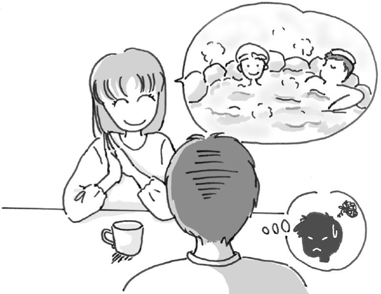
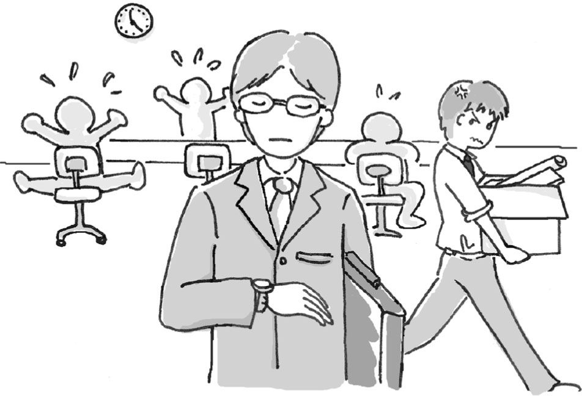
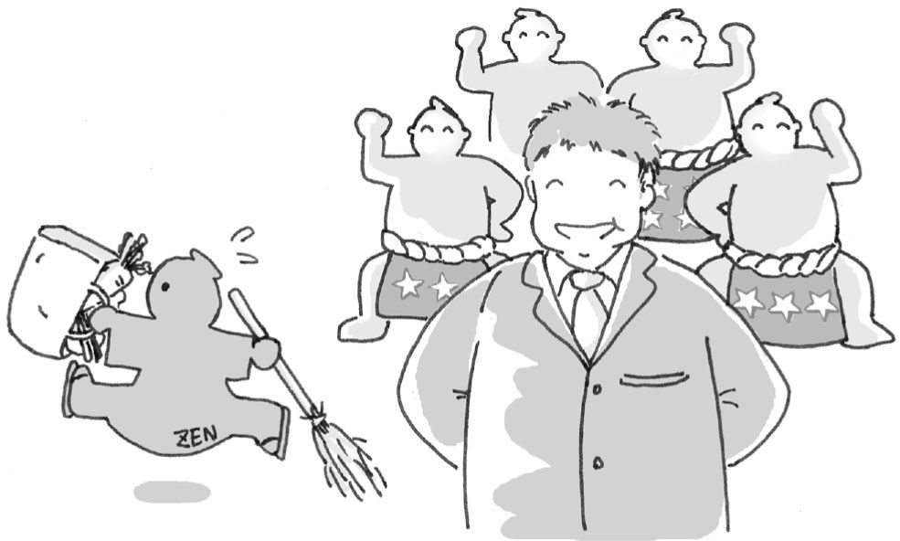

| 進化倫理学入門～「利己的」なのが結局、正しい～ | |
| 内藤 淳 | |
| (2009) | |
図版／ケー・アイ・プランニング
※各章冒頭の「問」に登場する人物・組織は架空のものであり、実在の人物・組織とは一切関係がありません。
善い／悪いの根拠
噓をついてはいけない。
子どもにそう教えない親はいないだろう。
筆者は以前に、アメリカのプロレス番組で、「ズルして騙して盗みとれ（Lie, Cheat and Steal!）」というのがわが家の家訓だと言いながら反則ばかりしているレスラーを見たことがあるが、実際にはそんな家庭はめったにない。彼がするのが「反則」であることに表れている通り、噓をついたり人の物を盗ったりするのが「悪い」「いけない」というのは、人間社会で共通の了解である。
にもかかわらず、最近の日本はそうでなくなったのかと思うほど、このところ「噓」にまつわる事件がやたらと目につく。一連の食品偽装事件はその典型だが、その他、耐震偽装、偽装請負、年金記録改ざんなど、日々のニュースは「偽装」「改ざん」のオンパレードである。少し前には、政治資金や事務所経費の虚偽報告疑惑で現職閣僚が次々と糾弾されていたし、それらを報道しているテレビ局でも、実験データを捏造した番組放送が問題になった。２００７年には「世相を表す漢字」に「偽」が選ばれたほどで、「ズルして騙して盗みとれ」は、今や日本人のモットーになったかのようである。
こうした噓の元は、要するに「自分の利益」である。商品の期限シールを貼り替えるのも、牛肉に他の肉を混ぜて内臓や血液で色までつけるのも、つまりそれでお金が入るとか、払うはずのお金を払わなくて済むといった利益があるからに他ならない。
しかしながら、普通われわれは、単純に利害損得だけで行動しているわけではない。人間の社会には、やっていいこと／悪いこと、善悪、正不正の区別がある。儲けになるとしても人を騙すのは「いけない」のであって、そんなことをすれば、周囲から厳しく批判され、社会的制裁や法的処罰を受ける。右の事件を起こした会社や政治家に対して実際に巻き起こった非難の強さを見れば、それがいかに「悪」く、「してはいけない」ことか、みんながどれだけそれを「許しがたい」と思うかがよく分かる。
ではなぜ人間の社会には道徳や善悪の区別があり、なにゆえわれわれはそれに則って行動しなくてはならないのだろうか。単純に自分の利害だけで行動したのではどうしてだめで、噓をついたり人の物を盗ったりするのはなぜ「いけない」のか。報道によると、牛ミンチを偽装した会社の社長はそれを「発想力だよ、発想力」と言って、商いをする上での創意工夫と位置づけていたようだが、そんなふうに利益を最優先して「そのためだったら噓もつく」のが「いけない」根拠は何なのか。そんな大人にならないよう「噓をつくのは悪いことだよ」と子どもに教えたときに、「どうして？」と訊かれたらわれわれは何と答えるだろうか。
人それぞれの価値観？
昔であれば、「死んでから地獄に落ちるから」「閻魔様に舌を引っこ抜かれるから」といった説明を持ち出せばそれで話は済んだかもしれない。しかし、地獄や閻魔様の存在を信じている人は今や珍しくなり、そうした説明はすっかり説得力を失っている。
それよりも現代で一般的なのは、「人が生きる上では利害損得以外に尊重すべき価値がある」といった「価値」に基づく説明だろう。「人との信頼」や「誠実さ」「生命の尊厳」などは、人間性や社会生活の根幹にある、人が人として守るべき基本的価値である。自分の利害損得以外に、これらを理性によってきちんと認識し、尊重して生きていくのが人たる存在で、道徳や善悪はその価値を表している。だから人は道徳を守らなくてはいけないし「噓をついてはいけない」。そうした説明が、ここでの標準的な答えではないか。
しかしこれは、一見もっともらしく聞こえて、その実、たいした説明になっていない。これだと、ではその価値はどこから出てくるのか、それを守らなければいけない根拠は何かという――はじめの問いから表現を変えただけの――疑問がすぐに出てきて、話は堂々めぐりになる。
「信頼」や「誠実さ」を「尊重すべき価値」とすることは、それ自体、文字通りひとつの価値観である。すると、これに対しては「あなたはそういう価値観かもしれないが、私にとっては、信頼などよりも、自分の儲けの方が大事だ。私はそういう価値観なのだ」という反論が出てくる。「そんなふうに自分の利益を最優先する価値観なんておかしい」と言いたくなるところだが、ではＡの価値観を正しいと言いＢの価値観を間違っていると言う基準は何なのか、異なる価値観同士の優劣をいかに決めるのか。人それぞれ生まれ育った環境が違い、受けた教育やつきあう仲間が違えば価値観も当然違ってくるわけで、その中で、どういう価値観が正しくてどういう価値観が間違っているかを客観的に判定するのはきわめて困難である。だとすると、「信頼」や「誠実さ」を大事に思って道徳を守るか、それよりも自分の利益を重視するかは、結局「本人の価値観の問題」ということになり、後者の価値観に立って偽装商品を売る人に対して「噓はいけないことだからそういうことをやめろ」と言うのは、あたかもサッカーファンに「日本人なのだから国技の相撲を応援せよ」と言うのと同じ、「価値観の押しつけ」ということになってしまう。
「そんなふうにみんなが自分の損得だけで行動したら、社会がめちゃめちゃになってしまうではないか」と思う人もいるだろう。道徳によって個人個人の好き勝手な行動が規律されるから社会が成り立つのであって、なによりも「社会のため」に道徳は必要なのだ、と。しかし、「自分の利益」第一の価値観を持つ人からすれば、社会がめちゃめちゃになるかどうかよりも「自分の利益」の方が大事なわけだから、そう言われても道徳に従う理由にはならない。そもそも、それで本当に社会がめちゃめちゃになるか、成り立たないかというと実はそうでもなく、ひとりひとりが非‐道徳的なまま暮らす社会だって、それはそれで十分成り立つ。実際、例えば「永田町」の政治家の世界が道徳的だとはとても思えず、それこそ自分の利益のための嘘や裏切りが渦巻く世界なのではないかと思うが、そういう中で（体を壊して退陣した元首相を除く）政治家たちは元気に生きているし「永田町」社会も立派に成立している。
こうした問題を、専門家である倫理学者はどのように捉えているだろうか。これは、倫理学の中でも特に「メタ倫理学」と呼ばれる領域で扱われる話だが、そこでも、道徳や善悪の判断には確たる（個人の主観を離れた）客観的な基準があるという立場（客観説、実在論などと呼ばれる）と、そうではなくそれらはその人その人の主観的態度の表れとみる立場（主観説、反実在論）が対立しており、はっきりとした結論は出ていない。後者の中では、道徳的な判断とは、結局、それをする人の感情表現にすぎないという主張（情緒主義）も有力で――それによると「君があの金を盗んだとは悪いことをしたものだ」というのは、「君があの金を盗んだ」という言葉を特別な恐怖の調子で言ったのと同じこととされる――、道徳や善悪の根拠を明らかにするというのは、専門家の間でも意見が分かれる難題である（図１参照）。
利害損得！
これについて、筆者の考えはこうである。
「噓をついてはいけない」「人の物を盗ってはいけない」といった善悪、正不正には、はっきりとした理由がある。しかもそれは、倫理学や道徳哲学を専門に勉強しないと分からないような複雑で難解なものではなく、単純で明快なものである。そして、人々はそれを分かっていないのではなく、はっきり意識していないだけで実はどこかでそれに気づいている。だからこそみんな「噓をついてはいけない」「人の物を盗ってはいけない」と本気で思うのであり、道徳や善悪・正不正の区別が人間社会にあまねく存在するのはそのためである。
ではその理由とは一体何か。
それはずばり、利害損得である。
先に触れたように、一般に、道徳や善悪というのは、利害損得と対立する話と思われている。損得でいうなら、期限の切れたお菓子でもラベルを貼り替えて売ってしまえば得なのだが、そこにストップをかけて、損得以外の尺度からわれわれの行動を抑制し、規律するのが道徳であり善悪だと考えられている。
しかし、こういう見方は間違いだというのが筆者の主張で、道徳は、われわれ自身の利害損得と離れてそれと別な根拠で成立しているのではない。そう意識されていないだけで、本当は利害損得から成り立っている。道徳の基は「利益」にあり、善をなすのは得、悪をなすのは損である。「噓をついてはいけない」のは「噓をつくと損だから」で、親が子どもに「噓をついてはいけない」と教えるのは、自分の子どもが噓つきになって生きていく上で損をしないように、また、そうなることで自分自身も利益を失うことがないように、である。
人間を「外」から見る
このことを理解するには、社会の中で道徳に規律されつつ当事者としてあれこれの行動をする「私」の立場で考えていては難しい。そこを離れて、われわれ自身を、すなわち、人間を「外」から観察する目線に立つことが必要になる。なぜなら、当事者の立場のままでは、ここで問題になる「自分の利益」がきちんと把握できないからである。
われわれは、自分にとっての利害損得を自分では分かっていないことが多い。「自分のことは自分が一番よく分かる」と言う人がよくいるが、まったくそんなことはない。「私」の利益は、「私」を離れて、その外から「私」を観察する立場に立つ方が分かることが多々ある。
たとえば、プロ野球などで、素質のある新人選手を監督があえて二軍に落とし、試合に出さずに走りこみばかりさせることがある。本人はすぐにでも一軍の試合に出ることをめざし、それを自分の利益と思っているので、二軍に落とされて落胆するが、実はその時期に筋力やスタミナなどの基礎体力を徹底して鍛えることが将来長く選手として活躍するためにプラスだった、あとになってそれが分かったということはしばしばある。こうした場合、二軍落ちはその選手の利益にかなっているのだが、当事者である本人がそれをその場で理解するのは難しい。本人の「外」からその選手の力量や長所短所を客観的に観察する監督やコーチの目線に立つことでそれが分かる。
それと同じで、道徳や善悪についても、当事者の立場を離れ、人間を「外」から観察することで、これらがいかにわれわれ自身の利益と結びついているかが見えてくる。といっても、筆者や読者を含め、われわれはみな人間であり道徳の当事者だから、完全にその「外」に出るのは無理だが、少なくともそれに近い態度をとることはできる。それは、科学の視点を採ることによる。
対象をその「外」から客観的に観察・分析するというのは、科学的態度の基本である。まさにそのことから、従来より科学の中心は、物理や天文といった自然現象を人間が観察・分析する自然科学であったわけだが、最近ではわれわれの外にあるそうした現象にとどまらず、人間自身の行動や心理を対象にした人間科学が大きく発展している。そこでは、われわれの行動や、自分で思っているその動機・理由の背後に、自分では意識していない心のはたらきが存在すること、思考や行動はそれらを基にして生じていることが、さまざまな実験や観察から明らかにされている。そうした目線に立つと、「人は自分で思っているほど、自らの知覚・情動・行動の本当の理由を知ってはいない」（心理学者・下條信輔『サブリミナル・マインド』中公新書での表現）のであり、その「本当の理由」を、当事者の目線を離れて、より客観的な観察や分析により解明していくのが人間科学の各分野だといえる。
進化倫理学の特長
その中で、近年とりわけユニークな成果が見られるのが、人間行動進化学という分野である。ここでは、生物進化の観点から、その過程で人間がいかなる心のはたらきや行動パターンを発達させてきたか、生物として人間が共通に持つ基本的性質はどういうものかが研究されている。人間の道徳性はその中でも重要な研究テーマであり、それを扱う研究は「進化倫理学」と呼ばれて、特に１９８０年代以降、活発な議論が展開されている（＊）。「道徳や善悪の根拠」はそこでの中心的な論点のひとつで、進化倫理学に基づいて独自の発想でこの問題を考えたとき、その答えが人間ひとりひとりの「利益」の中に見えてくる。これは、言い換えれば、道徳に「利益」という客観的な根拠を見出すということで、これまでの倫理学ではなかなか答えが見つからなかったこうした問題に、新しい角度から光を当て、独自の見方を提示するところが、新しい学問分野としての進化倫理学の大きな特長である。
本書では、その基本的な考え方を紹介しつつ、進化倫理学の特色を読者に分かりやすく紹介したい。冒頭に挙げたような偽装や捏造が頻発し、社会の荒廃が指摘されることから分かるように、昨今では、道徳や善悪の意義が見失われつつある。そうした中で、「噓をついてはいけない」「人の物を盗ってはいけない」ことの根拠をはっきり示し、道徳的・社会的な規範がどういう意味を持っているか、われわれにとってそれがいかに大事かを再確認するのが、進化倫理学を通じてここで「道徳の根拠」を論じる筆者の意図である。
それと同時に、今まであまり科学の検討対象にされてこなかったこの種の問題に対して、人間行動進化学という科学的領域から有用な考察ができることを示すのも本書の重要なねらいになっている。それは、「人文・社会科学と自然科学」「文系と理系」といった旧来の学問領域の壁を乗り越え、人間や社会の問題を考える上で、分野横断的な視点を持つことの意義と有用性を示すことでもある。その中で、進化倫理学という、まだ一般になじみの少ない学問について、幾分かでも読者の関心を得られればと思う。最後までおつきあいいただければ幸いである。
＊進化の観点から道徳を考えようとする動き自体は、もっと古くから、それこそチャールズ・ダーウィンが進化論を提唱して間もなくからあった。しかし、そこで出された理論や学説は、進化についての不十分な知識や誤解に基づくものが多く、今日では否定されている（例えば社会進化論など）。これに対して、20世紀の後半以降、本書でも紹介するウィリアム・ハミルトンやロバート・トリヴァースらの研究を通じて人間行動進化学の基本的な知識が整理され、そこから道徳に関する研究にも新しい展開が見られるようになった。本書で取り上げるのは、人間行動進化学でのそうした新しい知見に基づく「進化倫理学」である。（本文へ戻る）
問１ 感情的な意見？
タダシさんは若くして大手企業の課長を務めるやり手ビジネスマン。クールな仕事ぶりと鋭い論理で一目置かれています。
昨年結婚したばかりの奥さんと冬のボーナスの使いみちを話していたときのこと。さしあたって必要な買い物もないところで、奥さんは、「普段ゆっくりする時間がないから、お正月にちょっと豪華な温泉旅館なんかに泊まってのんびり過ごすとかってどうかしら？」と言いますが、タダシさんは反対です。
「正月なんて、わざわざ値段の高くなる時期に合わせて旅行して無駄なお金を使う必要はないよ。温泉は年末年始じゃなくても営業してるんだし、時期をずらせば安く済むじゃないか。そしたら、浮いたお金を貯金するなり投資するなりして活用できるし、冷静に考えればその方が正解だ」と言って奥さんを説得、しぶしぶながら奥さんもあきらめます。
次の日のランチタイム、タダシさんがこの話をして、「まったく女っていうのはつくづく感情的で困るよ」とつぶやくと、同僚のヒロシさんから「お前の言うこともたいがい感情だけどな」と釘を刺されました。タダシさんの言い分のどこに感情が入っているのでしょう？
（問１の答え）

「利己的」な人間
序章でも触れたが、「自分の利益」というのがわれわれの行動全般の大きな動機であるのは間違いない。隣り合った店で同じ牛乳が１８８円と２１８円で売られていれば誰だって１８８円で買うし、来月からガソリンが値上げされるなら今月中に給油しようと思う。うまくいけば儲かると思うからわれわれは株に投資したり宝くじを買ったりするのであって、損失を目当てに株を買う人、当たりのないくじを買う人はいない。その意味で、人間というのはそもそも「利己的」な存在である。
利己的というと、わがままだとか自分勝手だとか、それ自体で「悪い」イメージがあるので、こうした表現をすると、それだけで「人間の性質はもともと悪なのだ」という受け取り方をする人がいるかもしれない。しかし、自分の利益に向けて行動すること自体は善でも悪でもない。昇給（という利益）のために一生懸命仕事をするとか、大学合格（という利益）のために勉強をがんばるといったように、それが「善い」場合も当然あるわけで、利己的であることと「悪」は必ずしも直結しない。よって、以下本書で使う「利己的」という言葉は、それだけで「悪い」という評価は含まず、単に人間（あるいは他の生物）が「自分の利益に向けて動く」という行動上の性向を指して使う（ではその「利己性」と善悪がどう関係してくるかが、本書の話の中心になる）。
「利己性」の必然
そういう意味で「利己的」であるのは、人間が、進化によって地球上に生まれた生物であることからして、きわめて自然で当然である。進化というのは、個々の生物が自分の遺伝子を次の世代に残す中で、そのためにプラスになる特徴や性質が子孫に受け継がれることで起こる。
「自分の遺伝子を残す」とは、具体的にはどういうことを指すか。どんな生物でも、「自分の遺伝子を残す」には、遺伝子を持つ当の自分が生きていなければならない。よって、その第一の要素は自らの生存にある。と同時に、遺伝子は自分の子どもに受け継がれるから、それを「残す」ことの中心は、子どもを作ること（および無事育てること）、すなわち繁殖にある。また、生存にしろ繁殖にしろ、そのためには、食べ物や水、ねぐらや巣、それを作る木の枝などの材料といった各種の資源が必要なので、そうした資源の獲得もまた「自分の遺伝子を残す」ための重要な要素である。なかでも、人間を含めた有性生殖をする生物の場合、繁殖するにはパートナーとなる異性が不可欠なので、配偶者はとりわけ重要な資源のひとつである。これら「生存」「繁殖」「そのための資源獲得」の３つが、生物が「自分の遺伝子を残す」ための具体的な要素であり、生物にとっての基本的「利益」の中身になる（進化学では、そうやって生物が成功裏に「自分の遺伝子を残す」ことを「（包括）適応度の向上」というが、本書では、「適応度」などの専門用語を避けて「利益」を使う）。
こうした利益を確保する上でプラスになる身体特性や行動性向が、親から子へと受け継がれ、世代を経てその生物種の子孫に広まっていくのが生物の進化である。
たとえば、ここに真っ白な蛾がいるとしよう。色が白いと木の幹や枝（濃い茶色だと想定する）にとまったときに目立ってしまって鳥などの天敵に見つかりやすく、生き残るのはかなり大変である。運よく生き延びて子どもを作っても、その子どもも遺伝によって親の白色を受け継ぐので、やはりその多くは食べられてしまう。ところが、そうした中で、ある個体が生まれる際に遺伝上の突然変異が起きて、偶然、少し茶色っぽい色になったとする。それだと木にとまったときに他の仲間よりも目立たないから、天敵に食べられる確率が減り、生き残って子どもを残すチャンスが増える。するとその子どもには親の茶色っぽい色が遺伝するため、こちらも比較的目立たず、親と同じように高い確率で子どもを残すことができる。
これを何世代も繰り返すと、白い蛾がなかなか子どもを残せずに数を減らしていく一方で、茶色っぽい蛾（の子孫）が増える。その過程で、さらに樹木の色に近い、濃い茶色の子どもが突然変異で生まれれば、今度はそちらがより高い確率で生き残って子孫を増やす。突然変異は偶然だから、その中では、反対に、より白に近い色の子やそれ以外の色の子が生まれることもあるが、これらはいずれも目立つので天敵に食べられやすく、子孫を増やすことができない。こうして、もともとは白い蛾から、茶色種の蛾が進化する（図２参照）。
このようにして、それぞれの生物種において、「生存・繁殖（とそのための資源獲得）」にプラスな、利益的な特徴が子孫に受け継がれて広まっていく――言い換えれば、各生物が自分にとって利益になる特徴を発達させていく――のが、（自然淘汰による）進化の基本的な仕組みである。
この過程は、周りの環境条件がどうであるか、そのときにどういう突然変異が起こるかといった偶然に左右される。この例でも、周囲の樹木がもし白樺のように白い木ばかりだったら、結果は反対になって茶色い蛾が食べられ、この蛾には「白い体色」が進化する。環境の変化によっては、昨日まで有利だった性質が一転不利になることもしばしばあるので、進化には特定の方向性はない。その時々でどっちに行くか分からない、偶然の積み重ねが進化である。
しかし、どういう方向に行くにしろ、少なくとも、その時々で当該生物になにかの御利益をもたらす性質が進化するのは確かで、不利益になる性質は、子孫を残すことに結びつかないので進化しない。若干誇張した言い方をすれば、個々の生物とは、そうやって進化させた「自分の遺伝子を残す上でプラスになる形質（遺伝的な特徴や性質）」をちりばめた集合体であり、その特徴や性質を発揮して、餌をとったり天敵から逃れたり配偶相手を獲得したりといった生存・繁殖（資源獲得）活動を行うのが生物の一生である。生物の行動・活動が自分の利益に向けてなされるのは、その意味できわめて自然であって、「利己性」は、進化の仕組みからくる生物一般の基本的性質だといえる。
ところで、ここで注意しなくてはならないのは、「自分の遺伝子を残す」ことと「種の保存」とは違うということである。これらを混同して、生物は進化の中で自分たちの種族や集団を存続させようとする本能を発達させ、そのために行動すると思っている人がよくいるが、これは間違いである。右で述べたように、進化の中で生物に受け継がれるのは、「自分の遺伝子を残す」、すなわち自分自身が生存したり繁殖したりするのにプラスの形質であって、「種」のような集団全体を残すための性質ではない。
「種の保存」本能を信じている人は、レミングの集団自殺などをその証拠として挙げる。レミングは北欧の森に棲むネズミの一種で、仲間の個体数が増えすぎて食料などが不足した場合に、一部の個体が集まって森を出て、崖から海に飛びこむといわれている（"White Wilderness"という題でドキュメンタリー映画にもなった）。これは、危機に際して、共倒れを防いで種族を存続させるために自分を犠牲にする本能的行動と解釈されてきた。しかし、すでに多くの専門家が指摘しているようにそれは誤解で、そんな性質や本能は生物に進化しない。
仮にそうした「自己犠牲」的本能を持った生物がいたとしても、進化の過程で、その中に、突然変異かなにかで「自己犠牲」をしない、純「利己的」な性質を持った個体が生まれてしまえばどうなるか。食料不足などの危機が起こるたびに、「自己犠牲」性質を持った個体がすすんで犠牲になっていくのを尻目に、「利己的」個体は決して犠牲になることなく、生き残って子どもを増やしていく。何世代かすれば、「自己犠牲」性質を受け継ぐ者は消え、残っているのは「利己的」性質の者ばかりになって、「種の保存」本能はその生物から失われる。進化の仕組みからいって、「種の保存」本能は生物の間に進化しないのである。集団自殺に見えるレミングの行動も、個々のレミングが、数が増えて暮らしにくくなった森を脱出し、（自分が）もっと生きやすい環境を探して移動することで生じるもので、「種の保存」のためではなく、個々の個体が自分の利益のためにとる行動である。崖から落ちたりするのはその途中での事故にすぎない（当該映画の信憑性にも疑問の声がある）。
進化倫理は「弱肉強食」ではない
他方、進化についてこうした説明をすると、今度は、それを「弱肉強食」「優勝劣敗」の競争と結びつけて、弱い者や劣った者が淘汰されて、強い者、優れた者が残っていくのが進化だと考える人がいる。そういう人は、自然の世界はこうした競争によって強者が残って進歩・発展するようになっている、だからそれは「善いこと」なのだと主張して、自由競争に賛成しそれを促進しようとするのが「進化倫理」だと思うかもしれない。実際、悪名高い社会進化論はそういう主張をした。しかし、ここにも誤解があり、進化は別に「弱肉強食」でも「優勝劣敗」でもないし、進化倫理学は、競争を擁護する思想とは違う。社会進化論というのは、単なる競争主義の価値観を、進化に関する誤った知識に当てはめて提示したもので、人間行動進化学や本書で論じる進化倫理学とは別物である。
進化というのは、環境に適応的な性質を持った者が、そうでない者よりもたくさん生き残って子孫を増やすことで起こる現象だから、そこに競争的要素があるのは確かである。しかし、先にも述べたように、「適応」というのは、生物の遺伝子にどういう突然変異が起こるかとか、そのときの環境条件がどうなっているかといった偶然に左右されるもので、そうした偶然によって生物の体のつくりや行動パターンが、あっちに変化したりこっちに変化したりするのが進化の過程である。強い弱いで言うなら、今までの生物で最も強いのはおそらくティラノサウルスあたりではないかと思うが、彼らは進化の中でずいぶん以前に敗れて絶滅してしまっている。大きくて強い恐竜が気候の変化に適応できずに絶滅し、それまで恐竜の目を逃れてひっそりと暮らしていた哺乳類が繁栄したことからも分かるように、生物をとりまく環境は可変的で、その中で何が「適」で何が「不適」かも常に変動する。あえて競争にたとえるなら、昨日までは相撲で競争していた者同士が今日からは将棋で競争することになったというような状況が進化では常に起こりうるわけで、そこに強弱や優劣を持ちこむのはおかしいし、そもそも持ちこみようがない。進化と進歩は違うのであり、劣った者が淘汰されることで世界が良くなるとか発展するといった話は、人間行動進化学からは出てこない。そういう競争に賛成することと進化倫理学が無関係であるのももちろんである。
生物は「利益」に向かう
「種の保存」論でも「弱肉強食」の競争主義でもなく、生物進化を見ることで分かるのは、生物が、自分に利益をもたらす形質を発達させ、それによって「自分の利益に向けて活動する」という事実である。たとえば、トラやライオンのような肉食動物は、鋭い爪や歯、がっしりした顎など、獲物（という資源）を捕まえてその肉を食べるために有益な――「自分の利益」になる――形質を進化の中で発達させ、それを使って、狩りという資源（利益）獲得活動をして生きる。獲物を捕まえにくい蹄を持ったトラや、肉を食べにくい平べったい歯を揃えたライオンはいない。
さて、人間も生物の一種であるから、そういう「利己的」な性質が人間にも当てはまるのは当然である。神学的な創造説に立って、人間は神の特別な被造物だと考えるなら話は別だが、現代の一般的理解（および本書の立場）では、人間も、霊長類の一種として祖先種から進化してきたのであり、その中で、自分の「生存・繁殖、そのための資源獲得」にプラスになる身体器官や行動性向を発達させ、それに向けて行動・活動している。事実、われわれの身体を見れば、胃腸が食べ物を消化・吸収し、免疫システムが体内に入ったウイルスや細菌を排除し、精巣が精子を作り、卵巣が排卵を起こすといった具合に、どの器官も、その人の「生存・繁殖」に向けた機能を備え、そのための活動を日々絶え間なく行っている。
脳の進化と人間の利益
このことは、人間の最大の特徴である脳とその作用についても言える。脳は、われわれの生存・繁殖にプラスにならないのに、それとは別の原因で人間に進化したのではない。他の身体器官と同じように、それがわれわれの利益にかなうがゆえに進化したもので、実際、そのように機能している。
人間の脳の進化は、集団生活の中での社会関係に対応する必要性から生じたと考えられている（他に果実食のためという説などもある。あちこちに生えている草と違って、果実の採集には記憶や予測の能力が必要になるから）。人間は、集団を作って暮らす、社会的な動物である。そこでは、自然環境だけを相手に、獲物や木の実が見つかりそうな場所を探すとか、天敵がいそうな場所を避けるといったことを考える以上に、複雑で流動的な人間関係への対応やその中での利害調整の必要が生じる。人間の脳が発達したのは、そうした社会関係に対処するために、言語コミュニケーション能力を含めた知性や理性を持つことが利益にかなったからである（その証拠に、霊長類同士で比較すると、大きな群れを作って社会生活を営む種ほど脳が発達しているという）。
事実、まさにわれわれが日々直面しているように、社会生活においては、個人個人が協力したり交渉したり争ったりする中で、誰が強くて誰が弱くて、誰と誰は仲が良くて誰と誰は仲が悪くて、この人の性格はどうで、うまくやるにはどうしたらよいかなど、実にさまざまな点で、情報の収集・蓄積、それに基づく推測や計算、言葉の操作や微妙なコミュニケーションが求められる。そういう面での対応がきちんとできるかできないかで利害が大きく変わってくるのは日ごろ誰もが実感している通りで、脳とその能力の進化がわれわれの利益に結びついていることは疑いない。
そして現実に、日々の生活において、われわれは脳の能力を、「自分の利益」のために使い行動している。それは、脳の進化が生じた原始時代であろうが、それとは生活環境が大きく変わった現代であろうが変わりはない。冒頭の例のように、１８８円と２１８円の牛乳のうち安い方を判定して買えるのも、ガソリンの値上げ情報からその期日前に給油に行っておこうと考えるのも、脳の知的能力を使うゆえである。その他もろもろの生活場面において、どうしたら儲かるか、どうしたら健康を維持できるか、どうしたら人間関係がうまくいくかにわれわれは脳を使い、儲かるように、健康でいられるように、人間関係を円滑に処理するように――縮めて言えば利益になるように――行動する。確実に暴落する株を買うにはどうしたらよいか、子どもや孫をいかにして病気に感染させるか、どうやって上司や同僚と軋轢を抱えるか、といったことに頭を悩ませる人はいない。こうしたことは、脳をはじめとする身体諸器官が、われわれ自身の利益のために進化し、そのための機能を備えていることからくる必然であり、それによってなされる人間のもろもろの活動や行動が「自分の利益」に向けられていることも、生物一般の「利己的」な性質に照らして自然で当然なことだといえる。
多様な「資源」
もっとも、人間の場合、その社会生活の複雑さに応じて、自分の利益として想定される「生存・繁殖のための資源」の中身は、他の生物に比べてずっと多種多様になる。生きるための基本である食料や水、衣類その他の生活財、住む家や土地はもちろんのこと、それらを作る材料や道具、それらすべてを手に入れる元となるお金、小切手といった財物全般がそこには含まれる（繁殖のパートナーである「配偶者」が重要な資源であることはすでに述べた通りである）。のみならず、職場や地域で高い「地位」を得ること、社会的な「評判」や「名誉」を保持することなどは、そうした財物や配偶者の獲得と密接に結びつくし、金銭や地位を獲得するには「情報」が重要な意味を持つので、これら「地位」や「評判」「名誉」「情報」といった無形物も非常に重要な資源になる。
お金や地位をはじめとするこれら有形・無形の資源を獲得し、自分が生存・繁殖することが、人間にとって「自分が遺伝子を残す」にあたっての利益の中身になる。これは、利益という言葉で普段われわれが思い浮かべるものと内容的にほぼ一致するが、次章で詳しく述べるように、自分だけでなく、自分と遺伝子を共有する血縁者がそれを得ることも「自分の利益」と想定される点で、普通に個人レベルだけで考えるよりもここでの利益の方が意味が広い。人間も、他の生物と同様に、究極的にはこうした意味での利益獲得に向けて動く「利己的」な存在である。これが人間行動進化学の基本的視座であり、本書の話の一番の前提になる。（誰にとっても利益的な社会 へ戻る）
人は理性で行動する？
生物進化の観点に立って、このように人間の行動原理を「利益」や「利己性」に集約する見方に対しては、他の動物と違って「人間は理性で行動する」のであり、その区別を踏まえずに、人間を生物一般と一緒くたにするのはおかしいという声があるだろう。他の動物は、本能に従って単純に利益に向けて行動するかもしれないが、人間は、ひとりひとりが理性によって自分で物事を考え、意志決定して行動している。理性的思考とそれに基づく自由意志で行動する点で、人間は、自然的な「遺伝子の規定」を脱却しているのであり、それを他の生物と同じ次元に並べて利益に還元して考えるのは一面的で偏った人間理解だ。そういう批判がありそうである。
しかし、人間が「利益に向けて動く」ことの必然性は、われわれの行動が生じる内面的な仕組みを見ることからも裏づけられる。このことは、次章以下の議論を理解する上でも重要なポイントになるので、若干詳しく説明しておきたい。
行動は感情・感覚で決まる
そもそも人間は理性では行動しない。すでに18世紀にデビッド・ヒュームというイギリスの哲学者が指摘していることだが、行動を決めるのは感情・感覚的な「快」「不快」である。理性がするのはその補助にすぎない。
その証拠に、人間は、脳の損傷などで感情や感覚を失うと、理性的な能力が正常でも、行動や意志をきちんと決められなくなる。それを示した神経学者アントニオ・ダマシオの有名な研究によると、事故や手術のために感情を司る脳の部位（前頭前野）を損傷した患者は、それ以外の論理や計算、注意力や言語、記憶といった理性的・知的能力には支障がないにもかかわらず、行動や意志の適切な決定ができなくなる。知能テストや人格検査など「机上の問題」では正常な答えを出せるのに、実際の行動はめちゃめちゃになる。朝起きて仕事に行くまでにいちいち指示がないと準備ができず、仕事をするにも時間の管理や配分ができない。同じことをしつこくやり続けたり、その瞬間に興味を覚えたことだけに没頭したりする。たとえば書類の分類作業を頼むと、そのうち特定の書類だけを細かく読み続けたり、分類をどういう原則でするか、日付か書類の大きさか、問題の内容かといったことをえんえんと考え続けたりして一日を終わらせるといった具合である。もちろん、対人的・社会的な行動もおかしくなり、人の言うことを聞かず、場当たり的に振る舞い、礼儀や他人への配慮がなくなる。
いくつものこうした患者の例と関連する脳神経の研究から、ダマシオは、人の行動や意志の決定は、目の前の場面に対してどういう行動の選択肢があるか、そのおのおのの結果はどうなるかを思い浮かべたときに生じる感情・感覚的な「快」「不快」に応じて、より「快」なものが選択されることでなされるという理論（ソマティック・マーカー仮説）を発表した。この理論は、その後の脳神経科学、認知心理学などに大きな影響を与え、それを裏づける研究がその後もいろいろ出てきている。「人は理性で行動する」のではなく、行動を決めるのは感情・感覚であることがここから分かる。
「快」「不快」と行動
われわれの日常の行動で具体的に考えてみよう。たとえば、冒頭で挙げた「１８８円と２１８円の牛乳で安い方を買う」という行動は、計算によって行動が決まる、理性的行動の典型のように見えるが、実はそうではない。確かに、同じ牛乳があっちの店では１８８円、こっちの店では２１８円で売られていることを覚え、１８８が２１８より小さいと判定し、１８８円の牛乳を購入した方が手持ちのお金が減らないことを理解するのは、記憶、計算、推論といった理性の働きである。しかし、これだけでは「１８８円の牛乳を買った方がお金が減らない」という事実認識が生じるにすぎない（ダマシオが診た患者は、ここまでは正常なので「机上の問題」は解決できる）。そういう認識をした上で、「お金が減らない」イコール「得である」ことが「快」だという感情反応があって、「快」に向けた行動が喚起されることで実際の行動は生じる。現実の行動を生じさせるのは、認識そのものではなく、認識した内容に対する「快」「不快」である（問１でのタダシさんの意見も、ボーナスを活用してお金が殖えるのが「快」だという感情に基づいている）。現に、大金持ちで30円余分な経済的支出にさしたる「不快」は感じないという人であれば、「１８８円の牛乳を買った方がお金が減らない」という認識は同じであっても、「別に構わないから２１８円の牛乳を買う」行動が生じうる。
また別の例で言うと、あなたが東京駅にいてこれから博多へ行こうとしているとしよう。電車で行くか飛行機で行くか。電車であれば、東京駅から新幹線で、のぞみ号なら博多駅まで５時間ちょっとである。飛行機なら東京駅からＪＲとモノレールを乗り継いで羽田空港まで約25分、羽田から飛行機に２時間弱乗って、福岡空港に着いたら地下鉄で博多まで約５分。途中の待ち時間を考慮して全体で３時間半程度だろう。料金は、電車だと２万２０００円ほど、飛行機だと（普通片道運賃の場合）全部で３万８０００円ぐらいだが、話を簡単にするために、飛行機の割引チケットをあなたが持っていて、値段は同額になることにする。
ここまで列挙した内容、すなわち、東京から博多までどういうルートがあり、それぞれにどのぐらい時間がかかるか考えられるのは理性的な思考のおかげである。しかし、ではそこで電車と飛行機とどちらに乗るかは理性では決まらない。どっちが「快」かによる。値段が同じで電車より飛行機の方が１時間半ぐらい早く着くのだから、理性的な結論は「飛行機」なようだが、それは「早く着くこと」が自分にとって「快」だからである。その証拠に、「早く着くこと」に感じる「快」以上に、途中の乗り継ぎが面倒くさいとか飛行機が怖いといった「不快」を感じる人は、飛行機の方が早く着くという事実は変わらないのに「電車で行く」という行動をとる（図３参照）。
「快を志向し不快を回避する」原則
その一方で、われわれは、「不快」と分かっている行動をあえてとることもある。見たいテレビを見ないで受験勉強するとか、大好きなパフェをダイエットのために我慢するとか、苦痛を覚悟で歯医者に行くとか手術をするといった場合がそれにあたる。
しかし、これは「快」と「不快」の比較で「不快」の方が選択されているのではなく、「見たいテレビを見る」という（一時的な）「快」と、その結果として受験に失敗するかもしれないという「不快」とが比較されて、後者の「不快」の方が大きいために生じる行動で、より「快」な行動が選択されていることに変わりはない。実際、今日テレビを見ても受験には影響ないぐらい勉強が進んでいる人や、受験はまだ先で今日だけテレビを見ても必ずしも失敗には結びつかないと思う人（誤った認識でそう思っている人も含めて）であれば、テレビの「快」に対してそれを凌駕するほど受験失敗の「不快」が実感されないので、そういう人はテレビを見る。
同じように、ダイエットも、今パフェを食べる「快」とそのために自分が太ることの「不快」とが比較されて、より大きな「不快」が回避される行動である。歯医者や手術の場合は、今現在具合が悪い「不快」に治療時の「不快」を足したものと、治療が終わって治ったときの「快」とが比較されて、前者以上に後者が大きく感じられることによって治療や手術が選択されている。
もちろん、ここで感じられる「快」「不快」の具体的な程度は人によって変わる。サッカーが大好きで、ワールドカップの中継を見る「快」が受験に失敗するかもしれないという「不快」を上回る人とか、歯医者に行くのがあまりに恐怖でどれだけ歯が痛んでも行く気にならないといった人もいる。しかし、いずれにしろ、中継を見る「快」に向けた行動、歯医者の恐怖という「不快」を避ける行動がなされているわけで、それぞれのケースで「快を志向し不快を回避する」という原則で行動が決定されることは共通である。サッカー中継を見るのが「不快」だから見るとか、歯医者に行った方が「快」だから行かないという人はいない。
「快」「不快」と利益
このように、人間の行動は、（理性ではなく）感情・感覚の「快」「不快」で導かれるわけだが、その「快」「不快」には、われわれにとっての利益が反映している。われわれは基本的に自分が生存・繁殖する上で利益になるものに対して「快」を、不利益なものに対して「不快」を感じるようにできている。
たとえば、「痛い」という感覚は言うまでもなく「不快」だが、これは、指を切ったとか胃が荒れたとか、身体の一部が損傷したり内臓に異変が起きたりしたときに生じる。それらが生きていく上での不利益なのは明白で、反対に、胃に潰瘍ができると胸がすっきりし、治ると痛みを感じる人はいない。
この場合も、具体的にどういう刺激や状態に対してどの程度の痛みを感じるかは、人それぞれの経験や資質によって変わってくる。アマゾンの狩猟採集民は、とがった石や木の根がごろごろしている森の中を裸足で苦もなく走り回れるかもしれないが、現代の日本人が同じことをすれば足の裏が痛くて歩けないだろう。それは両者の経験の差からくる「感じやすさ」の程度の違いである。しかし、その彼らだって、足に矢がささるなど、もっと強い刺激によって身体が傷つけば「痛み」を感じることに違いはない。根本のところで、身体の損傷や異変といった生存・繁殖上の不利益に対して「痛み」などの「不快」が生じるのは、文化や時代によらず人間に共通である。
それと同時に、「痛み」を感じたときにわれわれがとる行動のパターンも決まっている。「痛い」箇所に何の注意も向けない人はいないし、切った指がもっと痛くなるよう傷口をこするとか、胃が痛いと余計食欲がわくという人もいない。どんな人でも、「痛い」箇所には注意を向け、それが軽減されるように、痛みの原因がなくなるような行動をとる。指を切ったならばその箇所を洗う、消毒するなどしてしばらくその指を使わないようにするし、胃が痛いならば脂っこいものをやめて消化にいいものを食べるとか、食べるのを控えるとかする。
「痛み」という感覚は、こうして、身体の損傷や異変を防ぎ、その修復・回復に向けた行動をわれわれに喚起する作用を果たしており、それによってわれわれは、自然に、自分の利益に向けた行動をとっている。空腹感や満腹感、性的気持ちよさなど他の感覚も然りで、ここでもわれわれは、空腹という「不快」を避け満腹という「快」を志向する、性行為の「快」を求めることにより、栄養摂取や生殖といった利益に向けた行動をとっている。
同じことは感情にも言える。たとえば、「恐怖」の感情は、背後でうめき声が聞こえるなど、自分の身に何かの危険や脅威が迫るといった不利益的状況に対して生じる。言うまでもなくそれは「不快」であって、われわれは、その解消のために、当該状況から離脱する、その元を確かめて危険でないことを確認するといった行動をとる。それが、自分の生存上の安全確保という、利益に向けた行動であるのは言うまでもない。
嬉しい、悲しいといった感情も然りで、給料が上がる、会社で昇進する、希望の大学に合格するなどがあればわれわれは「嬉しい」し、給料が下がる、リストラされる、大学に落ちるなどすれば「悲しい」。嬉しいのは「快」で悲しいのは「不快」だから、われわれは、「快」を得、「不快」を避けられるように、給料や地位が上がるよう仕事をするし、大学に合格するよう勉強する。「悲しみ」が得られるよう、上司や人事担当者に目立つように勤務態度を悪くする人、営業成績を上げないよう気をつける人、入試で努めて間違った答えを書く人はいない。
ここでももちろん、具体的にどういう対象に対してどの程度の感情を感じるかは、人それぞれの経験や状況を反映して差が出る。失業中の人が10万円手に入れたら大喜びするが、億万長者が同じ金額をもらってもさほど嬉しくないかもしれない。普段から女性にモテるので一回二回のデートにさほど思い入れのない男性もいれば、一度でいいから女性とドライブなどしてみたい、それが一生の悲願だという男性もいるだろう。しかし、その億万長者だって、手持ちの株が値上がりするのと値下がりするのとで値下がりする方が嬉しいということはないし、いかにモテる男性でも、意中の女性に嫌われて歓喜はしない。基本的に、人間は、財産を得る、地位や立場が上がる、配偶者・恋人を獲得する、子どもが生まれるといった利益に「快」を感じ、その反対のことに「不快」を感じるようにできている。
「利己的」行動が生じる仕組み
感情・感覚に自分の利益が反映しているのは、それが進化の産物だからである。自分の体が傷ついたときに「不快」（痛み）を感じる人、「快」を感じる人、何も感じない人では、「不快」を感じる人が「生存・繁殖」に最も有利である（今述べたように、そういう人には傷の修復・回復に向けた行動が喚起されるから。何も感じなければ損傷回復のための行動が生じないし、ましてそこに「快」を感じたら、身体を傷つける行動が促進されることになって、生存・繁殖の確率が低くなる）。そのため、祖先の時代にそういう神経作用を持った人――まだヒトではなかったかもしれないが――は、そうでない人より高い確率で生き残り、子どもをたくさん作って当該神経作用を受け継がせてきた。その過程で、身体の損傷に、より強い「不快」を感じる神経作用を持った者が生まれればそちらがたくさんの子孫を残した、その末裔がわれわれであるわけで、われわれの感情・感覚的な「快」「不快」が自らの利益と合致しているのは、進化からくる必然なのである。
人間の行動は、その「快」を志向し「不快」を回避することで生じる。（理性ではなく）感情や感覚によって行動が決まるこの過程は、われわれに、自分の利益に向けた行動を自然に起こさせる仕組みになっている。こうした仕組みを通じて、人間は、自分ではいちいち利害損得を考えていなくても、意識しないまま自分の利益に向けた行動をとる。言ってみれば、われわれは、自分の利益に向けて動くように「できている」のであり、自らが意識している以上に「利己的」な生き物である。
内面の柔軟性からくる副作用
とはいえ、だからといって、われわれひとりひとりの個々具体的な行動や生き方のすべてが、いちいちぴったりその人の利益にかなうものになるわけではない。ここで言っているのは、人間が「自分の利益に向けて動く」ための行動の仕組みを備えていて、それゆえ、基本的に「自分の利益に向けた行動をとる」ということである。個別具体的な事情や状況によっては、そうでない行動、自分の利益に反する行動が生じることも当然ある。自殺のように生存に正面から反する行動や、結婚しない、子どもを作らないといった非‐繁殖的な行動はその例である。
こうした事例が実際にあることは、本章の主張への反証になるように見えるがそうではない。これらは、「快を志向し、不快を回避する」という、利益獲得に向けて備わった内面的な行動メカニズムが、まさにその利益獲得の効果が上がるよう、柔軟にできていることから生じる一種の「副作用」だと考えられる。
前述のように、感情・感覚的な「快」「不快」の具体的な対象や程度は、個人個人の経験や成育環境を反映して変わる。感情・感覚作用がこのように柔軟にできていること自体は、人間にとってきわめて利益的である（そのおかげで人間は、自分をとりまく環境条件に合わせて感情・感覚を調節して、多様な環境に適応して生きていける。食料を入手するのに伴う「快」が、もし「狩りでイノシシを仕留めること」に固定されていたら、貨幣経済の文明社会でお金を得ることに喜びが感じられず不適応である）。しかし、感情・感覚のそうした柔軟性のゆえに、経験からインプットされる情報によっては、ある人の中に、自分の生存・繁殖に反する、不利益的な感情反応や行動パターンが形成されてしまうことも起こる。
一般に、他者から強制や拘束を受けず、自分の自由に、欲求の通りに振る舞うことは、生存・繁殖のため、資源獲得のための活動を自由に行うことに通じる。よって、われわれはそれを「快」に感じ、強制や拘束を受けるのを「不快」に感じる感情作用を持っている。しかし、人によっては、たとえばそこへ「この世は不自由でいっぱいだが、死んだら神の楽園に行って思いのまま永遠に暮らせる」とか、「子どもができたらかかりっきりで面倒を見なくてはならない上に、養育や教育に多大なお金がかかり、自分のやりたいことは何もできなくなって人生の終わりだ」といった具合に、現実の社会の中で生きていくこと、子どもを作って育てることに伴う制約を過度に強調するメッセージや経験が強くインプットされる場合がある。それに加えて、借金の取り立てに追われる、毎日深夜まで働かされて休みもとれない、子育てでノイローゼになった友人を見るといった、そのメッセージの裏づけになるような経験が重なれば、強制や拘束を「不快」に感じそれを回避するという内面作用から、自殺や子どもを作らないといった行動が生じうる。つまり、本来は利益を確保するための仕組みになっている内面のメカニズムに、後天的に非‐利益的・反‐利益的な情報がインプットされることで、ある人の中で、自分の利益に反する行動が生じてしまうこともある。しかしそうであっても、元にある内面の「仕組み」自体は、各人の利益確保に向けた構造と機能を有していることに変わりはなく、そういう「仕組み」を誰もが備えているという点で、人間が基本的に「利益に向けて動く」という原則は否定されない。
環境条件の変化による副作用
もっとも、このうち「子どもを作らないで生きる」といった行動には、人間の感情・感覚が進化してきた原始時代と、われわれが生きている現代の環境条件の違いも関係してくる。人類が原始から今に至るまで子どもを作って遺伝子を残してきたのは、その過程で存在した個人個人みんなが自覚的に「子どもが欲しいから子どもを作ろう」と思ったからではないだろう。そういう明確な意志はないままに、性行為に「快」を感じる神経作用に突き動かされて行動した結果たくさん子どもを作ったという人も相当数いるはずである。言い換えれば、繁殖という利益に向けた行動が生じるには、本人が自覚的に「子どもを欲しい」と思う必要はないのであって、性行為に「快」を感じる神経の仕組みを備えることが、そういう行動を生じさせる直接の「装置」になっていた。
これに対して、現代のように避妊の知識と技術が発達すると、性行為と繁殖とが切り離され、性行為で快感は得つつも繁殖はしないという行動が可能になる。その中で、前述のように、子育てに多大なお金と労力がかかるとか、子どもがいると好きなことができないといった「不快」を強く感じるような見聞・経験をした人には、「快を求め不快を回避する」という（本来は利益のために備わった）行動原理に基づいて、「子どもを作らない」という不利益行動が生じうる。
しかしながら、そういう人だって、全般的に見れば、昇給や昇進をすれば嬉しい、空腹を感じたら何か食べる、怪我や病気を避けるといった「利益に向けた感情反応パターンと行動パターン」を備えており、それに基づいて利益に向けて行動・活動していることに違いはない。人によって具体的な行動にはバリエーションがあり、その中の個々の行動には不利益的なものも時に見られはするが、われわれは、基本的に、「利益に対して快」「不利益に対して不快」を感じる感情・感覚作用に基づいて、自分の利益に向けて自然に行動している。
このように、人間の内面作用は、利益に向けた行動を導出するための「仕組み」になっているのであり、人間は、（他の生物と同じように）利益に向けて「利己的」に行動する。その意味で、われわれの多くが日常、自分の利益を求めて利害損得で行動するのは「そうできている」通りの行動で、きわめて当たり前で自然なのである。
第１章の復習：人間行動進化学の観点から見て、人間が備えた基本的性質は？
・生物の進化は、「自分の遺伝子を残す」上でプラスの形質が子孫に受け継がれることで起こる。個々の生物は、自分が生存・繁殖（そのための資源獲得を含む）する上で利益になる性質を進化させており、「利己性」は、生物一般の基本的性質である。
・「自分の遺伝子を残す」というのは、「種の保存」とは異なる。また、生物進化を「弱肉強食」の競争と捉え、そういう競争に賛成することが進化倫理学の主張だと思いこむ人もいるが、それも間違いである。
・人間も、進化によって誕生した生物であるから、当然に「自分の利益に向けて動く」。脳をはじめとする身体器官の機能も、そこから生じる行動も、基本的に自らの生存・繁殖上の利益確保に向けられている（ただし、人間の場合、利益として想定される「資源」の中身は、他の生物に比べて多種多様である）。
・人間は他の動物と違って理性で動く（だから単純に「利益に向けて行動する」とは言えない）と考える人もいるが、人間は理性では動かない。行動を決めるのは感情・感覚の「快」「不快」である。実際、脳の損傷などで感情を失った人は、行動や意志の適切な決定ができなくなる。
・感情・感覚の「快」「不快」には本人の利益が反映している。そのため、「快に向かい不快を避けて行動する」ことで、人間は、「自分の利益」に向けて自然に行動する。「快」「不快」で行動が決まる人間のこうした内面作用は、「自分の利益」に向けた行動を導出するための仕組みになっている。
・具体的にどういう対象に対してどの程度の感情・感覚を感じるかは、各人の経験を反映して変わる。おかげでわれわれは、自分が置かれた環境に対応して利益的な行動パターンを柔軟に形成することができるが、半面、その「副作用」として、インプットされる経験や情報によっては、人によって不利益的な行動パターンが作られることもある。しかし、それは例外的で、人間が基本的に「自分の利益に向けて動く」ことは否定されない。
タダシさんの意見の大本には、お金が増える、儲かるのが「快」だ（嬉しい）という感情がある。
貯金や投資でお金を殖やすことに何の関心も感情もなく、そんなことより「正月」にお出かけしたい、そのときに温泉を楽しむのが「快」だという感情を持つ人であれば、費用が割増であろうと、そうするのは十分合理的である。
「儲け」に向けた感情は多くの人にとって「当たり前」視されるので、その存在が見落とされやすい。そのため、タダシさんの意見は感情的でなく「理にかなっている」ように見えるが、実際には、こうした感情を前提に、それが本になってタダシさんの意見は出てきている。（問１ 感情的な意見？ へ戻る）
問２ 愛すればこそ？
タダシさんと同期入社のミチオさんは、評判の愛妻家。タダシさんと違って、奥さんのノリコさんの言うことをなんでも聞きます。新しいバッグやスーツが欲しいと言われればすぐに買い、海外旅行に行きたいと言われれば無理して休暇をとって連れていきます。エステにお金がかかるからといって自分のお昼代を削るほどで、「ノリコの喜ぶ顔を見るのが俺の喜び」というのがミチオさんの口癖です。
そんなある日、今度はノリコさんが「新しく入ったスポーツジムのコーチが私のタイプなので、一度二人で飲みに行ってみたい」と言い出しました。ミチオさんはとまどいますが、「妻の喜びは自分の喜び」と思い直し、言われるままに雰囲気のよさそうなバーを予約してあげ、当日は、奥さんが気兼ねなく出かけられるよう、早く帰宅して子どもの夕食まで作ります。おかげでノリコさんはコーチとのデートを満喫して翌朝帰宅、「とっても素敵な夜だった」と喜んでいます。
ここまでできるのも自分の愛が深いから、とミチオさんは思っているようですが、話を聞いたヒロシさんからは「お前、おかしいんじゃないか？」と言われてしまいました。愛の形は夫婦によって千差万別のはずなのに、ヒロシさんはこれのどこが「おかしい」と言うのでしょう？
（問２の答え）
利他行動と「自分の利益」
第１章で述べたように、人間は「自分の利益」に向けて動く、そのようにできているというのが、本書の話の根本的な前提になる。
さて、これに対して、現実の人間とその社会を見れば、そこでわれわれは、家族や友人をはじめ周囲のいろいろな人に対して、自分のためではなく「相手のため」に動いたり、力を尽くしたりといった行動を頻繁にとっている。では、こうしたいわゆる利他行動は、右の本書の前提からどう説明されるのか。「利己的」なはずの人間に、なにゆえこうした性質が見られるのか。
学者の中には、こうした事実を根拠に、人間を「利己性」に一元化して捉えるのは間違いで、利己性と利他性、２つの側面を持つのが人間の本性なのだと言う人もいる。しかし、本書の観点で見れば決してそうではない。人間とはあくまで「利己的」な存在で、利他性も実は「自分の利益」に集約して理解できる。
われわれが「人のため」にする行動は、その相手によって大きく４つに分けられる。第一は、親が子どもの世話をし、兄が妹を助けるといったように、血のつながった肉親、すなわち血縁者に対する利他行動である。次いで第二に、夫が妻を駅まで送っていくとか、彼氏の食事を彼女が作ってあげるといった、夫・妻、恋人など、自分と特別な関係にある異性に向けた利他行動がある。それらほどではなくとも、第三に、友人、職場の同僚、先輩・後輩、近所の人といった一定の人間関係のある人にも、われわれは「相手のため」に、仕事を手伝うとか人間関係のアドバイスをするとか、必要な物を貸してあげるなどをよくする。さらに、四番目として、電車でお年寄りに席を譲るとか、災害被災者のために寄付する、献血するといった、見知らぬ人、不特定の人に対してもわれわれは利他行動をとることがある。本章と次章では、これらを順に取り上げ、それぞれ「自分の利益」との関係を考えていきたい。
血縁者を助ける損得
このうち第一の血縁者に対する利他行動が、人間行動進化学の観点から見て「自分の利益」にかなっていることは、第１章の説明からすでに明らかだろう。われわれは、自分の子ども、兄弟姉妹、孫、従兄弟といった血縁者と遺伝子を共有している。そのため、自分が多少のコストや負担を背負っても、自らの行動でこれらの相手に相応の利益をもたらし、その生存・繁殖を助けられるなら、それは「自分の遺伝子を残す」上でプラスであって「自分の利益」になる。
このことを示したのが、１９６４年にウィリアム・ハミルトンが提示し、その後の人間行動進化学の発展に大きく寄与した「血縁淘汰の理論」である。この理論は、生物が血縁者の生存・繁殖を助けることの利益を定式化したもので（生物個体が、遺伝子共有率ｒの相手に対して、一定量（ｂ）の利益を与える行動をｃのコストを背負いながら行うとき「ｒ×ｂ＞ｃ」ならその行動は「自分の利益」になる）、それによって、子育てなどの血縁者支援行動が、多くの動物に「適応」として備わった進化的性質であることが示された。
人間の場合、子どもは両親から遺伝子を２分の１ずつ受け取って生まれる。その子どもが無事生き延びること、さらに繁殖して子ども（孫）を作ることは、親にとって「自分の遺伝子を残す」ことそのものである。そのため、親は、手間暇やお金がかかろうとも、子どもの衣食住の世話をし、病気や怪我から守り、教育や進学の面倒を見て、その生存・繁殖を助けることが「自分の利益」になる。反対に、子どもに満足な食事を与えず、その分のお金で自分が豪勢な食事をしたり海外旅行に行ったりする人がいるなら、それは一見子どもよりも自分の利益を優先した利己的態度に思えるがそうではない。そのせいで子どもの体力が弱ったり健康が損なわれたりすれば「自分の遺伝子を残す」上で明らかにマイナスで、それはむしろ「自分の利益」をないがしろにする振る舞いである。
兄弟姉妹や孫なども同じで、（両親を同じくする）兄弟姉妹は２分の１、孫は４分の１、自分と遺伝子を共有している。よって、その相手を助け、「相手のため」に行動することは、「自分の遺伝子を残す」ことにつながっている。兄が弟の学費を出してやる、祖父母が孫の養育をするといった行動は、外形的には「自分のお金や労力を他者のために使う」利他行動に見えるが、本質的には「自分のお金や労力を自分の遺伝子を残すために使う」「自分の利益のため」の行動である。弟が進学できず将来の生活レベルが下がる、そのためお嫁さんもなかなか見つからない、ようやく結婚できても生活レベルが低いために子どもの養育が難しいといった状況になれば、弟の遺伝子が受け継がれる可能性が下がる。ということは、兄にとっても自分の遺伝子が残るチャンスが減るということだから、そうならないよう、弟の支援をする方が兄にとって利益になる（もっとも、そのために自分自身の生活状態がひどく悪化したり、自分が子どもを残すチャンスが減ったりして弟と「共倒れ」になるのではかえってマイナスなので、そうならない程度に兄に余力があることが前提である）。
祖父母と孫の関係もそうで、自分たちが世話をして孫の成育・成長を助けられるなら、それは祖父母の「遺伝子を残す」上でプラスであって、祖父母の利益になる。この場合、祖父母と孫の間の遺伝子共有率は４分の１と、親子・兄弟間に比べて低いが、その分、祖父母にとっては、自分より２世代後まで無事に受け継がれ、さらに将来に広がる可能性を持った大事な遺伝子である。こうして、兄や祖父母が弟や孫のためにする利他行動は、本人の利益につながっている。
親から子へ、兄から弟へ、祖父母から孫へという「上の世代から下の世代へ」の利他行動に限らず、子どもから親へ、妹から姉へといった「下の世代から上の世代へ」の利他行動も同様である。とはいえ、上の世代と下の世代とでは、通常、年齢の若い下の世代の方が、これから子どもを作って「遺伝子を（さらに）残す」可能性が高い。つまり、血縁者間の利他行動は、「下から上」よりも「上から下」になされる方が遺伝子レベルでの利益率が高く、実際、人間その他の動物では、そちらの方がずっと頻繁になされる。しかし、だからといって、上の世代を助けることが下の世代の利益にならないわけではない。上の世代だって今後子どもを作る可能性がゼロではないし、本人はもはや子どもを作らなくても、そこで助けられた上の世代の人が、その後、他の血縁者への支援行動をする可能性はおおいにある。たとえば病気の父親を自分が看病し、無事に健康を取り戻してくれれば、その父が以後「私」の兄弟や子どもを支援することがあるだろう。それは、当然、彼らと遺伝子を共有している「私」にとっての利益になる。
その意味で、「下から上へ」の利他行動も含めて、血縁者を助ける行動は、遺伝子レベルでみれば本人の得なのであり、これらは、利他行動というよりもむしろ「自分の利益」にかなった「利己的」行動である。
配偶者を助ける損得
次に、第二の、夫婦や恋人同士で見られる利他行動はどうか。従兄妹婚のような場合を除いて、普通は血縁関係がないから、先の血縁者支援のような利益はここにはない。しかし、この種の異性に向けた利他行動は、「配偶パートナーの獲得・維持」という意味で、「自分の遺伝子を残す」上での利益につながっている。
一般に、生物が「自分の遺伝子を残す」方法の中心は、自分で子どもを作ることである。そのため、有性生殖する動物にとっては、配偶パートナーとなる異性を獲得できるかどうかが「自分の遺伝子を残す」上での一大課題になる。自分だけで食料などの資源をどれだけたくさん確保しても、配偶者という最重要の繁殖資源を得られなくては子どもを作れず、「自分の遺伝子を残す」可能性が著しく下がる。
異性に対する利他行動は、その配偶者を獲得・維持するための手段にほかならない。実際、鳥や昆虫などで、異性への求愛行動として食べ物を贈ったり、巣を作ってあげたりといった利他行動を行う動物はたくさんいる。人間も然りで、われわれは、意中の異性に近づき、プレゼントをしたり、食事やお弁当を作ってあげたり、悩みの相談に乗ったりといった利他行動を行い、それによって相手と「特別な関係」になろうとする。ここで言う「特別な関係」には、「恋人としてつきあう」「一緒に住む」「入籍する」などいろいろな形があるが、いずれにしろそのコアには性的な結びつきがあるのが普通で、要するにこれは、自分を「配偶パートナー」として選んでもらおうとしているわけである。それ以外の、同性の友人や「意中でない」異性に対して行う利他行動に比べて、意中の異性に対していかにわれわれが熱心に、積極的に利他行動をするかを考えれば、それが「配偶パートナーの獲得」という利益に向けられた行動であることがよく分かる。
加えて、人間の場合、うまく「配偶」して子どもを作っても、その子が無事に生き延びるには、一定の養育・教育期間が必要になる。魚の子どもは卵からかえったらひとりで泳いで生きていくが、人間の子どもはそうはいかない。授乳やおむつ替えから始まって、ご飯を食べさせ、着替えを覚えさせ、言葉や計算を教え、学校にやり、といった世話が必要になる。つまり、「自分の遺伝子を残す」ためには、親が子どもの養育・教育を担わなければならないわけで、そのための枠組みとして、配偶パートナーとの関係は持続的に保たれる必要がある。両親が協力して子どもを養育・教育するのと、一方が単独でそれを担うのとでどちらが経済面・精神面・社会面で効率的で安定的かは言うまでもなかろう。その間に第二子、第三子をもうけて同じ枠組みで養育できれば、「自分の遺伝子を残す」効果はさらに高まる。その意味で、人間にとっては、パートナーを単に獲得するだけでなく、その関係を長期間確保・維持することが望ましく利益的である。
そこでたとえば、妻の具合が悪いときに夫はそれをほったらかして看病もせず治療費も出さず、その分の時間とお金を使ってカラオケやゴルフを楽しむのと、それらを控えて妻を医者に診せ看病するのとで、どちらが夫婦関係の維持と安定にプラスだろうか。いかにカラオケやゴルフが好きでも、妻をないがしろにしてそれらを楽しんだために夫婦関係に亀裂が走ったのでは、家庭の安定が損なわれ、子どもを育てる上で経済的にも労力的にも精神的にもダメージである。子どもに自分の遺伝子を託している夫にとって、それは一時のカラオケやゴルフとは比較にならないマイナスで、つまり、夫にとっては、妻に利他行動をしないよりも、積極的にして、夫婦関係の安定と維持を図る方が得である。もちろん立場が逆でも同じで、夫・妻、恋人などへの利他行動は、「配偶パートナーの獲得・維持」、すなわち、自分の子どもを作り育てるための社会的・経済的枠組みを確保することにつながっており、これも「自分の利益」に結びつく「利己的」行動だといえる。
血縁者や配偶者への利他行動をこのように「利己的」行動と見ることには、違和感を覚える人も多いだろう。中には次のような疑問を持つ人がいるかもしれない。なるほど確かに、これらの行動は、「自分の遺伝子を残す」という利益につながるようだ。しかし、それは、当該行動の効果を分析したら「自分の利益」との関連が見つかったという話で、やっている本人は「自分の利益」を目論んでそうするのではない。われわれがそれをするのは、自分の「子どものため」を思い、「妻（夫）のため」を思う気持ちから、言い換えれば愛情からである。その意味で、結果的にはそれが「自分の利益」になったとしても、その行動自体は「自分の利益」と関係なく、相手を思う気持ちによって「相手のため」になされるわけだから、それを「自分の利益」のための「利己的」行動だと言うのはおかしい。大体、人間がそんなに利己的なら、愛情のような感情自体を持たないはずである。そこでわれわれが「相手のためを思う」という事実が、人間は必ずしも利己的ではないことの証拠ではないのか。
しかし、こうした疑問が出てくるのは、序章で述べた「当事者の目線」のまま、これらの行動を見るからである。そこを離れて「外」からの目線に立つと、見方はむしろ反対になる。血縁者や配偶者を助ける行動は、愛情からなされているのだから「利己的」行動とは言えない、のではなく、愛情によってなされるがゆえに「利己的」行動なのである。
愛情の進化
われわれが子どもの世話をしたり夫や妻を助けたりするとき、「遺伝子を残す」上での利益の計算などしていないのははっきりしている。「お昼ご飯を作るのは手間だけど、それで子どもが栄養を摂って健康でいられるなら自分の遺伝子が残るわけだからまあ損はない......」と思いながら料理をする母親はいないし、妻が病気で苦しんでいるのを見て「このままではうちの子どもを育てる枠組みが崩れかねない。それだと遺伝子的にマイナスだから病院に連れて行った方が俺にとっては得かな......」などと考えている夫もまずいない。そうではなく、純粋に相手を大事に思い、「相手のため」になろうとするがゆえに、母親は子どもの昼食を作り、夫は妻を病院に連れていく。
しかし、ではそもそも、その愛情という感情を人間が持っているのはなぜだろうか。そうした感情作用を持たない生物として進化するとか、祖先の時代には持っていたがその後は退化したということだってありえたはずだが、そうはならずにわれわれがその感情を備えているのはなぜか。それは、そういう感情を持つことが、人間が生存・繁殖する上でプラスになり、それゆえ祖先以来われわれに受け継がれたからである。
第１章で述べたように、感情や感覚というのは「自分の利益」を反映してわれわれに進化したもので、利益に向けた行動を自分に生じさせる機能を果たしている。食事してから時間が経って血液中の血糖値が下がると、われわれには「空腹」という「不快」の感覚が生じ、それを解消するために「何かを食べよう」とする摂食行動が生じる。この感覚作用は、生きるのに必要な栄養を摂るための「内的装置」になっており、これが働くために、われわれは、どのタイミングで食事したらいいか、どのぐらい食事の間隔が空いたら健康や生命を損なうかをいちいち計算しなくとも、生存に向けた行動を自然にとれる。
それと同じで、われわれは、血縁者や特定の異性に対して愛情を抱き、そこで相手のために行動することを「快」に感じる。そうやって「相手のため」の行動が喚起されることで、われわれは、子どもの世話をするのが損か得か、病気の妻を助けるのが損か得かをいちいち考えるまでもなく、「自分と遺伝子を共有する相手の生存・繁殖可能性を高める」「配偶パートナーを獲得・維持する」という利益に向けて行動できる。これらの面で「自分の利益」にかなう行動を、自らに自然に自動的に起こさせる機能を果たし、そのために人間が進化させた感情作用が愛情である。
もちろん、空腹感でも、具体的にどのぐらいの時間で空腹を感じるか、どの程度の分量を食べれば空腹がおさまるかは、人それぞれの資質や経験を反映して違っている。中には、特異的な体質のためか厳しい修行のためかで、何日も食べなくても空腹を感じないという人もいるだろう。同様に、肉親や異性にどの程度の愛情を感じ、そこからどのぐらい「相手のため」の行動をとるかも人によって変わる。「お家」の結びつきが強かった時代の人に比べて、都会で家族とのつながりが希薄な生活を送っている人は、肉親への愛情が弱かったり、利他行動の頻度が少なかったりするかもしれない。中には、育つ過程での葛藤やトラブルから、親を憎んでいる人、自分の子どもと断絶している人もいるだろう。
しかし、個別具体的な状況からくるそうした相違や反対事例はあっても、基本的に、人間は、食べた後時間が経てば空腹になるし、血縁者や異性には愛情を持つ、そういうふうにできている。その証拠に、どの文化、どの時代でも、血縁者や特定の異性への愛情は見られる。日本人はみな子どもに愛情を持つが、ほかの国では親が自分の子どもを大事にするのが珍しいのでびっくりされるとか、現代では男と女が愛し合うケースが多いが、江戸時代には異性愛が稀で、どの村でも同性同士がカップルになって暮らしていたなどということはない。血縁者や異性への愛情は、基本的に人間に共通する先天的・遺伝的性質で、「自分の利益」の確保に向けて進化の中で人間が発達させた、そのための「装置」になっている。
愛情から「相手のため」に行動する？
愛情がそうした「装置」であることは、それが作用する状況を考えてみるとよく分かる。愛情とは、単純に「相手のため」を思い、「相手のため」の行動を生み出す感情なのではない。それが働くのは、実は「自分の利益」に合致する範囲に限定されている。いかに「相手のため」になるとしても、「自分の利益」に反する行動、すなわち「自分の遺伝子を残す上でマイナスになる行動」はそこでは出てこない。
たとえば、子どもが「自分は弁護士になって、社会正義のため、弱者の権利を守るために力を尽くしたい。だから高卒で就職するよりも大学に進学したい」と言うとき、多くの親は、多少無理してでもその費用を出してやろうとする。この場合、子どもが弁護士になれば、あるいは結果的に弁護士にはなれなくともいい大学を出ていれば、将来安定した収入を得る可能性が高まる、社会的立場がよくなるといった面で、本人の生存・繁殖にプラスである。ということは、親にとっても「自分の遺伝子を残す」上でプラスで、進学費用を出すことは親の利益にかなう。
他方、子どもが「アメリカ軍のイラク侵攻は国際正義を無視した暴挙で許せない。アメリカ軍の攻撃で苦しんでいるイラク人の力になりたいから、自分も現地に行ってイラク軍と共に戦う」と言い出したとき、それに賛同して渡航費用を出してやる、現地の情報を集めて子どもがイラク軍に入る手配をしてやる、という親は絶対にいないだろう。それどころか、断固として反対し、行かないように子どもを説得する、必死で止めるというのが一般的な親の行動である。その子の志がいかに高く、もっともだったとしても、そんなところへ行けば生命の危険と隣り合わせで、本人の生存・繁殖にとんでもなくマイナスである。それが親にとっても多大な不利益なのは言うまでもない。
この場合、親は、子どもに愛情を持ち「子どものため」を思っていても、否、そうであるからこそ、志ある子どもの行動を支援するのではなく、止める。愛情に基づく「子どものため」の行動は、子どもの生存・繁殖にプラスになる範囲で（すなわち親自身の利益に合致する範囲で）なされるのであり、それに反する場合は、子ども自身がいかにそれを「自分のため」だと思おうが言おうが、親の愛情は子どもを止める方向に働く。
配偶者防衛
夫や妻、恋人に対する愛情も同じである。ここでも、愛情から生じる「相手のため」の行動は「自分の利益」と合致する範囲に限定され、それに反する場合は、いかに相手が望もうとそれを助ける行動は出てこない。
妻や彼女がディズニーランドに行きたい、温泉旅行に行きたいというとき、愛情のある夫や彼氏は、その希望をかなえようとお金を貯めたり、時間を作って一緒に行ったりする。美容院に行って髪をきれいにセットしたいとか、仕事の後で課のみんなとカラオケに行きたいなどと妻が言う場合も、妻を思っている夫は、その間、子どもの面倒を自分が見るとか、家事をやっておくなどして協力するにちがいない。
では、妻や彼女がたまには新しい刺激を楽しみたいと思い、夫や彼氏以外の男性とデートしたい、旅行に行きたいと希望したとしたらどうか。そこでなんとか希望がかなうよう、妻の好みに合うデートの相手を探してあげる、旅行や旅館の手配をしてあげるような夫や彼氏はまずいない（問２のミチオさんのような行動はとらない）。逆に、愛情があればあるほど怒り、そんなことはさせないのが普通である。
妻や彼女と一緒にディズニーランドや温泉旅行に行くことは、二人の関係の安定と強化につながって夫・彼氏にとって利益的である。美容院やカラオケに妻が行くのも、それが気分転換、ストレス発散になって、次の日から家で機嫌よく接してもらえる、手料理のクオリティが上がるなどで家庭の平和と安定に結びつくのであれば夫にとって十分利益がある。しかし、妻や彼女が他の男とデートしたり旅行したりするのはそうではない。それで次の日からどれほど妻の機嫌がよくなろうと、そのために妻や彼女の気持ちが先方の男性に移ってしまったりすれば、自分との関係が脅かされ、自分が子どもを作り育てていく上で大きなマイナスである。仮にデートや旅行の後は何事もなく元通りにおさまったとしても、当日、その男性との間に性交渉がなされれば、自分の配偶パートナーが他人の子を宿すおそれがある。それで本当に子どもができたりすれば、その子の妊娠・授乳期間は自分の繁殖が阻害されるし、ましてその子を自分が育てることにでもなったら、自らの資源と労力を「他人の遺伝子を残す」ために費やすことになって、その不利益は計り知れない（＊）（避妊すればそうはならないようだが、夫にそれを確認する術はない）。
つまりこの場合、妻や彼女の希望を満たすことは夫や彼氏の利益と衝突しているわけで、こういうときは、まさに相手への愛情ゆえに、「相手の希望を満たす」のではなく「自分の利益」を守るための行動――それを思いとどまらせるとか怒るとか――が生じる。これらの例から分かるように、愛情という感情は、一見「相手のため」の行動をわれわれに生じさせるようで、それはあくまで「自分の利益」と合致する範囲に限られていて、実際には、「自分の利益」の獲得・維持に向けて作用している。
＊人間に限らず、メスが胎内に子どもを宿す動物種では、オスにとって、自分の配偶者が産んだ子どもが自分の子である確実な保証はない。特に、子の養育にオスが資源や労力を投資する種の場合は、それらを浪費しないためにも、生まれた子が実は他のオスの子どもだったという事態は絶対に避けねばならない。そのため、こうした動物種の多くでは、オスが、自分の配偶者たるメスを他のオスから遠ざけ、接触させないようにする「配偶者防衛」行動が生じる。（本文へ戻る）
「利己的」行動のための装置
従って、確かに、われわれは血縁者や配偶者に愛情を持ち、その気持ちから相当程度「相手のため」の行動をとっているのだが、その愛情というのが、根本的に「自分の利益」のため、それにかなう行動をとるために機能するものである。当事者であるわれわれ自身は、愛情という感情作用がすでにあることを当たり前として、そこで自分が「相手のためを思っている」ことしか自覚しないので、血縁者や異性に対する自分の行動は「相手のため」にやっている利他行動だと認識する。しかし、それ以前に、この感情作用自体が、「自分の利益」に向けた行動をとるために人間が備えた内面的な「装置」の一環なのであり、そういうものを備えていることが、われわれの「利己性」の表れである。まさに前述の通り、こうした利他行動は、「愛情により相手のためを思ってなされる行動だから、利己的行動とは言えない」のではなく、愛情という「自分の利益」のための「装置」から生じるものであるからこそ「利己的」行動なのである。
子どものいない夫婦でも？
さてその一方で、夫婦・恋人間での利他行動が「配偶パートナーの維持・確保」のためだというなら、では子どものいない夫婦や同性の恋人同士でも利他行動がなされるのはどういうわけなのか。パートナーへの利他行動が子どもを作り育てるためなら、そういうカップルの間では利他行動がなされる理由がなくなってしまう。しかし、実際には、子どものいない夫婦や同性の恋人などでも利他行動は盛んになされており、それはここで言う利益では説明できない。こうした疑問が、ここでの議論に対して浮かんでくる。
しかし、現象としてはそんな事例があっても、人間を含めた生物が、各々の形質を備え発現させる原理を踏まえて考えれば、この疑問は解消する。
第１章で述べたように、生物の形質の進化は、個々の生物に「自分の遺伝子を残す」上で利益的な形質が（突然変異などで）生じたときに、それが子孫に受け継がれることで起こる。トラやライオンが鋭い爪や歯を持っているのは、「鋭い爪や歯を個体に発現させる遺伝子」が「それより鋭くない爪や歯を個体に発現させる遺伝子」よりも当該個体の生存・繁殖にプラスで、前者を持った者が後者を持った者よりもたくさん生き延び多くの子どもを残したからである。そのため、今いるトラやライオンは、生まれた時点ですでにその「鋭い爪や歯を個体に発現させる遺伝子」を持っており、それがその通り発現して鋭い爪や歯が生えてくる。
ではその中のある個体が、生殖機能に障害があったり、ライバルとの競争に負けて配偶者を獲得できなかったりしたとして、それではどうせ子どもが残せないからといって爪や歯が平べったくなったり、なくなったりするだろうか。その個体が一生の間に現実に配偶パートナーを獲得できるか、子どもを作れるかにかかわらず、鋭い爪や歯は、遺伝によってその個体を含め基本的にすべてのトラやライオンに備わっている。その上で、個々の個体の現実の一生において、結果的に配偶パートナーを獲得できなかったり子どもを作らなかったりするトラやライオンが出てくることはもちろんあるが、その者たちだって自分の生存・繁殖のための各種の形質――鋭い爪や歯――をすでに持っているのは至極当然で、そういう個体だけそれがなくなる方がよほど不思議である。
ここで問題にしている人間の愛情やそれに基づく利他行動も同じで、こうした感情作用は、それを持つことが「遺伝子を残す」上で利益的だったために、それを生じさせる遺伝子が先祖以来受け継がれて、（遺伝的障害などがない限り）われわれみんなに備わった。その上で、そうやって生まれた人間ひとりひとりが現実の一生を生きていく中では、配偶パートナーが獲得できなかった、子どもを作る機会がなかった、作ろうとは思わなかった、異性ではなく同性に魅力を感じた、といったケースも生じうるし、実際そういう例はわれわれの周りに多々ある。しかし、愛情という感情作用を生じさせる遺伝子は、そういう人も含めて人間に生まれながらに備わっているのであり、ある人が現実に子どもを作らないからといって（ある意味都合よく）その作用は消えるわけではない（前述のように、そもそも大脳や知性の発達だって、われわれが「遺伝子を残す」上でプラスだから生じたことだが、だからといって子どもを作らない夫婦や同性愛のカップルでは知力や思考力がしぼんでしまうわけではない。同性愛などが遺伝的要因から生じている場合でもそうで、だからといって愛情や知性を生じさせる遺伝子がその人から失われるわけではない）。
従って、子どもを作らない人にも愛情があり利他行動が生じることは当然だし、そういう事例があるからといって本章での説明が否定されることにはならない。愛情という感情作用は、「遺伝子を残す」という利益のために人間に備わり、それに向けて機能しているのであり、そこからなされる血縁者や異性への利他行動は、した方が「自分の利益」にかなって得な、「利己的」行動である。
第２章の復習：人間が「自分の利益」に向けて動くのならば、なぜわれわれは「人のため」の行動（利他行動）をとるのか？
――「血縁者のため」の行動、「特定の異性のため」の行動について
・「血縁者（肉親）のため」の行動は？
――血縁者は自分と遺伝子を共有している。血縁者の生存・繁殖を助けることで「自分の遺伝子を残す」のを促すため（自分の利益のため）。
・夫婦や恋人などの「特定の異性のため」の行動は？
――有性生殖をする人間には、子どもを作るのに配偶パートナーが必要。そのパートナーを獲得・維持して「自分の遺伝子を残す」ため（自分の利益のため）。
・われわれがこれらの利他行動をとるのは、相手に対する愛情から。その愛情とは、「自分の利益」にかなう行動を自らに生じさせるための内面的装置である。こうした利他行動をとってしっかり「自分の利益」が確保できるように、いちいち考えずともそういう行動を自然に自動的にとれるように、愛情という感情は進化し機能している。
・その証拠に、愛情によって生じる「相手のための行動」は、基本的に「自分の利益」と合致する範囲で生じる。愛情から「相手のためになる行動」が一律に出てくるわけではない。
妻への愛から、自分の利益の範囲を超えて「妻を喜ばせるため」の行動をとっているところ。
愛情は、単純に「相手のため」に行動することとは結びつかない。血縁者や特定の異性などの「ため」の行動を通じて「自分の利益」を確保するよう作用する感情であり、そこで喚起されるのは「自分の利益に合致する範囲での利他行動」である。
ノリコさんがジムのコーチと夜を過ごすことは、妻の気持ちがそのコーチに移りかねない、妻が彼と性交渉する（彼の子どもを宿す）可能性があるといった面で、ミチオさんにとって「配偶関係の維持・安定」にマイナスである。つまり、ミチオさんの利益に反する。しかし、ミチオさんは、一律に「相手のため」に行動するのが愛だと誤解し、それに基づいて動いているため、自分に不利益な妻の行動を支援してしまっている。（問２ 愛すればこそ？ へ戻る）
問３ 人にやさしくすると......
ミチオさんの娘のリコさんは幼稚園生。利発で本が大好きです。今日はお父さんに「笠地蔵」を読んでもらっています。心のやさしいおじいさんが、町に笠を売りに行った帰り道、雪の中で寒そうにしていたお地蔵さんたちに売れなかった笠を被せてあげたところ、夜中にお地蔵さんがたくさんの食べ物やお金を持ってきてくれたという話ですが、リコさんは「お父さん、カサってなあに？ そんなに値打ちがあるの？」と聞いてきます。どうやら、高価なものを突然もらってしまったお地蔵さんが、慌ててその分のお返しに来たのだと思ったようです。
おじいさんの損得を正しく示して、この話の趣旨をリコさんに教えてあげてください。
（問３の答え）
では次に、第２章のはじめに示した利他行動の三番目、友人や同僚、近所の人などへの利他行動を考えてみよう。遺伝子を共有しているわけでもなく、配偶パートナーになるわけでもないこうした相手に対して利他行動をすることが、われわれ自身の利益とどうつながっているのだろうか。
その答えは、ロバート・トリヴァースが１９７１年に発表した「互恵的利他行動の理論」で示される。
互恵的利他行動とは、一言で言えば、「ぼくの背中を搔いておくれ、ぼくは君の背中を掻いてあげる」という原理（リチャード・ドーキンスの表現）で表すことができる。自分の周りにいる誰かとの間で、こうした形で「相手のためになる行動」を交換すれば、それをしない場合に比べて（ひとりではどうにもならない背中のかゆみがすっきりするといった具合に）利益を得ることができる。背中のかゆみぐらいならたいした得ではないと思う人がいるかもしれないが、これがたとえば「背中についた害虫や寄生虫を取ってあげる」になれば生存・繁殖に大きくプラスである。それ以外にも、食べ物を交換する、喧嘩の助太刀をし合うなど、互恵的利他行動にはさまざまなパターンと利益がある。そのため、仲間と集団で生活する動物で、その中の「誰が誰か」を識別する能力を持ち、また、それぞれの相手との過去のやりとりを記憶する能力がある種では、互恵的利他行動を行う性質が進化する。
その有名な例が、中南米に棲むチスイコウモリである。彼らは、木の洞で大人10匹前後（とその子ども）を単位とした集団で暮らし、夜になるとそこから出て行って、眠っているウシやウマなどの血を吸って生きている。しかし、それもなかなか大変で、一晩かかっても十分な食事にありつけず、朝になって空腹のまま巣に戻ってくる者も出てくる。するとこのとき、満腹になって帰ってきた個体は、空腹の個体に、吸ってきた血の一部を吐き戻して与える。驚くことに、彼らは仲間の個体を識別し、そうした「恩」もきちんと記憶していて、そうやって飢えをしのいだ個体は、後日、その相手が吸血に失敗したときに、自分が吸ってきた血を分けて「お返し」するという（ジェラルド・ウィルキンソンの研究）。こうして彼らは、利他行動の交換によって吸血の失敗と餓死のリスクを下げて、それぞれが利益を得ながら暮らしている。
同様の行動は、チスイコウモリ以外の動物にも見られる。チンパンジーなどが食べ物を分け合う、毛づくろいをし合うのはよく知られているが、より複雑に、地位争いで支援してくれる相手に優先的に肉を渡すとか、毛づくろいをしてもらった「お返し」に食べ物を分けるといった行動も観察されている。その他、ソウジウオが大型の魚の体を掃除する（ソウジウオは餌を確保でき、大型の魚は寄生虫などを取ってもらえる）といった例もある。これらはいずれも、「相手のためになる行動」を誰かと交換し、それによって（互いに）利益を得る行動であり、それをすることが（しないよりも）得になる。
友人などに対して人が「相手のため」に振る舞うのは、まさにこの互恵的利他行動の一環である。一回一回の行為を行う際にいちいち将来の「お返し」を意識しているわけではないが、人は基本的にそれを交換としてやっている。このことは、われわれが、自分に利他行動を積極的にしてくれる相手に対してこちらも率先して利他行動を行う、「お返し」をしてこない人には利他行動をしなくなるという事実によく表れている。
お中元、お歳暮、誕生日のプレゼントから年賀状まで、われわれは、それを贈ってくれた人に「お返し」をし、こちらが贈ったのに「お返し」をしてこない相手には次回から贈るのをやめる（そもそも贈り物のことを「贈答品」と言う）。品物に限らず、仕事を手伝ってもらうとか、役に立つ情報を教えてもらうとかでも同じである。以前に残業を手伝ってあげたのにこっちが忙しいときには助けてくれない、知らん顔して先に帰ってしまう人には、こちらも次から仕事を手伝ってあげなくなる。血縁関係や配偶関係のない「他人」に対してわれわれが行う親切や支援の多くは、互恵的利他行動としてなされるもので、その基礎には（お返しによる）「自分の利益」がある（もちろん、血縁者や配偶者との間でも、互恵的に利他行動の交換がなされることはよくある）。
互恵的利他行動の重要性
人間の場合、他の動物以上に、互恵的利他行動は各人の生存・繁殖に重要な意味を持つ。われわれは、生きていくのに必要な食料や衣服、その他の財といった資源のほとんどを、他者との社会関係を通じて入手している。他の動物では、自分ひとりで狩りをして獲物を獲る、果物を採るといったこともあるが、人間の場合は、他人の関与がまったくないまま自分だけでなにかの資源を入手することは少ない。財の多くは、自分が持っている物や労力と引き換えに、誰かと交換して得るものだし（「市場」がそうした資源交換の場であることは言うまでもない）、狩りや農作業などの生産活動のほとんども、仲間と共同で、互いに協力し合う中でなされる。自分ひとりで裏庭に畑を作って作物を育てたという場合だって、そのための道具や衣服は店で買ったものだったり誰かにもらったものだったりする。
このように、個人の資源獲得に「他人」が大きな影響を持つ人間の生活では、周囲の人と互恵関係を持てるかどうかが、ひとりひとりの生活状態に重要な意味を持つ。周囲の人と物や情報、「お世話」などを交換する関係をたくさん築ければ、自分の資源獲得機会がそれだけ広がって利益になる。そうでなくて周りの誰ともつきあいや関係を持たない人は、資源その他の利益を得る機会がずっと狭まる。互恵的利他行動に基づく他人との互恵関係は、各人が生きるための資源をどれだけ確保できるかに直結しており、われわれの生存・繁殖を大きく左右する。
互恵的利他行動に向けた感情作用
こうした意味での利他行動を、われわれは自ら意識して、計算の上で行うことがしばしばある。数ヵ月先に自分の担当する仕事が忙しくなるのが確実で、そのときには課の仲間に手伝ってほしいために、今のうちに自分が率先してみんなの仕事を手伝うといったことはよくある。あるいは、「お昼をご馳走するから憲法の講義のノートを貸して」といった具合に、はっきり明示して友人と利他行動を交換することも多い。これらの行動が「互恵」の意味を持ち「自分の利益」につながっているのは明白だが、他方で、必ずしも「交換」や「損得」を考えずに、純粋に「相手のためを思う感情」から友人や知人に利他行動をすることも人間にはよくある。その場合、われわれ自身はそれが「自分の利益」に向けられていることを意識しないが、これらも互恵的利他行動の一環として、「自分の利益」に向けてなされていることは、先の愛情に基づく利他行動と同じである。ここでも、そこで相手に対してわれわれが抱く感情が、他者との互恵関係構築に向けた行動を自らに喚起する作用を果たしており、それによって「自分の利益」を確保するためにわれわれが備えた「装置」になっている。
たとえば、われわれは、周りの人に「好き」とか「嫌い」といった感情を持つ。もちろんそこには程度の差があり、「すごく好き」「いつも一緒にいたいほど好き」という相手もいれば、「どちらかといえば好き」というぐらいの相手もいる。「嫌い」にも、顔も見たくない、近くに寄りたくないほどの「大嫌い」から、「つきあいを拒絶するほどではないが自分から積極的に接点を持ちたいとは思わない」程度の「嫌い」もあってその度合いはさまざまだが、いずれにしろわれわれは他人に対して「好き」「嫌い」の感情を持つ。
こうした感情は、われわれの中で、相手への利他行動を喚起／抑制する機能を担っている。実際、われわれは、自分が「好き」な相手に対するほど積極的に「相手のため」になる行動をとり、「嫌い」な相手ほどそれを控える。そもそも、われわれが「好き」になる相手というのは、多くの場合、何かを教えてくれた、食事をご馳走してくれた、困っているときに話を聞いてくれたなど、自分に利他行動をしてくれた人である。反対に、苦情や文句を言われた、頼みごとを断られた、話しかけたのに無視されたといったように、自分に対してネガティブな、不利益的な行動をとった相手のことは「嫌い」になる。つまり、人間は、自分に利他行動をしてくれそうな人、くれた人を「好き」になり、その感情から、相手に対して自分も積極的に利他行動を行って互恵関係を築く。他方で、自分に不利益をもたらしそうな人、もたらした人のことは「嫌い」になり、そういう相手は遠ざけてこちらからも利他行動をしないようにする。
このように、「好き」「嫌い」の感情は他者との互恵関係の構築に向けて作用しており、いい互恵関係を築けそうな人とそうでない人をそれぞれマークし、前者とは積極的な利他行動の交換を図れるよう、後者とは関係を遠ざけるようにわれわれを動かす。それによって、われわれは、適切な互恵関係の相手を選び、そこで利他行動を交換して、「自分の利益」の確保を自然に行っているのである。
「好き」な相手との関係がある程度継続し、利他行動の交換実績ができると、われわれはその相手に「友情」を感じるようになる。こういう相手は、その実績からみて、自分に確実に利他行動をして利益をもたらしてくれる、関係を保っておくべき人である。とはいえ現実のつきあいの中では、野球の攻守交替のように利他行動の交換がきっちり交互になされるわけではない。一方からの利他行動ばかりが連続してなされる場合もあれば、何かの事情で片方が「お返し」をしそこなう場合もある。しかし、これまでの実績がある相手であれば、そういうことがあってもそれはたまたまで、さらにつきあいを続けるなら、相手はいずれ相応の利他行動を返してくれる可能性が高い。だとすれば、一時の状況で、相手に比べてこちらからの利他行動が多いからといって相手を「嫌い」になったり、疎遠になったりするのは望ましくない。「友情」とは、そういうときに相手を安易に「嫌い」になることなく関係を持続させるための感情で、実績のある相手との互恵関係を壊さないようにして、引き続き利益を確保するために機能している。
この他、「感謝」「同情」「罪悪感」、さらには「憎しみ」や「復讐心」など、対人関係でわれわれが感じる感情の多くは、互恵的利他行動（とそれによる互恵関係構築・維持）に向けて働いている。
われわれが「感謝」の感情を抱くのは、誰かが自分を助けてくれたとき、自分に利益をもたらしてくれたときであり、そこでわれわれは、自分もその相手に積極的に「お返し」をしよう、「相手のため」になることをしようという意志を持つ。自分を助けてくれたのだから、そういう相手は、他者のために積極的に利他行動をとる性質を持っている可能性が高い。そういう人とは今後も関係を維持し、引き続き利他行動をしてもらうのが得である。そのためには、こちらからもしっかり「お返し」をし、「相手のため」に積極的に利他行動をしておくのがよい。そういう行動を自分に喚起することで、こちらに利益をもたらしてくれそうな相手と互恵関係を構築・維持する、そうやって「自分の利益」を確保する機能を果たすのが感謝の感情である。
一方、何かの事情で苦境にいる人、助けを必要としている人に注意を向け、それに対して自分から利他行動をしてあげようという意欲を生じさせる感情が「同情」である。こういう人は、言ってみれば「誰かからの利他行動」を強く必要としている、そういうニーズを持った人である。なので、そのニーズに応えて必要な助けをしてあげれば、それだけ強くこちらに「感謝」し、後々利他行動を「お返し」してくれることが見込める。言うなれば、「困っている人」というのは、その人のために何かしてあげれば将来「お返し」が返ってくる可能性が高い、有望な「投資先」であって、そういう相手を見つけた場合に、それに対する「投資」を自分に動機づけるのが同情の感情である。
ただし、この場合、その相手が苦しい状況にあるのが、本人のせいなのかそうでないのかには注意を要する。同じように苦境にある人でも、本人のせいではなく他人のせいで、あるいは事故とか災害とかの偶然でそうなった人であれば、助けてあげればその苦境を脱して将来こちらに「お返し」してくれる見込みがある。しかし、そうではなく、本人の能力が足りないとか本人が怠けているために苦境に陥った人は、要するに「自分のせい」なので、助けてあげてもそこから抜け出せないか、仮に抜け出せてもまた同じような苦境に陥るおそれがある。そうなれば、「お返し」が返ってくる見込みは少ない。営業成績が悪いのにそれを上げる努力や勉強をせず、結局解雇されてしまったという人は、新しい仕事を紹介してあげてもまた怠ける、クビになるかもしれないので、助けてあげても「見返り」が期待できない。すなわち、そういう人にむやみに同情して利他行動を投資するのは利益的ではない。われわれが、そういう人のことを「自業自得」としてあまり同情せず、支援しようと思わないのはそのためである。
他方、本人は一生懸命仕事をしていたのに経営陣の不祥事で勤め先が倒産した、そのために失業してしまったという人であれば、今の状況を抜け出せばまたきちんと仕事をして生活を立て直し、こちらに利他行動を返してくれる可能性が高い。そういう人は助ける、すなわち利他行動を投資する価値があるので、われわれはそれに同情し、自分にできることをしてあげようとする。このように、同情は、「相手のため」の行動をとるに値する人、助けてあげたら将来何かを返してくれると見込める人――利他行動の有効な投資対象――を判別し、それに対して必要な支援をしてあげることで、その相手と互恵関係を構築・維持し、それを通じて「自分の利益」を確保する機能を果たす感情である。
次の「罪悪感」も同様で、われわれが罪悪感を持つのは、他人からなにかをしてもらったのにそれに見合う「お返し」をしなかった、しそびれたときである。自分の誕生日に友人が食事をご馳走してくれたのに、その人の誕生日を自分は忘れていたというとき、われわれは「悪いことをした！」と悔やみ、「次からは絶対忘れないようにしなければ......」と強く思う。同時に、間に合うのなら、遅ればせながらプレゼントをするとかお詫びに何かしてあげるといった償いをしようとする。同じようにつきあっている友人でも、自分の誕生日に何もしてもらっていなければ、相手の誕生日を忘れていても別段罪悪感は覚えない。このように、罪悪感は、人に対して互恵に反する行動を自分がとってしまったときに、それを悔やみ、ネガティブな形で自分自身にそれを印象づけて、以後同じような反‐互恵行為をしてしまうのを防ぐ感情である。併せて、それに対する償いや埋め合わせをして、その相手との互恵関係を引き続き維持できるように、関係回復のための行動を喚起する作用をしている。
憎しみと復讐心
以上はいずれも、誰かとの間でポジティブに「利益」交換関係を築くための感情だが、その裏返しとして、こちらが「恩」をかけたのに「お返し」をしてこない相手や、こちらに害をもたらした相手に対しては、関わりを断ち切る、あるいは反撃や報復をして相応の不利益を「お返し」しようとする感情も人間にはある。それが「憎しみ」や「復讐心（報復心）」で、そういう相手と関係を持つのは「損」なので、はっきり関係を断ってこちらに寄ってこないようにするのが得策である。何かの拍子に一、二度親切な振る舞いを受けることがあっても、過去に大きな害を受けた相手であればそれでは割に合わないし、いつまたこちらに不利益なことをしてくるか分からない。そこで、そうした相手をはっきりマーキングし、攻撃的な態度をとって今後自分に寄ってこないようにする、場合によってはこちらからも相手に不利益を与えて「自分の利益」を守る、そのための感情が「憎しみ」や「復讐心」である。
そういう相手と単に関係を断つだけならともかく、わざわざ攻撃や報復をするのは労力や負担が生じるし、それで先方からの再反撃を招くようなことになればかえって損ではないかと思えるかもしれない。しかし、不利益を被った場合にそれに反発・反撃する姿勢を持っていなければ、周りの人に「なめられ」てしまって遠慮なく危害を加えられたり、故意に「お返し」をしないままにされたりする。それを防ぐために、自分に不利益をもたらした相手、特に互恵に反して不利益をもたらした相手には憤りを感じ、攻撃的な反応をして「ただではすまない」ことを知らしめることが「自分の利益を守る」上で重要である。
また、この種の感情はしばしば顔の表情や態度に表れるので、それでもって「あいつに害を加えたり『お返し』をしなかったりしたら反撃される」ことを他者に知らしめることができる。「反撃される」わけだから、そうなると周りの人も安易にこちらに危害を加えるわけにはいかなくなって、結局自分が被害を受けるのを抑止できる。こうして、「憎しみ」や「復讐心」は、互恵に反する行為、危害を加えられる行為を人から自分がされるのを抑止して（誰かと非‐互恵的な関係に陥るのを防いで）、「自分の利益」を確保する機能を担っている。
このように、われわれの感情は、周囲の人との間で互恵関係を構築・維持することに向けて――自分に利他行動をしてくれそうな相手と積極的に関係を結んで利益を確保し、そうでない相手は遠ざけて不利益を回避するように――作用している。それに従って行動することで、われわれは、その相手から「お返し」が見込めるとか見込めないとか、その関係が利益になるとかならないとかをいちいち意識的に計算せずとも、利益的な相手と自然に互恵関係を築き、「自分の利益」を確保できる。われわれ自身は自分の中のそうした感情のみを自覚し、その背景にある利益を意識しないので、「友情」や「感謝」の気持ちからくる行動が「自分の利益」に結びついていると思っていないが、そういう対人感情自体が利益のためにわれわれに備わり、利益に向けた行動をわれわれにとらせるためのものなのである。こうして、友人や同僚などに対する利他行動も、それをすると得になる、「自分の利益」とつながった行動であることが分かる。
見知らぬ人への利他行動
しかしながら、われわれが行う利他行動は、「お返し」が見込める相手に限られているわけではない。（第２章で）四番目に挙げたように、電車でお年寄りに席を譲るとか、道を聞かれて教えてあげるとか、偶然会っただけの人、二度と会わなそうな人に対しても、われわれは「相手のため」の行動をとる。その理由が相手からの「お返し」を通じた利益獲得にあるなら、お年寄りに席を譲る場合はちゃんと自分の連絡先を教えて、後日相手からお礼の品か食事の誘いかが返ってくるようにしておかなくてはならないはずだが、電車の中で初対面らしい若者とお年寄りが携帯番号やメールアドレスを交換している光景を見ることはまずない。
また、われわれは、目の前にいる誰かでなくとも、献血をする、被災者に寄付をするなど、顔も見たことのない人や不特定の人に対しても利他行動をとる。この場合、自分が提供した血液やお金を誰が受け取るかさえ分からないわけだから、「お返し」が返ってくる可能性は皆無である（あくまで「お返し」にこだわるなら、当の相手から直接ではないにしろ、自分が将来輸血が必要になるとか地震の被害に遭うとかしたときに「お返し」の支援をうけられるよう、今のうちに輸血や寄付をしておくのだ、という見方ができるかもしれない。しかし、輸血や災害の義援金は、その人が過去に献血や寄付をしたことがあるかどうかでもらえる／もらえないに差がつくわけではないので、ここには「利他行動の交換」の要素はない）。
さらにわれわれは、「人」に対して以外に、町のためとか地域のためなど、共同体や社会全体のための行動もとる。駅前のゴミ拾いのボランティアに参加する、町内会や同窓会の行事の手伝いをする、地域での犯罪防止パトロールに加わるなどがその例で、こうした行動も、それをしたからといって誰かから「お返し」があるわけではない。
だとすると、やはり人間は「自分の利益」が見込めなくとも純粋な利他行動をするのだと思えるかもしれないが、それは人間同士の互恵関係を直接的なものだけに限定して考えるからである。人間社会が間接的な互恵関係を含んで成り立っていることを踏まえれば、こうした行動も結局は「自分の利益」につながっていることが分かる。このことを示したのが、リチャード・アレグザンダーによる「間接互恵の理論」である。
「間接互恵」とは、自分が誰かにした利他行動の「見返り」が、その相手から直接でなくとも、第三者を介して別な形で返ってくることをいう。これはたとえば、商売における「評判の利益」を考えてみると分かりやすい。
あなたがなにかのお店を開いたとしよう。来店してくれたお客さんにあなたがどういう対応をするか、親切にサービスするかは、そのお客さんに商品を買ってもらえるかどうかを左右するだけではない。店の「評判」に影響する。ひとりひとりのお客さんを大事にし、丁寧な対応とサービスに努めれば、仮にその場では何も買ってくれなくとも、店に好印象を持ってもらえて、なにかのときには友人や知人に「あのお店はいいよ」と言ってもらえる。それによってお店のイメージがアップし「いい評判」を得られれば、お客がお客を呼び、新しいお客が増えて大きな利益が返ってくる。反対に、目の前のお客さんに対して邪険で不親切な対応をすれば、その話が他の人に伝わり、「あの店は冷たい」「サービスが悪い」という評判が立ってお店はうまくいかなくなる。
これと同じことを、社会生活における人間の互恵関係一般（とそれによる「資源」獲得）に見てとるのが「間接互恵の理論」である。「私」が隣人のＡさんと良好な互恵関係にあり、Ａさんに積極的に利他行動を行っているとしよう。その様子は、Ａさんからその友人のＢさんやＣさんに伝わり、さらにまたその友人や知人に伝わるかもしれない。のみならず、やはり近所に住むＤさんやＥさんに直接その様子が目撃されることもあるし、そこから話が別の人に広がることもある。その中には、これまで「私」とつきあいのない人や面識のない人も当然いるだろう。すると、こうした情報は、Ｂさん以下周囲の人たちに、「私」が「相手に積極的に利他行動を行う性質を持っている」ことを知らしめる材料になる。言い換えれば、Ａさんへの利他行動を通じて、「私」は、周囲に自分の「利他的な性質」を示し、そういう「評判」を広められる。
評判の利益
こうした「評判」が得られると、「私」は、今後、周囲の人と幅広く互恵関係を築けるようになる。
互恵関係とは、文字通り当事者が利他行動の交換をすることでお互いに利益を得る関係であり、誰かとそういう関係を持つと、持たないよりも得であるために、人は他人と互恵関係を持つ。しかしそれには、相手が自分に利他行動をしてくれるのが大前提で、「この人と関係を持ったらこちらに積極的に利他行動をしてくれる」と見込めるからこそ、人はその相手と互恵関係を結ぶのである。裏を返せば、他者から互恵関係を結んでもらうには、「こちらに積極的に利他行動をしてくれる人」と思われることが絶対の条件であり、そういう「評判」を得ている人は、周囲の人と互恵関係を築く可能性が広がる。そして、そうやってたくさんの人と互恵関係を築けるなら、こちらが相手から利他行動を受ける機会も増えて、結局それは「私」の利益になる（図４参照）。
反対に、「この人は相手に対してあまり利他行動をしない」ように見える人（「こちらに害をもたらしそうに見える人」はなおさら）は、周囲の人から互恵関係を結んでもらえなくなる。そうなると困るのはその当人で、他者と互恵関係が持てなければ資源獲得の機会がそれだけ減少し（先に述べたように、人間は、資源の獲得を社会生活の中で他者との互恵関係に依存しているから）、生存・繁殖に支障をきたして不利益になる。従って、われわれは、「この人は利他行動をしない」（俗な表現で言えば「この人は嫌な奴だ」）と周囲の人に思われてはいけない。そうではなくて、「この人は相手に積極的に利他行動をする性質を持っている」（言い換えれば「この人はいい人だ」）と思われ、そういう「評判」を得ておかねばならない。
目の前の相手に利他行動をすることは、そういう「評判」を獲得するための「広告」になる。仮に「私」がＡさんに、自分がしてもらう以上の利他行動をしてあげ、そのためにＡさんとの関係の中では「収支」が赤字になったとしても、そこでの周囲の人への「広告」効果が高くて今後たくさんの人と互恵関係を持つ機会が得られるなら、トータルで収支は十分黒字になる。このように、人間社会の互恵関係は、今現在自分とつきあいのある相手との直接的な関係にとどまらず、周囲にいる人一般に対しても間接的に広がっている。そうした間接互恵のネットワークの中にあって、人に利他行動をすることは、周囲から「よい評判」を獲得し、将来の互恵関係の可能性を維持・拡大するという意義を持つ。言ってみれば、他者への利他行動は、将来、周囲の不特定の人たちから「見返り」を得るための「投資」なわけで、そのために必要な「よい評判」を確保する意味でも、他者に積極的に利他行動をすることは、われわれ自身の利益につながっている。
「いい人である」ことの広告
ところで、この場合、周囲の人に対して「広告」する自分の「利他的な性質」は、相手や状況が限定的でなく、なるべく一般性がある方が効果が高い。せっかく利他行動をしていても、周りから「あの人が親切に振る舞っているのは、相手が子供のころからの特別な友人だからだ」「同郷の仲間だからだ」などと思われると、それ以外の人にとってはこちらと関係を持つ動機になりにくい。ここで「広告」されるのは、「相手が限定される利他性質」ではなく、相手が誰かに限らず基本的にどんな人に対しても自分は利他的に振る舞うという、文字通り「一般的な利他性質」であるのが望ましい。それにはもちろん、普段の生活の中で幅広くいろいろな人に利他的に振る舞うことが大事であるが、さらに有効なのは、自分とは特定の関係にない人、不特定の他者一般に向けて利他行動を行うことである。知らない相手、二度と会うことがなさそうな相手、地域や集団全体のための利他行動は、まさにこうした「一般的利他性質の広告」として大きな意味を持つ。
電車でお年寄りに席を譲るというのは、「助けを必要としている人に対して常に支援をする用意がある、そういう性質を私が持っている」ことを示す典型的な行為である。電車の中で、大きな荷物を抱えながら足を踏ん張るお年寄りを前に平然と座席に座り続けていた人が、実は自分と同じマンションに住んでいたら、「嫌な奴が近くにいるなあ」と思うことはあっても、積極的にお近づきになりたいとは誰も思わないだろう。逆に、お年寄りや妊婦さんにさりげなく席を譲っていた人が実は自分と同じ学校だった、同じ会社だったという場合、われわれは、その人とのつきあいに消極的な態度はとらない。少なくとも「あの人は電車でお年寄りに席を譲るような人だから関わりを持ちたくない」と思うことはないはずである。
同じことは、献血や寄付、ボランティア活動、防犯パトロールへの協力などにも言える。これらを率先して行うと、周囲から「いい人」と思ってもらえて、自分の互恵関係の可能性を広げることができる。もちろん、それだけでみんなと互恵関係が築けるわけではないが、「献血なんかをするような人だからつきあいたくない」「防犯パトロールに協力する人なんて信用できない」と思う人がいないのは確実で、こうした行動が周囲との互恵関係構築に向けた「広告」としてプラスに働くのは明らかである。こうして、知らない相手や不特定の人に向けて利他行動をすることは、間接互恵のネットワークの中で自らの「利他性質」を広告し、周囲の人との互恵関係の可能性を広げるという意味で「自分の利益」につながる。
確実な広告のためには？
これに対して、ボランティアや町内会・防犯パトロールへの協力などであれば、その行動が周囲の人に見えやすいから確かにそうした「広告」効果があるかもしれないが、お年寄りに席を譲るとか献血、寄付などは必ずしも周囲の人に知られるわけではないので、「広告」的な意義が本当にあるかどうか疑わしいと思う人がいるかもしれない。まして、そういうことをする人は、それをひけらかさないのが普通で、近くにいる友人や同僚でさえそれを知らないというケースも多い。だとすれば、これらを自分の利他性の「広告」と見て、「自分の利益」と結びつけて考えるのは妥当でないようにも思える。
しかし、ここで重要なのは、自分がやっている具体的な行動が、ひとつひとつきちんと他の人に知られて「好印象」という広告効果をもたらしているかどうかではない。そんなことを言い出せば、周囲の人と幅広く互恵関係を築くために必要なのは、「人に見られる可能性が高いときには利他行動をし、それ以外では利他行動をしない」という「選択」的行動だということになる。しかし、当たり前のことながら、われわれの普段の生活の中では、自分のいかなる行動がどこで誰に見られているか分からず、誰かのためにした行為なのにそれが当の本人に伝わっていなかったり、予想外のところで自分本位の振る舞いが人に見られていたりすることがしばしばある（仕事などでも、自分の責任感などではなく、上司に気に入られるために、上司が見ているときだけ熱心に仕事をする人の振る舞いは、えてして当の上司に見抜かれることが多い）。だとすると、そういう中で自分が利他的な性質を持っていることを「広告」するためには、「広告的意義があると判断したときだけ利他的に振る舞う」のではだめで、いつどこで誰に見られてもいいように、人に見られていないときも含めて原則として利他的に行動する、そういうパターンを身に付けることが必要になる。
そもそも、「人に見られる可能性が高いときには利他行動をし、それ以外では利他行動をしない」という行動パターンが表しているのは、「そうすることが自分の利益になるときは利他行動をし、そうでないときは利他行動をしない」という性質であって、これは「利他性質」などとはまったく違う、単なる自分本位、自己利益中心主義である。もちろん、状況の区別を完璧に行い、他人の目に触れる可能性があるところでは１００パーセント利他的な振る舞いを演じられるのならそれでよいが、現実はそうそう目論見通りにいかないことは先ほど触れた通りで、それが表面化したときには自らの「自分本位性」が周囲に広告されてしまう。また、ひとつひとつの場面に応じて「人に見られる可能性が高いか低いか、利他的に振る舞うことに十分な広告効果があるかないか」をいちいち考えるのは大変だし労力もかかる（それを常時正確に判断するのは至難のわざである）。であるなら、個々の場面に応じて利他行動の損得勘定をして選択的な行動パターンをとるのでなく、いっそ常時利他的に行動してしまう方が手間もかからないし、本当に常に利他的に振る舞っているのだから、いつ誰に見られようともそこで自分の「利他性質」を確実に広告できる。
「利益の無意識化」と良心
そんなふうに状況によらず常に利他的に振る舞うには、それが「広告」のためだ、最終的に「自分の利益」につながるからやるのだと自分で思っていたのでは難しい。そんな意識を持つと、利他行動をするかしないかに否応なしに「計算」が入り、まさに今述べたような「場面に応じた選択的な利他行動」にわれわれはどうしても走ってしまう。そこで、人間は、自分の利他行動が「広告」のためであることを忘れて、その根底にある「自分の利益」を無意識化している。その上で、他人に利他的に振る舞うことそのものに向けて自らを動機づける内面的「装置」を備え、それによって献血や寄付を含めた他者一般への利他行動を「心から」行う。その装置として働くのが、「良心」や「思いやりの心」といった感情である。
電車やバスががたがた揺れる中でお年寄りが吊革にしがみついているのを見れば、われわれは「大変だろうなあ」「気の毒だなあ」と思い、その感情から席を譲ろうとする。席を譲れば当然自分が立つことになって疲れるが、だからといってわれわれはそれで「不快」な気持ちにはならない。むしろすがすがしい――「快」な――気分になる。献血や寄付も同じで、そうやって輸血を必要としている人や災害で困っている人の役に立てると思えば、献血で時間をとられたり腕に注射針を刺されたりするにもかかわらず、また、寄付で幾分かのお金を失うにもかかわらず、よい気分になる。われわれの利他行動の動機づけになるのは、まさにこうした「良心」「思いやり」である。「お年寄りに席を譲るとむかむかする」「災害復興支援に寄付してしまって落ち込む」のであれば誰もそんなことはしない。
こうした感情から利他行動が喚起されることで、われわれは、それが「広告」や「自分の利益」のためであることをまず自分自身に対して隠し、「自分が本当に利他的な性質を持っている」と思いこむことができる。そのおかげで、人にそれを知られるかどうかといった場面によらず、また人にわざわざひけらかしたりすることもなく、献血や寄付がスムーズにできる。そして、そうやって場面によらずなされるからこそ、こうした利他行動は、自分が「利他性質」を持っていることの証明になる。それはまさに「自分は人に知られるために利他行動をしているわけではない、真に利他的な性質を持っているから利他行動をするのだ」ということの表示になっており、実際それが人に知られたときには好感と「評判」につながって、他者との互恵関係の可能性を大いに広げられる（そして利益を得られる）。
と同時に、そうやって場面によらず利他行動をしているという事実は、ひるがえって、自分が本当に利他的だという自らの思いこみを一層強化する効果も持つ。そこで自分が利他的だと一層深く信じることで、「場面によらない利他行動」を素直に、さらに積極的に行えるようになり、それがまた他者からの好感と「評判」につながって利益の増大になる。
やさしい心で得をする
こうした好循環を生むことも含めて、自らに利他行動を動機づけ、間接互恵における「評判の利益」の獲得に向けて行動するための内面的装置が、「良心」や「思いやりの心」である。それは、本書でここまで説明してきた「愛情」や「友情」などの感情が、「自分の利益」確保に向けて作用しているのと同じである。きわめて逆説的ながら、そのように「自分の利益」を無意識化して感情によって利他行動をとることが、間接互恵という社会関係の中で「自分の利益」を確保するために効果的な手段なのであり、そのための感情を備えてわれわれは行動している。
昔話や言い伝えには、このことが象徴的に表れていることが多い。心のやさしいおじいさんが大きな得をする「笠地蔵」をはじめ、「花咲かじいさん」「おむすびころりん」など、昔話には、親切でやさしい人が得をし、意地悪で欲張りな人が損をするストーリーがたくさんある（もっとも、今知られている昔話はもともとの話と内容が変わっている場合も多いようだが）。また、「悪いことをすると地獄に落ちる」「噓をつくと閻魔様に舌を抜かれる」といった言い伝えも、「悪」と「損」とを結びつけるものである。「情けは人の為ならず」といった格言は、まさに間接互恵の論理を表すものとして、人間行動進化学の研究者からもよく引用される。
こうして、知らない人や不特定の人に対する利他行動も、間接互恵の中で互恵関係の可能性を広げるという利益につながっており、それに向けてなされる「利己的」行動と見ることができる。
第３章の復習：人間が「自分の利益」に向けて動くのならば、なぜわれわれは「人のため」の行動（利他行動）をとるのか？
――友人や同僚のための行動、見知らぬ人・不特定の人のための行動について
――その相手との互恵的利他行動によって自分が利益を得るため。
・人間が持つ「好き／嫌い」、感謝、同情、罪悪感、憎しみ、復讐心といった感情作用は、他者との互恵関係の構築・維持に向けて作用している。それによってわれわれは、自分に利他行動をしてくれそうな相手と近づき、そうでない相手を遠ざけて、適切な相手を自然に選んで互恵関係を結び、利他行動を交換して利益を得る。
――人間社会の間接互恵のネットワークの中で「評判の利益」を確保するため。自分が「利他的な性質」を持っていることを周囲に「広告」し、「いい評判」を得て、周りの人との今後の互恵関係の可能性を広げるため（それを通じて自分が利益を得るため）に、人間はこの種の利他行動をとる。
・「評判の利益」をしっかり確保するためには、相手や場面によらず、原則として他者に利他的に振る舞う必要がある。目先の計算に惑わされずそのように行動するために、人間は、自らのそもそもの目的である「自分の利益」を無意識化している。同時に、「良心」や「思いやりの心」を備え、その感情から利他行動をとる。
・こうした内面の仕組みによって行動することで、われわれは、自分が利己的ではなく、「人のため」を思う利他的な性質を持っていると自分で思いこむことができる。すると一層「相手や場面によらない利他行動」ができやすくなり、周囲の人から「いい人」と思ってもらえて互恵関係の可能性が広がる。それによって、文字通り自然に「自分の利益」の拡大が図れる。
おじいさんの支出......笠６つ（お地蔵さん６人に対して。うちひとつは自分が被っていたもの）。
おじいさんの収益......たくさんのお米や魚、その他の食べ物やお金。
笠は決して高価なものではなく、おじいさんは、少ない支出で大きな収益を得た。お地蔵さんは「世間」や「社会関係」を象徴していると考えられ、およそ見返りがなさそうな場面も含めて、普段から「人のため」の行動をとっていると結局「得をする」んだよというお話である。（問３ 人にやさしくすると...... へ戻る）
問４ 自分が一番大事？
タダシさんの部下に、入社５年目の若手社員、マサルさんがいます。マサルさんは大学で法律を勉強したとかで仕事はてきぱきとこなしますが、協調性がなく、人の仕事や課の全体業務は決して手伝いません。「権利だから」と言って業務や課内の状況に関係なく有給休暇や時間休をとるし、新入社員にいろいろ教えてあげるよう頼めば「その分の手当をつけてくれますか？」と真顔で聞いてくる始末です。
他の課員から批判の声も出るようになり、見かねたタダシさんが「あまり自分の損得ばかり主張するものではない。入社してもう５年も経つのだから、後輩を助けたり、みんなを手伝ったりするのも大事じゃないか」と注意しますが、
「仕事は本来、自己責任なんじゃないんですか？ 人の仕事を手伝ったって給料に反映されるわけじゃなし、だったらもっと自分の利益になることに時間を使いますよ。結局誰だって自分が一番大事なんだから、その方が賢いでしょ」
と逆ギレしてきます。困ったタダシさんがその話をヒロシさんにすると、ヒロシさんは「それのどこが賢いの？」と笑い出しました。何が間違っているのか、マサルさんに説明してあげてください。
（問４の答え）

利他行動に向けた装置を人が備えているのなら......
道徳とは、一定の行為を「善い」「すべき」こととし、一定の行為を「悪い」「すべきでない」こととして、それに従って行動するようわれわれに教え、命じる行為規範である。その中には、個人的な生き方に関する信念・信条（個人道徳）が含まれる場合もあるが、一般的には、対人関係や社会関係の中で「やっていいこと／いけないこと」を、「善」「悪」を通じて示す社会道徳がその中心と考えられるので、以下ではこの社会規範としての社会道徳を念頭に話を進める。
その場合、前章までに取り上げてきたような利他行動は、道徳的に「善」とされるのが普通で、道徳は、われわれに、こうした行為を「すべき」と指示する。それと反対に、自分本位に行動したり、人を害したりすることは、道徳的に「悪い」「すべきでない」行為とされる。そこで前者の行為が「すべき」とされるのはなぜで、後者が「すべきでない」とされるのはなぜかを考えるのが本章の中身になるわけだが、ここまでの議論に照らしたとき、ここでひとつ、より根本的な疑問が浮かんでくる。
利他行動に関する第２章と第３章の説明は、言い方を変えれば、最終的に「自分の利益」のためではあるが、要するに、人間は、利他行動に向けた内面的装置（感情）を備えており、そういう行動をとるように「できている」という話である。ならば、人間の社会では、ほうっておけば誰もが率先して利他行動をし合いながら暮らすはずで、それをわざわざ「すべき」と言ったり考えたりする必要はない。そんなふうに親や教師が教える必要もないし、社会的な規範としてそれを義務づける道徳もそもそも要らなくなる。
実際、第２章で、空腹感は摂食行動をとるための装置だという話をしたが、この場合、お腹がすいたら誰だって何か食べようとするのであり、そうすべきだと人に言われたり教えられたりする必要はない。もちろん、「お腹がすいたら食べるべし」という道徳などない。ところが、利他行動の場合、愛情や友情や良心に動かされてそう振る舞う人もいればそうでない人もいて、そこで「妻（夫）に優しくすべし」「友達を大事にすべき」「お年寄りに席を譲るべき」と言われたり教えられたりするのには十分意味がある。そのように命じる道徳も決して不要ではない。
だとすると、空腹感から生じる摂食行動と、愛情や良心に基づく利他行動との間には何か大きな違いがあるはずで、これらを同次元に並べた本書のここまでの説明はどこか誤っているようにも思える。しかし、決してそうではないのであって、よく考えれば、これらの行動の間に本質的な違いはないことが分かる。
なぜ「きちんと食べるべき」か？
「お腹がすいたら食べる」という行動は、そうすることに通常は「対立利益」がない。そのため、誰もがその通り行動するし、「そうすべし」と指示することがナンセンスに見えるが、対立利益がある場合はそうでなくなる。
たとえば、「太っていることを理由に恋人に振られた女の人が、ダイエットを固く決意して何日も食事を抜いている」ケースを考えてみよう。あなたがその女性の友人で、「お腹がすいてふらふらだけど、今週中に５キロは落としたいからそれまでは絶対何も食べないの！」と言われたら何と言うだろうか。「我慢のしすぎはよくないんじゃない？」「ダイエットも大事だけど身体を壊したら元も子もないよ」など、表現はさまざまだろうが、基本的には「ちゃんと食べるべきだ」という趣旨のことを言うにちがいない。それはなぜかと言えば、いかに「やせる」ことが大事でも、それ以上に（少なくとも最低限必要な栄養を摂れる程度には）「食べる」ことが彼女にとって必要で利益だと思うからである。
食事が「生存」につながっており、その意味で、空腹感という本来の感覚に従って行動することが彼女自身の利益にかなうことに疑問の余地はない。しかし、本人は、それと対立する「やせるという利益」に目を奪われてしまっているために、そうしなくなっている。そのために健康を害するのではもっと大きな不利益になるのだが、振られたショックで彼女にはそれが見えなくなっている。そこで状況の「損得」を客観的に指摘して、「ダイエットしてやせることは確かに一定の（言ってみれば目先の）利益だが、必要な栄養を摂ることにはそれ以上に大きな利益がかかっていて、それを失わないためには食べなければならない」というのが、彼女に対してここであなたが「食べるべき」と言う趣旨である。
親が子どもの弁当を作るべき理由
他者への利他行動が「すべきこと」とされ、道徳で指示されるのも、これと同じである。特に、利他行動の場合、既述のように、われわれの中でそれが生じる元となるのは「相手のためを思う」愛情や友情、良心などであり、根底にある「自分の利益」をわれわれ自身は意識していない。よって、その場面場面でそれと対立する別の利益が目に入ったときに、われわれはそちらに向けた行動に流されやすくなる。
一例として、親が早起きして子どもの弁当を作る場合を考えてみよう。陽気のいい春や冷たい冬の朝を含めて、毎日早く起きて子どもの朝食を作り、弁当を準備するのはけっこうな負担である。それをしないでゆっくり寝ていられるならずいぶんと楽だし「快」だし、そのメリットは誰にもはっきり実感できる。子どもの朝食はいっそ抜きにして、昼はいくらかお金を渡してパンでも買わせておけばいい。
しかし、今日の朝起きるかどうかの損得勘定だけすればそうでも、そのために子どもの栄養バランスが崩れ、健康や発育に支障が出たのでは、「遺伝子を共有する」親にとって重大な不利益である。その影響で子どもの学力が下がったり、精神が不安定になったりすれば不利益はさらに拡大する。つまり、この場合、一見すると、
朝ゆっくり寝ているという「自分のため」の行動
vs 子どもに朝食と弁当を作ってあげるという「子どものため」の行動
という対立があって、そこで自分の利益を優先するか子どもの利益を優先するかが問題なように思える。しかし、実はここでは、
朝ゆっくり寝ているという「短期的な自分の利益」
vs 子どもの健康を守る（自分の遺伝子を守る）という「長期的な自分の利益」
とが対立しているのであり、問題になっているのは、自分にとっての目先の短期的な利益をとるか、長期的な利益をとるかである。しかし、前者の――朝ゆっくり寝ていられるという――楽と利益は分かりやすく目につきやすい半面で、後者の利益は実感されにくい。その分、後者の動機づけになるのがわれわれに備わった愛情だが、それだけでは足りない場合も当然出てくる。疲れているとき、前の晩寝るのが遅かったとき、夫（妻）と喧嘩中のとき、天気のいいとき悪いとき、寒いとき、暖かいとき、われわれは、子どもに対する愛情があっても、しばしば「朝ゆっくり寝ている」利益に誘惑される。
道徳は、それを押しとどめて愛情を後押しし、「親は子どもの面倒をきちんとみなければいけないのだ」「子どもにしっかり食事を摂らせることがお前の務めなのだ」とわれわれに言い聞かせる作用を果たす。その根底に「自分の利益」があることは意識されなくとも、そういう教えを周囲から吹き込まれ、自分の中で「そうすべき」という声がしてそれに背中を押されることで、われわれは、短期的な利益に流されず、より大きな長期的利益にかなう行動をとれる。
長期的利益に向けて
妻の悩みを聞く、同僚の仕事を手伝う、災害支援に寄付するなど、その他の利他行動でも同じである。これらの場合も、対立利益を伴う別の選択肢が出てくることがしばしばあり、われわれはそちらに目が向きがちになる。仕事で疲れて帰った後は、妻の話を聞くのではなく、ビールでも飲みながらゆっくり野球中継を見たい。同僚の仕事をわざわざ残って手伝うよりも、その分早く帰って昨日借りたＤＶＤが観たい。見返りもなく知らない人に自分のお金を寄付するより新しい服を買いたいなど。
いずれも、表面的には、
ビールを飲みながら野球中継を見るという「自分のため」の行動
vs 妻の悩みを聞いてあげるという「妻のため」の行動
早く帰ってＤＶＤを観るという「自分のため」の行動
vs 残って同僚の仕事を手伝うという「同僚のため」の行動
新しい服を買うという「自分のため」の行動
vs 災害支援に寄付するという「被災者のため」の行動
といった形で、「自分の利益」と「他の人の利益」が衝突しているように見え、そこで前者の「自分の利益」が明確で実感しやすいために、われわれはそちらについ惹かれてしまう。
しかし、前章までの説明を踏まえてよく考えれば、これらも、
ビールを飲みながら野球中継を見るという「短期的な自分の利益」
vs 夫婦関係の安定という「長期的な自分の利益」
早く帰ってＤＶＤを観るという「短期的な自分の利益」
vs 同僚との互恵関係の構築・発展という「長期的な自分の利益」
新しい服を買うという「短期的な自分の利益」
vs 自らの利他性質の広告・確認という「長期的な自分の利益」
というように、自分にとっての短期的な利益と長期的な利益との対立になっている。そこで前者に流されてしまうと、後者の長期的利益を失って損なので、そうならないように、後者に向けた行動をとるようわれわれに命じるのが道徳の教えである。それは一見「自分のためではなく他人のために行動せよ」という指示のようで、実は、「目先の利益に惑わされることなく、長期的で大きな利益に向けた行動をとれ」という指示になっている。
利益獲得のセオリー
本章のはじめに言ったように、道徳とは、「べし（べからず）」で示される行為規範であるわけだが、この「べし（べからず）」という観念をわれわれが普段用いるのは、何かの目的を達成するため、利益を獲得するための「方法」を表すときである。
野球の試合で相手ピッチャーの球が速くてなかなか打てないとき、大振りをやめて「バットを短く持ってコンパクトに振るべし」という指示を監督やコーチが出す。なぜそうす「べき」かと言えば、その方がヒットを打って点を取れる可能性が高いから、そうしないと打てないし試合に勝てないからである。もちろん、その通りにすれば絶対にヒットが打てるわけではないが、それでも、基本的には、大振りするよりバットを短く持って振った方が、打てる確率は上がるし得点のチャンスも広がる。「ヒットを打つ」なり「試合に勝つ」なりの利益を獲得するために、そうすることが適切で妥当であることから、この「べし」は成立している。それをしたら余計打てなくなる、試合に勝てなくなるのだったらそれは「すべきでない」。
その他、「この局面では飛車を捨てて３四に銀を打つべき」「志望校に合格するには過去問を解いておくべし」など、勝負事や受験を考えればよく分かるように、「べし」というのは、相手に勝つとか試験にパスするといった目的・利益のためになす「べき」こと、そのために必要な方法を表して使われる。
道徳であれこれの行動が「すべき」とされるのも、まさにこれと同じ意味である。「子どもの世話をしっかりするべし」「妻に優しくすべし」「友人を大事にすべし」「困っている人を助けるべし」などの教えは、前章までに述べた各種の利益――遺伝子共有者の生存、配偶の枠組みの安定、互恵関係の維持、「評判」の確保――をしっかり得るための、個別の方法の指示になっている。
われわれは、これらの利益をいちいち意識していないので、道徳の「べし」は利害損得と関係ない、それとは別の根拠に基づく義務や命令だと思いがちである。しかし、利他行動の背後にあるこうした「自分の利益」を理解すれば、それが「利益獲得のための方法論」になっていることが分かる。ダイエットという目先の利益に目を奪われて自分の健康への配慮を忘れている女性が「きちんと食べるべき」なのと同じように、他者との関係の中で（目先の利益に惑わされず）長期的な利益確保を図るためにわれわれが「すべき」ことを示してくれるのが道徳なのである。言ってみれば、道徳とは、社会生活の中で、長い目で見てわれわれがしっかり利益を確保していくための、一種のセオリーを表している。
個別事例と原則論
このように言うと、「では、もしそれが利益にならない場合には、道徳に従わなくてよいのか」という声が出るかもしれない。道徳の「べし」の根拠が「自分の利益」だと言うなら、道徳に反してもそれで自分が利益を得られるなら、道徳に従うべき理由はない、道徳に従わなくてもいいことになる。たとえば、同僚が忙しそうにしていても、構わず帰ってＤＶＤを観たらめったにないほどの感動を得られて一生の財産になった、「早く帰ってよかった！」という場合もある。その同僚も間もなく会社を辞めてしまい、あのとき手伝っても互恵関係はどのみち続かなかったなどとなれば、むしろ同僚を手伝わないことが「自分の利益」になっている。こうしたケースを考えると、「自分の利益」のためには「同僚を手伝うべき」だとは必ずしも言えなくなる。
しかしこれは、「個別事例」と「原則論」とを混同した考え方で、個別事例でそうしたケースがあるからといって原則が否定されることにはならない。先の野球の場合も、個々の場面で見れば、「相手ピッチャーの球は速いが、配球パターンから次は高めに緩いボールが来ることが読めた」ときには、必ずしも「バットを短く持って振るべき」ではなく、あえて大振りしてホームランを狙った方が利益的なケースが当然あるだろう。その意味で、ヒットを打って試合に勝つために「バットを短く持って振るべき」なのはあらゆる状況、あらゆる場面に１００パーセント当てはまるわけではない。しかし、球の速いピッチャーに対応する「原則」としては、「バットを短く持って振るべき」であって、監督やコーチが指示するその「方法論」は間違っていない。基本的には、それに従うことがヒットを打って試合に勝つことにつながる。
同僚の仕事を手伝う「べき」なのも同じで、状況によっては前述のようにそうしないことが自分の利益になることもあるが、だからといって「同僚が困っていても無視して早く帰るべし」という原則で行動するのは得策ではない。それだと、これからも一緒に仕事をする確率の高いその相手から、さらには他の周囲の仲間からも「冷たい人」と思われてしまい、今後自分が困っているときに助けてもらえなくなって不利益を被る可能性が大きい。そうした「原則的な可能性」を考えるなら、同僚が忙しそうにして困っているときは「残って手伝う」方が自分の利益につながるのであり、まさにそうした「原則論」として、道徳は、われわれの社会生活上の「利益獲得の方法」「セオリー」になっているというのがここでの趣旨である。
自分と相手の利益の一致
ところで、ここでもうひとつ大事なのは、これらの「べし」は、自分にとってだけでなく、相手の側から見ても「利益獲得の方法」になっている点である。早起きして子どもの朝食と弁当を作ることが親にとって利益だというだけなら、その「べし」は、親が自分自身に向けて発する、自分の中での要請に終わる。他の人や社会から、そう「すべき」という要請は生じない。妻の悩みを聞く、同僚の仕事を手伝う、被災者に寄付するなども同じで、それが彼ら彼女らの利益にならない――妻からしてみれば、自分の話を聞くよりも夫には勝手に野球中継でも見ていてもらった方がいい――なら、先方から見て「私」は特にそう「すべき」ではない。
しかし、これらの行動は、それぞれ相手の利益にもなる。子どもからすれば、親が早起きして朝食と弁当の支度をするのが自分の栄養確保、すなわち利益になるわけで、そのためには、親は朝いつまでも寝ている「べきでなく」、しっかり起きて朝食と弁当を作る「べき」である。妻にとっては、自分が悩みを抱えてストレスを感じているのだから、それを解消して利益を得るには、夫は自分をかえりみずに野球中継に興じる「べきでなく」、自分の話を聞く「べき」である。仕事を手伝われる同僚、寄付を受ける被災者の立場でも同様で、「私」がこれらの「べし」を実行すること、そうするよう「私」に要請することが、彼らにとって自らの「利益獲得の方法」になっている。つまり、これらの「べし」は、「私」が利益を得るために「私」に対して要請するものであると同時に、「あなた」が「自分の利益」を確保するために「私」に向けて要請するものでもある。
こうして、道徳的になす「べき」行動は、社会の中で各人が「自分の利益」を確保するために、「私」から「私」へ、「あなた」から「私」へ――要するに誰の立場からも――要請され合うものとなり、このような「利益の一致」に基づいて、「利益獲得の方法・セオリー」である道徳が、（単に個人的な行動指針としてではなく）社会的な規範として成立する。
浮気の損得
道徳のこうした性質は、「なすべき」こと、すなわち「善」とは反対の、「すべきでない」「悪い」行為を考えると一層よく分かる。噓をつくとか人の物を盗るといった「悪いこと」は、一見すると、相手に害を加えながら自分だけ利益を得る行為、「行為者の利益」と「相手の（不）利益」が衝突する行為に見える。その中で、道徳とは、行為者の自分本位な振る舞いを止めて相手の利益を守る（被害を防ぐ）ものと思われている。しかし、それをやって行為者が得るのはあくまで短期的な「目先の利益」であり、実際に「悪いこと」をすると、その本人こそきわめて大きな不利益を被る。そういうことにならないよう、道徳は、われわれに、自分の利益を守るため、失わないために「すべきでない」ことを挙げてくれている。
今度は夫婦間の例で考えてみよう。そこで「悪い」ことの典型は浮気だろう。異性と親密な接触をするのは非常な「快」楽だから、配偶者がいるからといって、その誘惑に抗うのはなかなか大変である。しかし、それがしばしば家庭不和や家庭崩壊の元になるのも事実で、そうなるとわれわれは、精神的・経済的に大きな負担を背負ったり、親族や会社からの評価を失ったりするし、何よりも子どもを安定的に育てる枠組みが崩れてしまう。両親の不仲と家庭の不安定は、子どもの精神状態や生活基盤にマイナスの影響を与えかねず、それは、子どもに遺伝子を託している自分自身の大きな不利益である。
ということは、ここでも一見、浮気によって自分が得る快楽（利益）と、そのせいで配偶者が被る苦痛（不利益）とが対立しているかのように思えて、実は、
vs 家庭の安定という「長期的な自分の利益」
が対立している。浮気に走るのは、短期的な利益のために、より大きな長期的利益を危険にさらす行為である。
しかしながら、前者の利益は文字通り肌で実感しやすい反面、後者の長期的利益はなかなか認識しにくいので、われわれは前者に流されがちになる。それに対して、配偶者への愛情がわれわれを後者の方に引っ張る力となり、浮気の快と配偶者への情との間で人はしばしば揺れ動く。そこで道徳は、前者に向かう行動に「悪」というレッテルを貼り「すべきでない」と教えて、われわれが長期的な利益を守れるよう導いてくれる。「配偶の枠組みの安定」という大きな利益のためには、われわれはまさに「浮気をすべきでない」のであり、その指示は文字通り、自らの「長期的利益を守るための方法」になっている。
悪の不利益
浮気に限らず、噓をつく、人の物を盗む、人を殺すなども同じである。ここでも、それをされる方の害ばかりが強調されがちだが、こういうことをすると、実は、やった本人こそ甚大な不利益を被る。
これらの行為は、いずれも「互恵」に正面から反している。物を盗むのは、対価となる利得を相手に与えず、自分が一方的に相手の物（資源）を手に入れてしまう行為である。同様に、噓というのも、相手に不利な、誤った情報を与えて自分だけが利益を引き出す行為である。人殺しに至っては、自分の何かの都合のために、相手の存在そのものを消してしまう。
これらをすることで自分は一時的に利益を得ても、された相手の方は迷惑千万で著しい不利益を被るので、先方は、以降、こちらとのつきあいを控えるようになるだろう。人殺しの場合は、その時点で相手が消えるので将来のつきあいはありえなくなっているが、相手の家族や親族、友人との互恵関係は間違いなく断たれる。すると、こちらも、その相手と今後利他行動を交換していけば得られたはずの、文字通り長期的な利益を失って損をする。また、先に述べたように、人間は害を受けたらそれに憤慨し、報復しようとする感情を備えているから、相手の側から復讐を受ける可能性もおおいにある。そうなればこちらも相応の被害（不利益）を覚悟せねばならない。
それ以上に重大なのは、こういう行為をするとそれが周囲のいろいろな人に伝わって「悪い評判」が立つことである。そんなことをする人と関わりを持って不利益を被るのは誰だって嫌だから、そうなると「私」は周りの人から関係を持ってもらえなくなる。つまり、今後、他の人と互恵関係を持つ可能性が閉ざされてしまう。社会生活をする人間にとってそれが死活問題なのは先に述べた通りで、それは自分の生きる途が閉ざされるほどの決定的な不利益である。実際、「あの人にお金を盗られたことがある」「あの人はかつて人を殺したことがあるらしい」などと言われている人に近づいていく人、好んで近所に住もうとする人はいない。
こうしたことは、序章で挙げた偽装事件の例にも如実に表れている。期限切れの材料を使った食品を売ったり、偽の牛肉コロッケを作ったりした会社は、そのときはそれで一定の儲けを得られたかもしれない。しかし、結局はそれが元で取引先を失い、顧客を失い、消費者の信用を失って――まさに互恵関係の相手と「評判」を失って――休業したり破産したりしている。破産すればそれこそその会社は終わりだし、一時の休業の後に営業を再開できても、経営陣は相応の責任をとらされる上、会社として一度広まった悪いイメージはなかなか払拭されず、離れたお客さんに戻ってきてもらうのは容易ではない。
「噓」をはじめ、盗み、人殺しなど、道徳的に「悪い」行為は、たとえその場ではそれをして得するように思えても、原則として「しない」方に「自分の利益」がある。言い換えれば、そういうことをしないのが、社会生活の中で「自分の利益」を守っていく方法なのであり、それゆえ噓や盗みは「すべきでない」。そうやって社会の中で生きていく上での「利益獲得の方法」をわれわれに指示してくれる「セオリー集」が道徳である。
「人」を殺してはいけないわけ
「悪」の根拠がこのように「利益」であることに気がつくと、同じ噓でもついていい噓があるのはなぜか、（生き物の中で特に）なぜ「人」を殺してはいけないのか、といった疑問が解ける。
前述のように、事実と異なる情報を相手に与えて自分が利益を得ようとする「噓」が「いけない」とされる反面で、たとえば、病気の友人を見舞ったときに相手を不安にさせないよう、本当はそうでなくとも「思ったより元気そうだ」と言うなど、相手を慮り、相手の利益に向けてつく噓は普通「悪」とはされない。それは、こうした噓が反‐互恵的ではなく、むしろ相手との互恵関係に即したもので、そう言ったからといって相手との関係が壊れたり、「悪い評判」の元になったりしないから、つまり自分の不利益にはならないからである。
自分に気を遣って「元気そうだ」と言ってくれた友達に対して、そんな噓をつく奴は信用できないからもうつきあわない、仕返しに今度はあいつのお金を騙し取ってやるなどと考える人はそうはいない。逆に、自分に気を遣い、元気づけようとしてくれたことに感謝し、こちらからも積極的に利他行動をしてあげようと思うのが普通である。つまりこの種の噓は、相手との互恵関係の維持・発展につながるもので「自分の利益」に結びついている。よって、同じ噓であるにもかかわらず、反‐互恵的に自分本位につく噓と違って、「いけない」「すべきでない」ことにはならない（むしろそうすることが道徳＝利益獲得のセオリーにかなう）。
「殺すなかれ」という場合も、その根拠としてよく「生命の尊厳」などが挙げられるが、しかし、そこで対象になっているのは「人間」なのが普通で、豚や鶏などの家畜、ゴキブリや蚊のような害虫を殺すのは許される。すると、同じ「生命」なのに人間と他の動植物の間になぜ一線が引かれるのか、生き物の中でどうして人間だけを特別視するのかという哲学的に難解な疑問が発生する。
その点、ここでの見方に立てば答えは簡単で、「人」を殺すと、相手やその親族などとの互恵関係を失う、報復を受ける、周囲の人一般との互恵関係の可能性が閉ざされるといった不利益が自分に発生するから、それは「すべきでない」。他方、家畜や害虫を殺してもそうはならないから、それは「すべきでない」ことにはならない。自宅にいるゴキブリ一家と普段から「お世話」と「お返し」を繰り返している人がいて、ある日ひょんなことから長男ゴキブリを踏みつけて殺したためにその関係が壊れてしまった、復讐のために近隣のゴキブリが団結して襲ってきたなどという事態があるなら話は変わってくるが、そんなことはありえない。家畜や害虫その他の動植物は、（牛の乳を搾って飲むなど人間がそれを利用することはあっても）人間の互恵的な取引・関係の主体とはなりえず、それを殺しても互恵関係の喪失にはならないし、報復を受けることもない。すなわち自分に不利益は発生しない。「殺してはいけない」対象として人間とそれ以外の生き物の間に引かれる一線はまさにここにあるのであり、他の動植物とわざわざ区別して「人を」殺してはいけないとされる根拠は、こうした点でそれが「自分の利益」に反することにある。
ばれなければ大丈夫？
これに対して、浮気や噓がばれさえしなければそうした損は生じないのだから、「自分の利益」を守るために必要なのは、「悪いことをしない」のではなく、してもばれないようにすることではないかと思う人がいるかもしれない。実際、たとえば浮気をする人は、最初から家庭不和の不利益を覚悟して浮気するわけではなく、「ばれなければ大丈夫」「ばれるはずがない」と思っている場合が多いだろう。それは噓つき、盗み、人殺しでも同じで、現実に泥棒などは、夜中にやったり顔を隠したりして、人に知られないように気をつけてなされるのが普通である。
しかし、「悪」を隠すためのそうした努力にも、相応のコストとエネルギーがかかる。浮気を隠すといっても、夜遅くなるのをそういつも「残業」では通せないし、残業だったはずなのに楽しそうな雰囲気を漂わせて帰宅したら不自然である。浮気相手と食事した領収書をうっかりポケットに入れたままにして配偶者に見つけられることがあるかもしれないし、浮気の現場を配偶者の友人に目撃されるかもしれない。そういう細かいことも含めて、いちいちその隠ぺい工作をするのは、精神的にも労力的にも大きな負担で、それ自体、本人にとってけっこうな不利益になっている。
しかも、この種の自分の利害が関わる問題に、人は特に敏感で警戒心が強い。自分に利害関係のないことであれば、他人が何をどういう状況でしたかについて、さしたる注意を払わない人もたくさんいるだろう。しかし、パートナーに浮気される、友人に噓をつかれる、隣人に物を盗られるといった話となると、それに無頓着な人はまずいない。「夫の浮気」などの場合、実証的な根拠がなくとも雰囲気だけでそれを検知する女性さえいる（らしい）。
それほどでなくとも、家に泥棒が入ってお金を盗まれた、自分の家ではないが近所に泥棒が入ったという場合、犯人をそのまま放置すれば、またいつ自分が被害に遭うか分からないので、それはどういうときにいかなる状況で起こって、やったのは誰かということに、誰もが関心を持つ。「子どもを駅まで迎えに行った30分ほどの間にやられた」とか「風呂場の窓の鍵が壊されていたので犯人はそこから入ったらしい」といった細かい情報までみんなに行き渡る。そこで「あの人が怪しい」という詮索がなされるのはもちろんで、そうした中で、周囲の人にばれないように泥棒その他の「悪事」をはたらくのはかなり難しい。
そもそも、本当は自分がやったのではなくとも、「あの人が犯人らしい」「彼はそういうことをしそうだ」と周囲に思われてしまえば、それでわれわれは「評判の利益」を失い、周りの人との互恵関係が閉ざされる。その意味で、「悪事はばれなければ損にはならない」どころではなく、「悪事をしそうだと思われかねない行動や態度をとる」だけで十分「損」になるのであって、それらしい行動や態度自体、われわれは「とるべきでない」。まして、「悪い」ことを本当にやってしまうなどは「利益獲得のセオリー」からして論外で、社会生活の中で「自分の利益」を確保して生きていくためには、「浮気をする」「噓をつく」「人の物を盗る」「人を殺す」などは決して「すべきでない」のである。
道徳と利益
「善」の場合と同様、これら「悪い」行為の「べからず」も、本人のみならず、相手方にも当てはまる。浮気される、噓をつかれる、物を盗られる、殺されるなどが、される方に不利益なのは明白で、相手の側から見ても、そういうことをしないよう「する側」に要請することが「利益獲得の方法」になっている。つまり、浮気や噓は、される方からする方に向けても「あなたはそれをすべきでない」と言えるのであり、ここでの「べからず」は、本人から本人への要請であると同時に、相手方（周囲の人）から本人への要請にもなっている。こうした「利益の一致」に基づいて、「すべき」行為と同様に、「浮気をすべからず」「噓をつくべからず」といった道徳は、「自分の利益」のために各人が各人に要請し合う、社会的な規範として成立する。
序章で触れた通り、道徳とは、人間が利害損得で行動するのを抑制して、それとは別の、何かの価値に即した行動をとるよう律するものと思われている。しかし、その価値が一体どこから出てくるのかは実は誰にもよく分からず、道徳的な価値や規範の根拠はあいまいだというのが本書の話のスタートであった。しかし、ここまで述べてきたことから分かるように、道徳というのは、結局のところ利害損得で成り立っている。道徳に従って「すべき」ことを為し、「すべきでない」ことをしないのは、「自分の利益」になる。もちろん、現実には、必ずしもその通りにならず、泥棒したのに誰にもばれなくて丸儲けしたというケースも出てくるだろうが、原則として、道徳に従って行動することは「自分の利益」になる。と同時に、それは相手にとっても利益であり、このようにして、「私」にとっても「あなた」にとっても、自分が行為者の立場でも相手の立場でも妥当する「利益獲得の方法」として道徳は成立している。道徳とは、「自分の利益」に向けて動くようにできている人間が、血縁や互恵に基づいて集団を作り社会生活をする中で、まさにその目的を成就する、そのための行動の基本原則なのである。
道徳の弱点！
しかしながら、「利益獲得のセオリー」としての道徳には、弱点がある。それは特に、道徳的に「すべきでない」「悪い」行為に関して、次のような形で表れる。
ＡさんがＢさんの物を盗めば、Ｂさんとの互恵関係を失い、時によっては報復を受けるとともに、周囲の人との互恵関係の可能性が閉ざされて大きな不利益になる。だからそういうことは「すべきでない」わけだが、それでもやはり、目先の利益に惑わされて人の物を盗る人はいる。「悪い」と分かっていても、とりあえずばれそうにないから、どうしてもお金が欲しいから、ＡさんはＢさんの財布を盗ってしまうかもしれない。それがばれたときにＡさんがみんなから相手にされなくなって後悔するのは「自業自得」なのだが、しかし、それ以前に、自分のお金を盗まれた時点でＢさんには被害が発生する。Ｂさんにとっては、それ自体、大きな迷惑で不利益である。また、その話が周囲に伝わるまでにはある程度時間がかかるから、それまでの間に、Ａさんは、まだ無警戒でいるＣさんやＤさんから物を盗むチャンスがある。それだと、ＣさんやＤさんにも被害が発生する。ＢさんやＣさん、Ｄさんにすれば、後々Ａさんが不利益を被ったとしてもそれでは「遅い」のであって、そんなことよりもともと自分が何も盗まれない方がよい。
人殺しなどの場合、話はさらに深刻で、ＡさんがＢさんを殺したとなれば、その話はまたたく間に周囲に伝わるだろうが、それでも、みんながそれを知るまでにはある程度時間がかかる。Ｂさんが殺された事実だけが伝わって、犯人がＡさんであることはなかなか伝わらないかもしれない。すると、その間に第二、第三の犠牲者が出る可能性があるし、そもそもその時点でＢさんは死んでしまっているわけで、後になってＡさんがみんなから忌避されて多大な不利益を被ったとしてもＢさんは生き返らない。自分の遺伝子を残すどころか消滅させられてしまったＢさんやその家族にしてみれば、文字通り取り返しのつかない話である。もちろん、被害に遭ったＢさんの遺族は、Ａさんに相応の復讐をしたいと望むだろうが、仮にそれができても、Ｂさんとその家族が受けた被害が回復するわけではない。
このように、人に害をもたらす「悪い」行為の中には、間接互恵の中で後々本人が不利益を被るのでは遅くて、はじめからそういうことがなされないよう、もっと確実に抑止されないと困る――相手の方に被害が発生してしまう――ものがある。そういう被害にはいつ誰が遭うか分からないから、それがより確実に抑止されることは、誰にとっても利益にかなう。また、「悪」事を行う側にとっても、盗みや人殺しをはたらいてしまったその後で、報復されたりみんなに相手にされなくなったりして自分の行為の「損」を実感して後悔するより、事前にそのマイナスが分かって盗みや人殺しを思いとどまれた方が「得」である。こうして、「悪いこと」の被害に遭う可能性のある人、「悪いこと」をしてしまう可能性のある人の両方にとって、その種の行為はもっと確実な方法で抑止されることが利益になる。
そのためには、「悪いこと」をする「損」が、事後的でなく事前に、行為者がそれを実行する前の段階ではっきり目に見えるのがよい。道徳では、その種の行為の損得が明示されず、「すべきでない」と言われるだけなので、それを補完して、その損をあらかじめ誰にも分かるようにすれば、より確実な「悪」の抑止が図れる。そのために、「悪いこと」の「損」を人為的に加算して設定・明示しているのが、法における刑罰である。
たとえば、日本の刑法には、「人を欺いて財物を交付させた者」や、それにより「財産上不法の利益を得」た者は、「十年以下の懲役に処する」と書いてある（２４６条１項・２項）。同様に、「他人の財物を窃取した者」は「十年以下の懲役又は五十万円以下の罰金」（２３５条）、「人を殺した者」は「死刑又は無期若しくは五年以上の懲役」（１９９条）に処すると定められている。法でこうした刑罰が定められ現実に執行されることで、そのままでは事後的で不明確だった「悪いことをする損」が、事前に明確になり、また確実化する。道徳を軽んじる人でも、人を騙したり、人の物を盗ったり、人を殺したりすると自分に不利益が生じることがはっきり分かり、道徳だけに委ねられる以上にその抑制ができる。それでも抑制がきかず盗みや殺人を犯す人もいるだろうが、そういう人には刑の執行を通じてその「損」を体験させ、以後再び同じようなことをするのを防ぐ効果もある（刑罰がなければ、盗みや殺人をしたのにその情報がみんなに行き渡らず、特段「損」をすることなくそのまま生活できてしまう人も出てくる可能性がある。そういう人は、味をしめてまた同じことをするかもしれない）。
このように、刑罰は、盗みや人殺しといった「悪い」行為の事後的・長期的な不利益を、懲役とか罰金という形で事前に明示化させ、「悪いことをしたら損をする」という法則を人為的に徹底させている。言うなれば、「悪いことをするマイナス点」を人為的に加算表示して、「悪への抑止力の不足」「被害者の不利益発生」という道徳の弱点を補っているのが刑罰で、それによって「悪」の発生、その被害者の発生の、より確実な抑止が可能になる。
法は道徳を補完する
道徳を補完し、その違反からくる不利益を防いでいるのは、民事法も同じである。たとえば民法は、「約束（契約）を破るべからず」という道徳を、（刑罰によるのではなく）相手方の履行請求権を認めることで補完し、現実化している。
約束は、われわれが他者との関係や取引を通じて互恵的に利益を得ていく上での重要なツールである。私はパンが欲しい、あなたはお金が欲しいというとき、私の持っているお金とあなたの持っているパンを交換する約束をして、それが無事に実行されれば、私もあなたも必要な資源を得られて利益になる。しかしそこで、私があなたからパンを受け取ったにもかかわらず、やっぱりお金を渡すのが惜しくなってしまい、約束を破ることがありうる。そんなことをすれば、「あなた」から報復されたり、「あなた」を含めて周りの人から以後相手にされなくなったりして結局「私」は損をし、だから「約束を破るべきではない」と道徳で説かれるわけだが、にもかかわらず約束を破る人はいる。するとその時点で、「あなた」にはパンをただで取られるという被害が発生してしまう。「あなた」にとっては、後々「私」が損をしようがしまいが、それ以前に、約束がきちんと実行され、お金を無事受け取れるにこしたことはない。
そこで民法は、こうしたケースで「あなた」に履行請求権を認めて、「私」に対してお金の支払いを請求できることにしている（４１４条１項。「私」が従わないときは裁判所が強制履行する）。これにより、「約束を破るべからず」という道徳は、国家（裁判所）の権力を通じて実行され、「あなた」の利益が守られる。同時に、こういう法が存在して、約束の遂行が強制されるとあらかじめ予測できることで、「私」の方でもはじめに約束を破ろうとするモチベーションが下がる。ということは、「私」にとっても、下手に約束を破って後々の互恵関係を失うのを回避できて利益になる（そうやって約束が守られる可能性を高めることは、ひるがえって、みんなが安心して約束をし、それを信用して行動できるということで、そういう面でも民法による「約束の強制」はひとりひとりの利益につながる）。こうして、民法は、「約束を破るべからず（守るべし）」という道徳を補完し、現実の取引の中で強制することで、当事者の利益を守っている（不利益の発生を防いでいる）。
約束が破られないようにするだけでなく、それが反‐道徳的な（互恵に反する）形で結ばれるのを防ぐ規定も民法にはある。未成年や「精神上の障害」者などが「自分の利害損得について十分な判断能力を持たない」のをいいことに、そういう人を相手に一方的に自分に都合のいい取引を約束してしまうとか、あるいは、相手にたとえ十分な判断能力があっても、それを騙したり脅したりして自分に有利な約束を結ぶといったケースがそれにあたる。こういう約束が道徳に反するのは明白で、それが通用してしまったら、相手は大きな不利益を被る（それをする方も、そんなことをしていれば周囲から相手にされなくなって後々不利益を被る）。そこで民法は、前者に関しては親権者や後見人などの制度を設定して、本人の利益がきちんと判断された形で約束やその実行がなされるようにしている（５条以下、８１８条以下など。成年に対する「後見」などは１９９９年にできた新しい制度だが、それ以前も類似の禁治産・準禁治産制度があった）。他方、後者に該当するような、詐欺や強迫に基づいて結ばれた約束には取消しが認められる（96条）。ここでも、民法は、約束そのものが公正に結ばれるよう強制・是正する規定を定めて、道徳を補完し、「悪」による被害の発生を防いでいる。
このように、刑法は刑罰を通じて「悪」の「損」を事前に明示し確実化することによって、民法は道徳の一部を現実の取引の中で強制することによって、「悪い」行為の確実な抑止、被害発生の防止を図っている。こうした形で、道徳における「悪への抑止力の不足」という弱点を補うのが法であり、それによって、「悪」をされる人、しそうになる人を含めて、われわれひとりひとりの利益を守る機能を法は果たす。その意味で、法も、道徳と同じように個々の人間の利害損得を基礎に成り立っており、道徳だけでは防げない不都合を抑え、道徳を補完するところにその重要な役割がある。
親が子どもに道徳を教えるのはなぜか
以上、本章では、道徳がわれわれの「利益獲得のセオリー」として成立していること（および法がそれを補完していること）を述べてきた。ところで、その道徳を、われわれに最初に、そして最も熱心に教えるのは、通常、われわれ自身の親である。序章でも触れたように、どの親も自分の子どもに「噓をついてはいけない」「人の物を盗ってはいけない」（その他、「○○くんにもおもちゃを貸してあげなさい《友達を大事にしなさい》」「その縄跳びは××ちゃんのだからちゃんと返すのよ《借りた物は返しなさい》」など）と言って、道徳や善悪を教えこむ。「ズルして騙して盗み取りなさい」とは教えない。
親のこうしたしつけや教育を通じて、われわれは、道徳を身に付け、「べし」「べからず」の意識を内面化する。もっとも、この点、進化倫理学では、人間はもともと先天的に道徳的な意識や感覚を備えているという主張もあり、道徳的に「こうすべき」という規範意識が先天的・生得的なものなのか、それとも個々人が後天的・経験的に身に付けるものなのかは、そこでの大きな論点である。しかし、それが先天的だと主張される場合も、後天的な経験や教育の影響が否定されるわけではない。たとえば、言語を身に付ける能力を人間が先天的に備えている上で、経験と教育によって個々人が日本語、英語などの具体的な言語をマスターしていくのと同じように、道徳的な意識や感覚も、それに関する基礎的素養が先天的にあった上で、経験や教育を通じて個々人が具体的に「こうすべき」「これはすべきでない」という意識を身に付けていくものと考えられている（言ってみれば、もともと人間に備わった道徳的素養が、ひとりひとりの経験や教育の中で具体的に調整されながら「発現」する、というのがここでの道徳「先天」説の趣旨である）。従って、それが大本のところで先天的か後天的か、いずれの見方をとるにしろ、人間が道徳や善悪を身に付けるにあたって、経験や教育が大きな影響を持つことは認められている。
そこで、なぜどの親も子どもに道徳を教えるのか、善悪を身に付けさせようとするのかも、道徳が「利益獲得のセオリー」であることを踏まえるとよく分かる。かかる「セオリー」である道徳を身に付けられなければ、子どもがこれから生きていく中で「利益の確保」が難しくなる。すなわち子どもの生存・繁殖に支障が出る。それは、子どもに自分の遺伝子を託している親にとって、「自分の遺伝子を残す」可能性を脅かす一大不利益である。長年にわたって多大な労力と金銭を投資して子どもを育て、自らの遺伝子の存続を図る親にとって、子どもが非‐道徳的で社会からつまはじきにされて、生活や生殖がままならないのでは困る。しっかり道徳を身に付けてもらって、将来たくさんの人と互恵関係を結び、生活資源や配偶者を確保して遺伝子をさらに次世代に残してくれるのでなければならない。親にとっては、それこそが自らの最大の利益であり、それをしっかり確保するために、親は子どもに道徳や善悪を一生懸命教える。
「噓をついてはいけない」理由も、そういう道徳の教えにわれわれが従うべき理由も、それを親が子どもに教える理由も、すべては自分の利害損得なのである。
第４章の復習：道徳によって利他的な行為が「すべき」とされ、それと反対の行為が「すべきでない」とされるのはなぜか？ 道徳や善悪の根拠は何か？
・人間は、利他行動に向けた感情作用を持つが、個々の生活場面では、対立する「目先の利益」に惑わされてそちらに向けた行動に走りがち。それを抑えて、利他行動をして「長期的な自分の利益」を確保するよう、そう「すべき」とわれわれに示すのが道徳（の「善」）。道徳の根拠はわれわれの「利益」にあり、それは、われわれにとっての「利益獲得の方法」を表している（個々の場面によっては例外もあるが、原則的な「セオリー」としてそれは妥当する）。
・この「方法」は、当該行為の相手方にも当てはまっている。利他行動は、される方にも利益になるから、相手方から見てもそれは「すべき（されるべき）」もの。行為者にとっても相手方にとっても利益的な行動を指示することから、道徳は（単なる個人的な行動指針ではなく）社会的な規範として成立する。
・「すべきでない」「悪い」行為も同じ。われわれは「目先の利益」に目を奪われて浮気や盗みなどをしそうになるが、そんなことをすると「長期的な利益」を失う。だから「すべきでない」。同時に、こうした行為は、される側にも不利益で「すべきでない」と言える。行為者、相手方のこうした「利益の一致」から、道徳的「べからず」も社会的な規範となる。
・しかし、特に「悪い」行為の場合、それによる被害の発生を防ぐ意味で、それが事前に、より確実に抑止されるのが望ましい（誰にとっても利益になる）。そこで道徳を補完し、「悪い」ことをする「損」を人為的に加算して明示化するのが刑罰。同様に、民法も、道徳を強制する規定を設け、道徳における「悪への抑止力の不足」を補っている。
・道徳的な意識を子どもが身に付け、将来にわたってしっかり利益を得て生きていくことは、親にとって「自分の遺伝子を残す」ことにつながる最重要の利益である。「噓をついてはいけない」などの道徳を親が子どもに一生懸命教えるのはそのため。
目的を達成するためにどういう方法をとらねばならないかが頭にないところ。
「自分が一番大事」で「自分の利益が最優先」と思っているようだが、マサルさんがやっていることは「自分の利益」に逆行している。同僚や後輩を助けることを、マサルさんは「自分の利益を犠牲にして人のために行動すること」と認識しているが、それは長い目で見てむしろ「自分の利益」になる。給料という短期的利益に反映されなくとも、そうした利他行動を率先して行った方が、「あの人はいい人だ」という評価につながり、自分が困ったときに手伝ってもらえる、有用な情報を教えてもらえるなど、周囲からさまざまな形で利他行動を受ける可能性が広がって「得」になる。
「自分の利益が最優先」であるなら（むしろだからこそ）積極的に同僚や後輩を助ける「べき」。（問４ 自分が一番大事？ へ戻る）
問５ 弟子による弟子のための相撲部屋
タダシさんは、相撲の幸平親方と長年のつきあいです。親方は最近独立して「幸平部屋」を興しました。そこでは、従来のしきたりにとらわれない民主的な部屋の運営が図られ、番付や年齢、入門年次などで差をつけることなく、弟子全員が対等な権限で部屋の生活に関わることになっています。こうした方針を徹底するため、「部屋のルールは弟子全員の話し合いによる多数決で決める」という「掟」を作りました。
部屋では稽古以外に、稽古場や風呂場の掃除、ちゃんこの買い出しと調理、後片づけ、洗濯など膨大な雑用があり、かなりの時間をとられます。そろって稽古熱心な弟子たちは「この分の時間も稽古と休憩に充てられればなあ......」といつも思っています。するとある日、知恵のまわる弟子の一人がこんな提案をしました。「この部屋では、料理も洗濯も掃除も、善良山が圧倒的に上手だ。だったらいっそ、そういう雑用は全部善良山が担当することにして、他の者はその分稽古の時間を増やしたらどうか？」。善良山はもちろん反対しますが、部屋全体で見てそれは効率的だということになってその他の全員が賛同し、このルールの採用が決まりました。
それから毎日、善良山がひとり早朝から深夜まで雑用に追われるのを横目に、他の弟子たちは稽古に励んでめきめきと実力をつけ、次々と関取になって充実した日々を送るようになりました。得意満面の幸平親方は、これからの時代、相撲の世界でも、民主的で「正しい」部屋の体制づくりが成功の鍵だと言って、他の親方にもこうした「掟」を勧めます。
タダシさんも親方といっしょに部屋の成功を喜び合いますが、話を聞いたヒロシさんから「それって正しいか？」とツッコまれました。幸平部屋の何が正しくないのか、浮かれている親方とタダシさんに教えてあげてください。
（問５の答え）

正しい社会とは？
最後に、一種の「応用問題」を考えて本書を締めくくることにしよう。ここまで、本書では、人間の行動の「善／悪」「べし／べからず」を示す道徳の根拠が、われわれの利害損得にあることを述べてきた。その一方で、「善い／悪い」、「正しい／正しくない」というのは、人の行動のみならず、われわれの社会やそのあり方に対しても言われる。「今の日本はよい社会とはとても言えない」とか「格差社会は正しくないから是正されるべきだ」といった具合に、われわれは「よい社会」「正しい社会のあり方」をあれこれ考え、議論する。ではこの「よい社会」「正しい社会のあり方」というのも、行為規範としての道徳と同じように、「利益」で考えることができるだろうか。この章では、そうした「よい社会」「正しい社会」の条件について、われわれ個々の利害損得から検討してみたい。
この種の議論は、特に法哲学の領域で「正義論」と呼ばれて、それこそ古代ギリシアの昔からさまざまな理論や主張が示されてきた（それにならって、以下で「よい社会」「悪い社会」を考えるにあたっては、「善い／悪い」ではなく「正しい／正しくない」という表現を使う）。とはいえ、ひと言で「正しい社会」と言っても、社会のどの部分、どういう側面に着目するかによって話は変わる。たとえば、「正しい社会を作るには普通選挙制の導入が不可欠だ」という主張と「子どもが元気に遊びまわっているのが正しい社会のあり方だ」という主張とでは、議論の観点も方向性も違ってくる。しかし、昨今の法哲学で「正義論」として社会のあり方が論じられる場合、制度やルールの基礎となる原理に焦点を当てて、どういう構想に基づいて社会の制度を作るかという、「社会の基本構造」が問題にされるのが普通である。経済を自由化するか規制した方がいいか、国家がどこまで福祉や社会保障を担うか、格差社会は是か非かなど、一般に論じられる「正しい社会のあり方」も、この「基本構造」に関わる話であることが多いので、本章でも、そうした「社会の基本構造」の面から「正しい社会」の条件を考えることにする。
自由な社会、平等な社会
ではその条件とは何か。これにはいくつかの候補が考えられる。
第一に思い浮かぶのは、「自由」や「平等」といった価値を根本に据え、それを実現するような社会制度が作られることを「正しい社会のあり方」とする考え方である。イスラム教を信じてはいけない、国民はみな仏教に帰依しなくてはならないとか、農家に生まれた人は一生農業をして暮らさなければいけない、○○主義の本は出版してはいけないなどと決められる社会は、個人の自由を認めていないから「正しくない」。そういう「自由」主義の考え方は、現代において広く支持されている。個人の生活に国があれこれ介入せず、みんなが自由な生き方や考え方をして、やりたい仕事をし、好きなライフスタイルを選んで暮らしていける社会、制度的にそうした自由が保障される社会というのが、ここでの「正しい社会」像になる。
他方、人はみな平等な存在なのだから、家がお金持ちだとか貧乏だとか、能力が高いとか低いとかに関係なく、みんなが同じように暮らせる、そういう社会が「正しい」という考え方もある。かつて一世を風靡した共産主義の理念は、それを表した代表的な例だろう。そこでは「平等」を実現するため、私有財産を止揚し生産手段が共有化された中で、人々が「能力に応じて働き、必要に応じて受け取る」社会が提唱された。
これらはいずれも考え方として一理ある半面、問題もある。「自由な社会」が人々の経済的・社会的不平等とつながりやすく、「格差社会」に陥りがちなのは最近の日本でもよく指摘される通りで、これをそのまま「正しい社会」像とするには疑問がある。他方、共産主義的な「平等」社会では、経済活動が停滞して社会の活力や豊かさが失われる、自由への抑圧が生じるといった弊害が生じやすいことは、20世紀にそういう理念の実践を試みた東側各国の歴史に顕著に表れている。そもそも、「個人が自分の能力と努力に応じた成果を享受する」というのは「正しさ」の重要な要素だと考えられるが、「能力に応じて働き、必要に応じて受け取る」という理念はそれに反してしまう。そうした意味で、「誰もが平等である」ということ自体に、「正しさ」と衝突する側面があることは否定できない。
加えて、より根源的なところで、価値をベースにしたこれらの考え方に対しては、なぜその価値が大事なのか、その価値を社会構造の基礎に据えるのはどうしてかという疑問がつきまとう。右の２つをとっても、「自由」主義をとる人に対しては「なぜ平等ではなく自由を社会の基礎とするのか」、「平等」主義に対しては「なぜ自由ではなく平等なのか」という反論がすぐに生じる。これに対して、「平等ではなく自由が大事」「自由ではなく平等が大事」であることを客観的に論証するのはなかなか難しく、そこには個人の価値観がどうしても関わってくる。そうなると、「正しい社会のあり方」を示すのは、「人それぞれの価値観」による主観的な問題となってしまい、それを超えた客観的な条件を見出すことができなくなる。
そこで第二に、人それぞれの価値観の是非には踏み込まず、それをひととおり尊重することにして、そうやって異なる価値観を持つ人同士がお互いに「合意」して社会のルールを作るのが「正しい社会のあり方」だという、「合意」主義的な考え方が出てくる。その場合、たとえば、ひとりひとりがおのおの好きな仕事を選び、信じたい思想・宗教を信じるといった具合に、みんなに基本的な自由を保障することは、どういう価値観を持つ人からも「合意」されるはずである。その一方で、家が貧しくて勉強したいのに学校に行けない人、病気や障害で仕事を見つけることができない人などを支援し、その人が望む生き方ができるよう社会全体で支える制度を作ることにもほとんどの人は「合意」するだろう。そのように、人々の価値観の相互尊重を前提に、「合意」に基づく制度設計をするのを「正しい社会」の条件とする考え方は、いわゆるリベラリズムとして現代正義論の中心的位置を占めている。
しかし、ここにも問題はいろいろある。互いの価値観や生き方を尊重するといっても、「他人の価値観を尊重しないという価値観」を持つ人との間ではそれ自体が成立しない。「自分の信じる神は絶対だから誰もがそれを信仰すべきだ。そういう社会を作るために自分は生きる」とか、「男性は女性より優位な存在であって、その価値観をあまねく浸透させて男性中心の社会を作るのが自分のライフワークだ」という人がいれば、そういう生き方を、他の神様を信じる人や男女平等主義の人の生き方と両立させることは原理的に不可能である。そこで「合意」が成立するとも思えない。
すなわち、「合意」によって社会制度の設計が図れるのは、あくまで「自分の価値観を人に強制しないという価値観」を持つ人同士の間に限られ、「他人の価値観を尊重しないという価値観」を持つ人の価値観はそこでは尊重されない。言い換えれば、こうした社会では、「自分の価値観を他人に強制しない」ことが強制される。それだと、人それぞれの価値観を尊重するというここでの前提と矛盾するし、右で挙げた絶対神主義の人や男性中心主義の人に言わせれば「そんな社会はまったく正しくない」ことになるだろう。
なるべく多くの人が幸福になる社会
これに対して、もっと実践的にこの問題を考えたとき、三番目として、「みんなが幸福な社会」が「正しい社会」だという考え方もできる。そこで出てくるのが、「なるべく多くの人が幸福になる社会」を「正しい社会」とする功利主義の考え方である。
「幸福」にもいろいろあって、お金持ちになるとか家族仲良くするとか、具体的に何が幸福かは人によって違ってくるが、それは少なくとも自分が（「苦」ではなく）「快」を得られる状態である。そこで、社会の中にいる個々のメンバーの「快」（一種の「幸福」度）を足していって、その総量がなるべく大きくなること、そういう社会制度を作ることに「正しい社会」の条件を見出すのが功利主義の基本になる。「最大多数の最大幸福」原理を基礎とするこうした主張は、19世紀、20世紀を通じて、たくさんの人に支持されてきた。
その一方で、功利主義に対しては批判も強い。なかでも最大の批判は、それだと「多数の人が幸福になる」ためであれば少数の人を犠牲にしていいことになってしまうというものである。単純に「最大多数の最大幸福」を基準とするなら、ある人が一生懸命努力して築いた財産を取り上げて町の人みんなで山分けしたらたくさんの人が大きな幸せを得られるといったときに、それが「正しい社会」になってしまう。あるいは、一人の人を殺してその臓器をいろいろな人に移植したらたくさんの人の命が救えるという場合に、それができる社会が「正しい社会」になってしまう（もちろん、こうした批判に対する功利主義の側からの反論もいろいろある）。こういう問題点を考えると、「正しい社会のあり方」を考える上では、社会全体でなるべく多くの人が幸福になるという「全体論」的視点ではなく、その中にいる個人個人がそこでどういう状態にあり、何を得られるかという「個人への着目」がやはり必要だという気がしてくる。
誰にとっても利益的な社会
ではこの問題について、本書の観点からはどのように考えられるだろうか。
第１章（多様な「資源」）で述べたように、本書の大前提は、「人間は自分の利益に向けて動く」ことにある。この場合の利益が「生存・繁殖とそのための資源獲得」を指すことはそこで言った通りで、個々の人間が求める具体的な資源の中身は、お金だったり土地だったり地位だったりと多様だが、いずれにしろ人間は、そうした資源の獲得に向けて「利己的」に行動するというのがここでの話の原点である。
そんなふうに「利己的」な個々の人間にとって、「あるべき」社会とは、何よりも自分が利益を得られる社会である。いかに崇高な理念が実現されていようと、どれほどの言葉でそのすばらしさが強調されようと、その中にいて「私」が生きるための資源を得られない社会では、「私」にとってちっともすばらしくない。そこにいて自分が無事に資源を確保でき、生存と繁殖が図れる社会であることが、「正しい」なり「よい」なりとポジティブに位置づけられる社会の絶対条件である。
ところが、問題は、そこで各人の利益がしばしば衝突することにある。私は儲かるがあなたは損をする、ある地位を私が得ればあなたはそれに就けないといったことが、われわれの社会では頻繁に生じる。極端な想定で言えば、社会の中ですべての権限を「私」が独占し、食料も土地もその他の財も好きなように確保できる、配偶者も自由に選べる、そういうように自分に都合のいいルールや制度を作れるなら、その社会は「私」にとってきわめて利益的だが、他の人にとってはまったくそうではない。
しかしそこで、社会がある条件を満たすことが、
・「私」にとって利益になると同時に、「あなた」や他の人にも利益になる。
しかも、
・そこで「私」が欲張って、「あなた」や他の人の利益を侵してまで自分が余分に利益を得られるようにその条件を破ってしまうと、一見「私」が利益を増やせるように見えて実は「私」も損をする。
というような条件がもしあるなら、それは「私」にとって利益的な社会の条件であると同時に、「あなた」や他の人にとっても利益的な社会の条件ということになる。すなわちそれは、社会の中の誰に焦点を当てても、その人の「利己的」な志向にかなう「社会のあり方」である。
このように「自分にとって利益になる」、しかもそれが誰にとっても当てはまる「社会のあり方」があれば、それこそが「あるべき」で「正しい」と言える。そうした意味で、社会の「正しさ」も、個人の行動についての道徳的善悪と同様に、利益を基礎に、各人の「利益の一致」から導くことができる。
利益獲得機会の配分
とはいえ、そんな都合のよい条件が本当にあるだろうか。どういう次元でこの問題を考えるかにもよるが、ごく基本的なところではその条件が見つかる。それは「その社会のメンバー全員に一定の利益（資源）獲得機会が配分されること」である。これは、先に出てきた表現で言えば「みんなが幸福な社会」の「みんな」を（「なるべく多くの人」ではなく）「全員」に、「幸福」を「資源獲得（その機会を得られること）」にそれぞれ読み替えたものと言える。
社会の中で、権力者など一部の人が地位や権限を独占し、お金をはじめとする資源を入手する機会をふんだんに享受する一方で、一部の人は生きるために最低限の資源すらなかなか得られないというのでなく、どんな人でもある程度の資源は得られるように、その機会がメンバーに行き渡るような制度やルールが作られることがここでの「配分」の中身になる。こうした「配分」がなされることが、その社会の中にいるどの人にとっても利益的な、「正しい社会のあり方」の基準になる。
これに対して、その社会で「上位」の立場にいる支配者や権力者にとっては、「配分」などよりも、実力に訴えて権限や資源の「独占」をした方が「自分の利益」になるように見える。だとすると、「配分」は必ずしも「どの人にとっても利益」にはならないようだが、実はそうではない。「独占」で「上位」者が得られるのは、基本的に「目先の短期的な利益」であって、そういう人にとっても、資源獲得機会をみんなに「配分」することが長い目で見て結局は利益になる。
レギュラーも適当にベンチに下がった方が......
分かりやすいようにまず日常的な例で説明しよう。あなたが休日に草野球を楽しみたいと思い、会社なり地域なりで野球クラブを作るとする。同じ考えの人が15人集まってクラブができ、他のクラブと試合をしたり大会に参加したりして活動するとしよう。
メンバーたちは当然みんな試合に出てプレーしたいわけだが、言うまでもなく、野球の試合に出られるのは一度に９人である。ではそこで、誰を試合に出して誰を控えにするか。ひとつのやり方は、実力や実績に関係なく、イニングなり打席数なりで区切って15人全員を順番に平等に試合に出すことだろう。しかし、それだとその中で野球が上手なメンバーたちから不満が出るに違いない。「俺がベンチに下がって、下手くそなあいつらが出てエラーしたり三振したりするせいで、大会ではいつも１回戦負け。上手いメンバーが試合に出ることにすれば、チームの勝利も味わえるし、大会のトーナメントで勝ち残って何試合もできるのに......」。彼らからすると、実力に応じて自分たちの出場機会が増える方が利益になる。
そこで今度は完全に実力順にして、上手な人９人が常に試合に出ることにする（話を簡単にするために、メンバー各人にはそれぞれ明確で逆転しがたい実力差があるとする）。おかげでチームは連戦連勝、大会のたびに決勝まで行って何試合もできたとしよう。しかし、それで楽しめるのはレギュラーの９人だけで、あとの６人は試合に出られず、つまらない思いをする。彼らが「どうせ試合に出られないから......」とやる気をなくすのは時間の問題である。そもそもメンバーたちは、自分が野球をやって楽しみたいがためにクラブに参加しているわけで、常にベンチ、常に雑用というのではそこにいる意味がない。それだと練習や応援に身が入らなくなり、グラウンド整備や道具運びも手を抜くようになるだろうし、もうクラブを辞めるという人も少なからず出てくるに違いない。
しかしそうなると、今度はレギュラー９人にもいろいろマイナスが出てくる。練習仲間が減って、雑用の負担も増える。辞める人がたくさん出て控えがいなくなると、レギュラーの中に体調不良や都合の悪い人が出たとき、人数が足りなくて試合や大会参加をあきらめなくてはならないケースも出てくる。それだと、せっかくのレギュラーメンバーでも、結局、試合に出て野球を楽しむ機会が減る。
そうであるなら、完全に平等とはいかなくても、レギュラーたちも適当に退いて、どのメンバーも試合に出てプレーを楽しめるよう、全員にある程度の試合出場機会を「配分」するのが利益的である。その方が、メンバーの数とやる気を維持でき、練習も活気づいて試合もたくさんできて、レギュラーたちも楽しめる。そうやって試合出場の機会を得られることが、レギュラーでない６人の利益なのは言うまでもなく、このように「配分」を行うことは、上手い人、下手な人を含め、メンバー誰にとっても「利益」になる（それをどの程度、どういう形でやるかには、もちろんいろいろなパターンが考えられるが）。
ヒトが集団生活をする理由
「配分」がどのメンバーにとっても利益的だというここでの論理は、広く人間社会一般に当てはまる。人間が社会を作るというのは、言葉を換えれば、人間は集団を作り（単独ではなく）集団生活をするという意味である。古くは原始の部族集団から現代の国家に至る政治的・社会的共同体を典型として、どの時代、どの文化でも人間は集団を作り、その中で暮らしている。そこでそもそも、なぜ人間は集団生活をするのかという理由も、他ならぬ各人にとっての利益にある。個人個人がばらばらに単独で暮らすよりも、集団を作ってその中で暮らす方が自分の生存・繁殖・資源獲得にプラスであることから、人間は、普遍的に集団生活をする。
たとえば、狩りをひとりでやるより、集団で協力して行えば、大きな獲物でも効率よく捕まえることができる。農業や治水などの作業も同じで、みんなが集団で行うことで、ひとりではできないような大きな成果が得られる。また、人間は他者認知と記憶の能力を発達させているから、まさに第３章で説明した通り、集団を作ってメンバー相互が互恵関係を築くことで、各人が財やサービスを交換し、多様な資源を効果的に獲得できる。加えてなによりも、天敵からの防衛（「捕食者回避」）の点で、集団生活は人間に大きな利益をもたらす。
この「捕食者回避」について、人間には重要な特徴がある。他の動物の場合、「捕食者（天敵）」というと、シマウマにとってのライオン、アザラシにとってのシャチなど、自分たちとは他種の動物が想定されるのが普通である。人間の場合も、もともとは他の肉食動物から襲われたり食べられたりすることがあっただろうが、そういう面で、人間は、道具を作ったり有効な対策を考え出したりして、その「脅威」をかなり防げるようになった。それよりも人間にとって「天敵」なのは、同じようにその脅威を克服した他の人間（の集団）である。
人間は、食料や土地、配偶者（女性）といった資源を、しばしば、他の人間集団から掠奪したり、他の集団を滅ぼしたり征服したりすることで獲得する。言ってみれば、他の人間集団こそが、人間が資源を入手する大きな「当て」であり、逆に、自らの資源を脅かす最大の脅威である。従って、他集団を攻撃して自分たちが資源を奪うため、また、他集団からの攻撃を退け自分たちの資源を守るために、人間は集団を作り、またその規模を拡大させる。古くは親族や部族を単位とした小集団だった政治的共同体の規模が、首長集団、民族集団、国家集団へと拡大してきた主たる要因は、この集団間競争、「他集団への対抗」にある（「間接互恵」のところで名前を挙げたリチャード・アレグザンダーによる「力の均衡」仮説。他の動物の場合、集団を作っても、人間のようにその規模がどこまでも拡大することはない。「餌の確保」や「〔他種の〕捕食者の回避」のためにおのおのの種の生態に照らして必要な範囲で集団の規模が定まっている）。
こうして、「自分の利益」に向けて動く人間は、単独でいたり少人数でいたりしては他の人間集団に襲われ、食料や土地を奪われたり、女性を掠奪されたりするので、それに対抗して自分たちの資源を確保するために集団生活をする。これを個々のメンバーの立場から言うなら、自分が生存して各種の資源を確保するためには、まず「他集団の脅威」から身を守らなくてはならないので、その利益のために、単独ではなく集団の中で暮らす。
「配分」の利益
ところが、現実の人間の集団では、能力や立場によってメンバーの間に力の差が生じる。個々のメンバーは「自分の利益に向けて動く」から、すると当然、その中で力の強い者、地位の高い者は、そうでない者を抑えてたくさんの資源を確保しようとする。王様や貴族などの支配者、権力者にすると、農民の生活がどうなろうが年貢をとれるだけとり、自分の宮殿やお城の造営、隣国への警備や防衛に彼らを働かせられるだけ働かせることが自らの利益にかなうように見える。
しかし、その農民たちも、人間である限り、他人である王様や貴族の利益に向けて動くようにはもともとできていない。あくまで「自分の利益」に向けて動く。従って、王様や貴族が自分たちのために農民を働かせたり利用したりできるのは、そうすることで農民が一定の資源確保を許されて利益を得られる範囲でである。それを超えて過度の年貢や夫役が課されて自らの生存が脅かされるとなれば、農民も言うことを聞かなくなる。年貢を逃れようとする、労働の手を抜くなどはもちろん、反乱を起こしたり集団から離脱したり（物理的にその土地を出ていく場合もあれば、そこにいたまま隣国の領主に通じたりする場合もあろう）といった事態が生じうる。
もちろん、農民などの下位層と支配層たる王様や貴族の間には、武力をはじめとする実力差があるから、その力にモノをいわせて、支配層がそうした抵抗や反乱を抑えこむこともある程度はできるだろう。しかし、必要な資源を本当に得ることができなくなれば、いかに実力差があろうと下位層から頑強な抵抗や反乱が生じることは、たとえば、強大な古代ローマ帝国で奴隷の反乱が幾度も起こり、中国の王朝の多くが大規模な農民反乱に直面し、江戸幕府が農民一揆に手を焼いたといった歴史的事実から明らかである。そうなると、支配層の側でも、抵抗や反乱を鎮めるのにせっかく確保した資源を浪費する羽目になるし、場合によっては鎮圧に失敗して自分たちの支配体制が打倒されてしまうことだってある。そこまでいかなくても、そうやって集団内部が不安定化することは、なにより他集団への対抗力の低下につながる。そこにつけこまれて隣国から攻撃されたり侵略されたりするのでは、その集団にいてせっかく十分な資源を確保できている自分たちの立場や存在が危険にさらされて大きなマイナスである。実際、たとえば、中国の後漢や唐は全国規模の農民反乱を契機に打倒されてしまったし、一時期強大な支配力を誇った清も、重税などのために下位層の反乱や抵抗運動に直面して弱体化する中で、他集団である西欧列強の侵略を受け半植民地化された（なお、この場合の「他集団への対抗力」には、必ずしも武力だけではなく、集団全体での経済力、技術力など多様な要素が含まれうる）。
そうであるなら、支配層・上位層も、立場と実力にまかせて集団内で思うがままに資源（獲得機会）を専有するのでなく、はじめから一定の「配分」を下位層に行い、彼らの資源確保を保障して集団の安定と存立を図った方が利益的である。つまり、集団内で優位な立場にいる支配層・上位層にとって、可能な限り自分たちで資源を専有する、そういう体制を作ることが一見「得」なようだが、実はそうではない。それは目先の「短期的な利益」にはなるが、「長期的な利益」を考えるなら、優位な立場にあっても資源専有を控え、下位の者に相応の「配分」をして集団の安定、規模の維持を図った方が「自分の利益」にかなう。そしてそれは、農民その他の下位層にとっても、専制や重税に苦しめられ反乱や抵抗運動で命を危険にさらすより明らかに利益になるので、集団の中で「資源獲得機会の配分」がなされる、「配分」的な体制が設定されることは、上位層／下位層を問わず、誰にとっても利益になる（＊）。こうして、「配分」は、人間集団の各メンバーの「利益の一致」点となり、誰の立場から見ても原則として利益になるというその事実から、「正しい社会のあり方」の条件となる（図５参照）。
＊ただし、集団の中で、一定の資源そのものを誰もが確実に得られるという状況はまずない。凶作だとか獲物がいないとかで食べ物がまったくない、居住や農耕・狩猟に適した土地が見つからず住む場所がないなど、そもそも集団全体として資源が確保できない場合も往々にしてある。また、資源の中でも「地位」のような無形資源は相対的なもので、ある人が高い地位を得れば、必然的に他の人はそれを得られない。そのため、どんな集団であろうと、資源そのものをメンバーに行き渡らせることはできない。しかし、少なくとも、その資源を獲得する機会は全員にあるように、そういう機会が一部の人にはなくなってしまわないような社会の体制を作ることはできる。みんなで狩りをして獲物をつかまえたのに誰には「分け前」を与えないとか、誰には婚姻をさせないといったことのないように、程度の差はあっても集団のメンバー全員に資源を得る機会を保障することは人為的にできる。「社会のあり方」としてどうこうできるのはこうした資源獲得「機会」の問題なので、このことから、集団が成立する（最低限の）条件として、「メンバー全員への資源獲得機会の配分」が導かれる。（本文へ戻る）
人為による「配分」、身分による「配分」
ところで、「資源獲得機会の配分」とひと言で言っても、具体的にどういう形でそれがなされるかには多様なパターンがある。原始古代の集団であれば、酋長なり族長なりのリーダーが権限を持って、誰にどの程度の資源獲得を許し、狩りや採集の収穫をどのように分けるかを決める、また、メンバーの婚姻を取りしきるような場合があっただろう。そこでリーダーがメンバー全員に目配りをし、みんなに必要な資源が行き渡るようにできれば、これは立派な人為的「配分」で、「正しい社会のあり方」の基準にかなう。
このパターンには、リーダーがメンバー個人個人の具体的なニーズや事情を把握し、それに配慮して柔軟で効果的な「配分」ができるという利点がある。しかしその半面、リーダー個人の恣意や主観が入りやすく、リーダーの機嫌を損ねた人は狩りの「分け前」を与えてもらえなくなるなどの弊害も生じる。なにより「配分」の機能にリーダーの個人的資質が大きく影響するのが問題で、自らの目先の利益しか考えない暴君がリーダーだったら、それこそ自分だけで食料や土地を一人占めしてなんの「配分」もなされなくなる可能性がある。また、規模の小さな集団では効果的でも、メンバーの数が多い大規模な集団では、リーダーの目配りにどうしても限界が生じるので、このパターンでの「配分」には無理がある。
他方、一定以上の規模の集団で歴史的によく見られるのは、身分を通じた「配分」体制である。身分というと「差別」的イメージがあって「配分」とは相反するように思えるかもしれない。しかし、これは、身分によって職業や婚姻を、すなわち人々の資源獲得機会――職業は人が食べ物やお金といった資源を入手する主要な手段であり、婚姻は配偶者という資源を獲得する社会的な枠組みである――を固定して、各人はその範囲の中で資源を確保して暮らすというシステムである。上位身分と下位身分でしばしば偏りは生じるものの、下位身分にも一定の資源獲得機会が保障されている限りこれもひとつの「配分」パターンである（同じ身分でも、奴隷は、財産や結婚相手を獲得する「主体」ではなく、主人の資源獲得の道具であり「物」であるから、資源獲得機会が与えられているとは言えない。つまり奴隷制は「配分」に反する。――だから正しくない）。
この場合、身分という指標を用いることで、規模の大きな集団の、多数のメンバーに向けて「配分」が可能になるという利点がある。しかもその身分は世代を超えて固定されるのが普通なので、長期的・永続的に安定した「配分」が見込める。
しかし、その中で、下位身分がえてして割を食う羽目になるのも事実で、上位身分の都合で重税や過度の労役・軍役を課されるとか、凶作なのに年貢はまけてもらえず自分たちの食べ物がなくなるなど、実質的に「配分」に反する事態が起こりやすい。加えて、下位身分に限らず、どんな人でも身分によって自分がどういう資源獲得活動をするかが固定されるため、たとえば農民なのに商才があって自由に貿易をやれば多大な資源獲得が見込める人とか、下級武士に生まれたが政治的資質に富んでいて政権中枢に関われば高い地位獲得が見込める人など、身分の規制がなければもっとたくさんの資源獲得ができる人というのが必然的に出てくる。そういう人からすると身分は邪魔だから、そういう体制を変えよう、打倒しようという動きが出てきて集団が不安定化しやすい。そういう構造的な難点が、身分制「配分」にはある。
そうした中で、近代以降の国家では、憲法の基本原理として「基本的人権の尊重」が採用され、人権保障を基礎とする社会体制が作られている。憲法学などでは、人権とは「国家が成立する以前の自然状態において人間がもともと持っていた自然権」とされ、個人の人間性や自律性を守るための価値と捉えられるのが普通だが、これはむしろ、ここで言う「配分」原理として優れた意味を持っている。
人権には、大きく分けて「自由権」と「社会権」の２つがある。このうち「自由権」には、「思想・良心の自由」「信教の自由」「表現の自由」などの「精神的自由権」と、「職業選択の自由」「営業の自由」「財産権」といった「経済的自由権」があるが、これらは要するに、国家集団のメンバーである国民の誰もが、資源獲得のための活動を自由にできる、政府がそれを制限したり規制したりはしないことを保障するもので、権利保障という形での「配分」の具体化になっている。
第１章で言ったように、われわれが生存・繁殖するのに必要な資源は多種多様だから、そのうちどういう資源をどういう方法で獲得するか、どういう考え方や方針でそれを試みるかにもいろいろな選択肢がある。基本はなによりお金だからとにかくお金が欲しいという人もいれば、土地を持っていると強いから土地に投資するという人もいるだろう。地位があればさまざまな利益がまわってくるから出世が最優先だという人もいるし、お金や地位のために必死になってエネルギーを使うのはかえってストレスでマイナスだから自分は「ほどほど」の路線で行くという人もいる。また、同じお金を稼ぐにしても、その人の資質や能力によって、ベンチャービジネスを立ち上げる、公務員になって長くこつこつ働く、スポーツ選手になるなどいろいろな方法があるし、そういう活動を内的に支える信念や世界観をどういう思想や宗教から得るかもさまざまである。
そうした中で、資源獲得活動をどういう方法でしてもよい、自分のやりたい形でやっていいと保障するのが、経済的自由権のうちの「職業選択の自由」や「営業の自由」である。併せて、各種の精神的自由権によって、そうした活動を自分がどうやってしていくかを、多様な理論や思想に触れながら各自が自由に考えられること、こういう考え方はだめだと政府が規制しないことが保障される。これらはいずれも、資源獲得活動の方法や方針を「個人の自由」にして、特定の方法をとりたい人、特定の方針を採用したい人が活動できなくなるのを防ぎ、国民全員が資源獲得機会を持てるようにする作用を担っている。と同時に、経済的自由権の一環としてどんな人にも財産権（所有権）が保障され、自分の活動から得られた資源は誰もが自分のものとして、自らの生存・繁殖のために保有・活用できるようになる（近代以前には、農民の活動からとれた作物が、農民ではなく自動的に「領主のモノ」とされるなどのケースがよくあった）。こうして、自由権は、国家のすべてのメンバーに資源獲得の機会を行き渡らせる、「配分」機能を果たしている。
他方、そうした形で、資源の獲得を自由に、その人次第にすると、形式的には資源獲得機会が全員に行き渡っても、運や能力に恵まれない人、病気や障害があって働けない人など、現実には必要な資源を得られない人が出てくる。そういう人は、「自由」競争の中で実質的に資源獲得機会を持てなくなってしまい、「配分」が名目的なものにとどまる。そういう状態を是正し、メンバー全員に実質的に資源獲得機会が行き渡るよう、生活保護で資源そのものを一定程度給付したり、雇用条件や労働条件を規定して労働者に一定の資源獲得条件を保障したりするのが社会権である。
これら自由権と社会権の保障を通じて、国家というきわめて規模の大きな集団において、メンバーすべてが、自らの意欲と能力と望みに応じて資源獲得活動できつつ、その成否によらず最低限の資源は確保できるようになる。こうした意味で、人権保障は、国家という（大規模）集団においてすべての人に資源獲得機会を行き渡らせる、優れた「配分」体制だといえる。
人権保障の「正しさ」
ここでも、「配分」原理の説明として先に述べたのと同様に、目先の利益にとらわれると、たとえば国家の指導者や支配層にとっては、国民の人権を抑圧して現体制に批判的な言論を封殺し、自分たちを批判する人を余計な手続きや審理を経ずに手軽に投獄したり、そういう人の財産を好きなように没収できたりした方が一見利益的に思える。しかし、そうやって「現体制に都合の悪い主張や活動は抑圧される」という社会体制を作ってしまえば、それは明白に「現体制の支配層には利益的だがそれ以外の人には不利益的な社会体制」であって、「それ以外の人」の不満や抵抗の元になる。ある程度は実力や武力でそれを抑えられても、そうした抑圧的な支配体制には根強い抵抗が生じるのも世の常で、なにかのきっかけでそうした不満が爆発し大規模な暴動や反政府運動が広がるといった現実をわれわれはあちこちで目にする。
それよりは、人権を保障し言論規制などを控えた方が、現体制への批判的言論が多少あろうと社会全体が安定し活性化するはずで、結局は体制も安定して支配層にも利益になる（体制への自由な批判を許し、いろいろな意見が出た方が、支配層にとっても外交や経済政策を吟味できて失政を防げるという利益もある）。そうした意味で、人権保障は、国家の支配層にとっても長い目でみて利益にかなうもので、他の一般国民を含めて国家のメンバーの誰にとっても利益的な、「正しい」「配分」体制だといえる。
このように、「正しい社会のあり方」もまた、われわれ個々人の利益に基づいて考えられる。われわれの社会が、人間という「利己的」存在の集まりであることに鑑みて、その社会の「正しいあり方」は、構成員各人の利益を基礎として決まる。メンバーのいずれにとっても利益になる「資源獲得機会の配分」はその重要な基準であり、人権保障の「正しさ」もそこに根拠が見出せる。つまり、人権の「正しさ」、社会のあり方の「正しさ」もまた、その中にいる個々の人間の「利益」に還元して判断できる。個人の行動の善悪と同様、社会的正義もまた、われわれ自身の利害損得によるのである。
第５章の復習：「正しい社会のあり方」とは？
その条件も「利益」を基準に導くことができるか？
・「正しい社会」の条件には、⒜「自由」「平等」などの価値を基準にする、⒝各人の価値観を尊重し「合意」によるルールづくりをする、⒞「なるべく多くの人が幸福になる社会」、といった候補があるが、いずれも問題や難点がある。
・「人間は自分の利益に向けて動く」から、自分が利益を得られる社会であることが、その人にとって「あるべき」社会の基本条件になる。
・社会の中で各人の利害はしばしば衝突するが、社会がある条件を満たすことが自分にとって利益になり、かつそのことが他の誰にも当てはまるような「社会のあり方」があれば、それは誰にとっても利益的な、「正しい」社会の条件になる。その条件とは、「メンバー全員に資源獲得機会が配分されること」である。
・集団内の支配層にとっては、「配分」をせず、権限や資源を独占した方が自分の利益にかなうように思える。しかし、それによって下位層の抵抗や集団離脱を招けば、「他集団への対抗力」が低下するなどして自分たちの不利益になる。むしろ資源の独占を控え、「配分」をして、集団の存立と安定を図る方が「得」。それはもちろん下位層にも利益になるので、「資源獲得機会の配分」は、集団内の上位／下位、どの立場にとっても利益的な、「正しい社会」の条件となる。
・「配分」の具体的なパターンとしては、リーダーによる人為的な配分体制、身分を通じた固定的配分体制などさまざまな形がありうるが、その中で、近代憲法で採用されている「人権保障」は、「配分」原理として優れた意味を持つ。「自由権」は社会のメンバーに自由な資源獲得活動を保障するもの、「社会権」は一定の資源給付をメンバーに保障するもので、これによって立場や考え方、能力などによらず、社会のすべてのメンバーに資源獲得機会が行き渡る。
・権力者や支配層などは、「目先の利益」にとらわれて言論規制などの人権抑圧をしがちだが、それだと人々の不満や抵抗を招き、社会の不安定化につながって彼ら自身も不利益になる。人権を保障することは、支配層も下位層も含め、どの立場のメンバーにとっても原則として利益的な、「正しい社会のあり方」である。
「配分」原理に反する部屋の運営をしているところ。
雑用の負担を善良山ひとりに押しつけ、実質的に彼に稽古時間を与えないこのルールは、「利益獲得機会の配分」に明らかに反している。あるルールが「正しい」と言えるためには、それが「配分」にかなっていなくてはならず、たとえみんなの「合意」に基づいていたり、「部屋の成功」「全体のため」になっていたりしても、「配分」に反するこうしたルールは「正しくない」。
ここではたまたま善良山ひとりが犠牲になり、他の弟子たちはそれで得をしているようだが、このように「合意があればどんなルールでも決められる」のであれば、同様の形で他の弟子を犠牲にするルールが常に成立しうる。それはつまり、誰もが犠牲者になる可能性があるということで、こうした「掟」によってルールが決まること自体、弟子たちの誰にとっても実は不利益的である。親方が部屋の運営を「正しく」したいなら、手続き的にルールが「合意」によって決まるというだけでなく、ルールの内容が「配分」的であるかどうかを判定するプロセスを作らねばならない。
事実、日本国憲法でも、国民の代表が国会で話し合えばどんなルール（法律）でも決められるようにはなっていない。多数が賛成しようとも、憲法の人権規定に反する法律は「違憲」である。（問５ 弟子による弟子のための相撲部屋 へ戻る）
以上、本書では、「噓をついてはいけない」などの道徳や善悪、さらに「正しい社会のあり方」が、利害損得以外の何かではなく、われわれ自身の利益から成立していることを、人間行動進化学とそれに基づく進化倫理学の観点から述べてきた。
序章で述べたように、道徳や正義の根拠を問うこうした問題は、メタ倫理学の基本課題として古くから議論され続けている。そこで客観説と主観説の対立があることは既述の通りだが、こうした問題が、狭い意味での道徳論にとどまらず、広く人間理解に密接に関わってくるのは間違いない。この点で、本書の主張は、「自分の遺伝子を残すことに向けて動く」という「利己的」人間観に立って、道徳を各人の「利益」という客観的基準に基礎づけるもので、先の枠組みでいえば客観説の中に位置づけられよう（専門用語を使って言うなら、このように経験的事実――「利益」――に道徳や善悪を基礎づける考え方は、客観説の中でも「メタ倫理学的自然主義」と呼ばれる）。メタ倫理学の議論が現代まで錯綜していることからも分かるように、道徳の根拠が何か、その基礎が何に求められるかというのは、きわめて基本的でありながらなかなか解決がつかない難しい問題だが、それに対して、人間行動進化学という新しい（理系の！）知見を活用しながら独自の視点で切りこんでいくところに進化倫理学の意義があり、それを本書で示してきたつもりである。
ところで、このように人間を生物学的に捉え、かつ道徳を利害損得に還元する主張をすると、本書は、人間を他の生物と一緒くたにして下等視し、道徳や正義の意義を貶めようとするものと受け取る人がいるかもしれない。しかし、だとすればそれは、その人が人間以外の生物をそれこそ不当に下等視し、人間を含めた生物が生きるため、繁殖するための利益を卑しく見ているためではないか。筆者の意図はそれとはまったく反対で、こうした形で従来とは異なる観点から道徳や正義の意味を見直し、善悪や正不正の根拠をはっきり示すことで、われわれひとりひとりにとってそれらがいかに大事か、尊重すべきものかを強調することにある。
ここまで一貫して述べてきたので改めて言うまでもないが、善悪、正不正はわれわれの利益にかなっている。「善いことをすると得」「悪いことをすると損」であり、「正しい社会」はわれわれひとりひとりにとって「得」である。もちろん、個々具体的な現実の中ではそうでないケースが出てくるのは本文でも触れた通りだが、原則としてそれは人間社会一般に妥当する、普遍のセオリーである。そして、まさにそうであるからこそ、われわれにとって道徳や正義は大切であって、われわれは道徳を守り、正しい社会を作らねばならない。
これに反して、目先の利益に目を奪われて道徳をないがしろにする人は、自らの利益に敏感な他の人間との社会生活の中で、結局は利益を失う結果になる。第４章で述べたように、このことは、冒頭に挙げた偽装を行った会社などが、一時的には儲けを得ながらも、結局、社会からの非難を受け、信用を失ったり倒産したりしている事実に顕著に表れている。こうした人たちも、「噓をつく」ことが「悪いこと」で「すべきでない」ことは重々認識していたはずだが、それよりも今月の売り上げや経費削減といった目先の利益を優先するという「誤った損得勘定」で行動したがゆえに、より大きな利益を失う羽目になった。道徳や正義は、利益に向けて生き、利益のために社会生活をする人間という生物にとって、その利益を得るために必然的に尊重すべき「生の指針」なのである。
それは言ってみれば、スポーツの「基本」に似ている。野球だったら腰を落として体の正面でゴロを捕るとか、相撲だったら顎を引き脇を締めて低い体勢で相手を押すとか、どんなスポーツでも、上達するために誰もが身に付けるべき「基本」があって、初心者や若手はその反復練習を徹底してやらされる。実際の守備機会や取り組みの中では、速い打球を横っ飛びで捕る、押してくる相手を引き落として勝つといったことも当然あるが、だからといってそれは基本をおろそかにしていいことを意味しない。押しの型を体に浸みこませることなく「引き」や「はたき」が上手くなっても、一時的に勝てることはあっても強くはなれないし、その世界では通用しない。むしろ、引き技で勝つ経験をすると、「苦労して押さずとも、引けばいい」といった意識が芽生え、肝心の基本が甘くなってかえって本人にとってマイナスになる。目先の勝ち負けでなく、基本に忠実な意識を持ってそれを身に付けることが、強くなってその世界で通用するために、すなわち自分の利益のために必要なのである。つまり、スポーツの「基本」とは、その世界で「生きて」いこうとするために不可欠の、文字通りの「基本」的指針であって、だからこそ、どのスポーツでも、優れた成績をあげ一流と呼ばれる選手ほど基本を大事にしている。
それと同じように、われわれひとりひとりが社会の中で「生きていく」――必要な各種の資源を確保し自分が生き延び、また子どもを作り育てていく――ための「基本」的指針が道徳であり、それゆえわれわれは道徳を尊重し、それに従う「べき」である。つまり、われわれが、まさに自分のために大切にすべきものが道徳なのであって、これらは、生物としてのわれわれの「利己的」な本性に結びついた、普遍的な意味を持っている。そうした「利己性」を、人はともすると否定したり、そこから目をそらしたりしがちだが、そうではなく、むしろそれを直視し、信頼することに本書の議論の拠りどころがある。人間行動進化学や進化倫理学は、自らのそうした本性をわれわれ自身に見据えさせてくれるユニークな学問であり、その学術的・社会的意義を最後に改めて強調して、本書の記述を終えたい。
なお、最初に述べたように、本書は、進化倫理学の基本的な考え方を紹介することを大きなねらいとしているが、進化倫理学にも論者によってさまざまな立場がある。本書はその中で、特にリチャード・アレグザンダー（Richard D. Alexander）の理論に多くを負った内容になっている。アレグザンダーの論考で日本語に翻訳されているものは、残念ながら『ダーウィニズムと人間の諸問題』（原題：Darwinism and Human Affairs, Univ. of Washington Press, 1979. 山根正気・牧野俊一訳、思索社、１９８８年）のみだが、この他、
・The Biology of Moral Systems,Aldine de Gruyter, 1987.
・"Biological Considerations in the Analysis of Morality", in Matthew H. Nitecki, Doris V. Nitecki (eds.),Evolutionary Ethics, State Univ. of New York Press, 1993.
なども重要な文献としてここでは参照している。また、本文中では名前を挙げなかったが、マイケル・ルース（Michael Ruse）も現代を代表する進化倫理学者で、その主著Taking Darwin Seriously, Prometheus Books, 1998 （初版はBlackwell, 1986）をはじめ、いくつかの論考を参考にした。
以下、関心のある読者に向けて、日本語で読める進化倫理学関連書をいくつか挙げておく。新書という性質上、本文中、個々に議論の出典や参照文献を明記することは避けたが、本書の記述もこれらの本に多くを負っている（特に『進化と人間行動』）。
長谷川寿一・長谷川眞理子『進化と人間行動』東京大学出版会、２０００年
人間行動進化学の基本的な考え方・基礎理論が分かりやすく解説された、この分野を勉強するにあたっての必読概説書。
西田利貞『人間性はどこから来たか――サル学からのアプローチ』京都大学学術出版会、１９９９年
霊長類学、生物人類学の観点から人間性や人間行動が解説される。写真や図も豊富で読みやすい。
佐倉統『進化論の挑戦』角川書店、１９９７年
社会行動、倫理、フェミニズム、自然保護などを題材に、人間行動進化学の議論が親しみやすい文体で紹介されている。筆者の人生で、この本を読んだときほど興奮したことはない。
リチャード・ドーキンス『利己的な遺伝子』〈増補新装版〉（日高敏隆・岸由二・羽田節子・垂水雄二訳）紀伊國屋書店、２００６年
進化生物学や「遺伝子」を広く浸透させた著作としてあまりにも有名。初版刊行からすでに30年だが、内容も文章も刺激的で必読の価値あり。
スティーブン・ピンカー『心の仕組み――人間関係にどう関わるか』（上）～（下）（椋田直子・山下篤子訳）日本放送出版協会、２００３年
同『人間の本性を考える――心は「空白の石版」か』（上）～（下）（山下篤子訳）日本放送出版協会、２００４年
進化の視点から、「心」に焦点を当てつつ、人間性や人間の本性に切りこむ刺激に富んだ著作。いずれも邦訳３巻にわたる長編だが、家族や芸術、政治、道徳など多様なトピックについてエキサイティングな議論が続き、まったく長さを感じさせない。
この他、一般向けの解説書として、
小田亮『約束するサル――進化からみた人の心』柏書房、２００２年
道徳や倫理に関係する心理が扱われている著作として、
ロバート・Ｈ・フランク『オデッセウスの鎖――適応プログラムとしての感情』（山岸俊男監訳）サイエンス社、１９９５年
ディヴィッド・リヴィングストン・スミス『うそつきの進化論――無意識にだまそうとする心』（三宅真砂子訳）日本放送出版協会、２００６年
などがある。
ロバート・ライト『モラル・アニマル』（上）（下）（竹内久美子監訳・小川敏子訳）講談社、１９９５年
読み物としてもおもしろいが、進化倫理学の入門書としてもおすすめできる。上巻は男性‐女性関係をめぐる問題、下巻は道徳や社会性についての議論が中心。
マット・リドレー『徳の起源――他人をおもいやる遺伝子』（岸由二監修・古川奈々子訳）翔泳社、２０００年
本書と同様、「遺伝子」の観点から人間の協力行動や社会関係が論じられている。関連する研究例も数多く紹介されており、内容豊富でしかも読みやすい。
フランス・ドゥ・ヴァール『利己的なサル、他人を思いやるサル――モラルはなぜ生まれたのか』（西田利貞・藤井留美訳）草思社、１９９８年
こちらは、霊長類学の観点から道徳や道徳性が論じられる。これも、具体的な事例が豊富で楽しく読める。
近年の人間行動進化学の成果を踏まえて、功利主義の立場から進化倫理についての本格的な主張が展開される貴重な本。ダーウィン以来の「進化論と倫理」の議論も丁寧に検討されていて、進化倫理学の歴史的な流れを知る上でもとても参考になる。
内藤淳『自然主義の人権論――人間の本性に基づく規範』勁草書房、２００７年
本書で述べた人間行動進化学・進化倫理学の観点を法学に活用し、人権の正当性、文化を超えた普遍性を論じたもの。本書の「応用編」として、また、人間行動進化学の「広がり」を示す例として、興味を持たれた読者に一読を願いたい。
また、和田幹彦編著『法と遺伝学』（法政大学出版局、２００５年）にも、人間行動進化学の視点から法や倫理の問題を扱った論考が収められている。
【付記】本稿再校作業中に、山岸俊男『日本の「安心」はなぜ、消えたのか――社会心理学から見た現代日本の問題点』（集英社インターナショナル、２００８年）、伊勢田哲治『動物からの倫理学入門』（名古屋大学出版会、２００８年）に接した。いずれも本書に関係する内容が含まれた、読みやすく大変おもしろい、おすすめの本である。
本書の執筆と刊行にあたっては、光文社新書編集部の黒田剛史さんのお世話になった。黒田さんは、進化倫理学の考え方を読者にいかに分かりやすく伝えるかという目線から、筆者の原稿に対していろいろアイデアを出し、工夫を凝らしてくれた上、刊行までの労をとってくれた。また、こうした企画を筆者に最初に提案し、出版を勧めてくれたのは、勁草書房編集部の徳田慎一郎さんで、徳田さんが広い視野からくださる筆者の研究へのご指摘は、本書が生まれる文字通りの原動力になっている。お二方の力無くして本書の刊行はありえず、この場を借りて厚く御礼申し上げたい。あわせて、各章冒頭の「問」に、イメージぴったりのイラストを描いてくれたケー・アイ・プランニングの皆さんにも感謝したい。どの絵も筆者のお気に入りである。
なお、本書の構想と構成には、筆者の妻である内藤裕子のアイデアが反映している。こうしたところであまり身内の名前を出すべきではないようにも思うが、それではあまりにアンフェアなほど、彼女の意見は本書に直接関わっている。さらに、日頃より研究会その他の機会に、筆者の研究に対していろいろな方からいただくコメントやご批判は、本書をまとめる上でも多々参考になっており、その支えあっての本書であることを、筆者として強調し、感謝する次第である。
本書の執筆と関連する研究にあたっては、一橋大学国際共同研究センター研究プロジェクト「契約の複合領域研究」からの支援を受けた。ここに記して感謝したい。
内藤淳（ないとうあつし）
1968年茨城県生まれ。大阪大学人間科学部・法学部卒業、同大学院法学研究科博士前期課程修了。国際交流基金職員を経て、一橋大学大学院法学研究科博士後期課程修了。博士（法学）。現在、一橋大・慶應大「戦略的大学連携支援事業」一橋大学研究員、亜細亜大学非常勤講師。法哲学専攻。進化や遺伝子などの生物学的な観点から人間を捉えながら、法のあり方、社会規範の基礎などについて分野の枠にとらわれない研究を行っている。著書に『自然主義の人間論』（勁草書房）、『法と身体』（共著、第1章「進化生物学と法」執筆、国際書院）。
進化倫理学入門「利己的」なのが結局、正しい
2009年２月20日初版１刷発行
2013年４月30日電子書籍版発行
著 者─内藤淳
発行者─丸山弘順
装 幀─アラン・チャン
発行所─株式会社光文社
東京都文京区音羽１‐16‐６（〒112‐8011）
電 話─編集部 03（5395）8289
メール─sinsyo@kobunsha.com
®本書の全部または一部を無断で複写複製（コピー）することは、著作権法上での例外を除き、禁じられています。
©Atsushi Naito 2009